PDF, schémas électriques, GRAFCET et plans — logiciel libre
PDF DUO sert à lire, remplir et signer des PDF, à dessiner des schémas électriques, pneumatiques et réseau, des GRAFCET et des plans de logement, et à convertir Word / ODF ↔ PDF. Il est pensé pour les élèves et les professeurs de toutes les sections de lycée professionnel (par exemple MELEC, CIEL, prothésiste dentaire, logistique, magasinier), et rend aussi service à la vie du lycée : affiches, formulaires d'adhésion et documents signés de la MDL. Les numéros rouges des captures renvoient aux listes placées dessous.
1. Installation
Windows : lancer l'installeur PDF-DUO-Windows-Setup.exe, ou décompresser PDF-DUO-Windows.zip puis ouvrir PDF DUO.exe.
Linux : double-cliquer sur pdf-duo_amd64.deb (Debian, Ubuntu, Mint), ou utiliser l'AppImage (rendre le fichier exécutable puis l'ouvrir).
macOS : choisir la version Apple Silicon (M1, M2…) ou Intel, décompresser, glisser « PDF DUO » dans Applications. Au premier lancement : clic droit › Ouvrir.
Conversions Word → PDF : PDF DUO utilise LibreOffice s'il est installé (le plus fidèle, gratuit), sinon Microsoft Word, sinon sa propre conversion (mise en page simplifiée). Pour les fichiers ODT, il faut LibreOffice.
2. L'écran
En haut, à gauche des menus : ouvrir, enregistrer, imprimer, annuler ↶ / rétablir ↷, zoom − / +, page entière, caractères spéciaux Ω √.
À gauche : les outils (sélection, texte, trait, fil, liaison, formes, crayon, surligneur, fil volant, capture).
À droite : la bibliothèque de symboles (choisir une catégorie ou taper un mot dans la recherche) et le panneau Propriétés de l'élément sélectionné.
Affichage › Palettes affiche ou masque chaque panneau ; Affichage › Thème et Langue changent l'apparence et la langue.
Mode présentation (touche F11 ou bouton ⛶) : plein écran ; seuls les outils à gauche et la bibliothèque à droite restent visibles ; les menus et le zoom réapparaissent quand la souris touche le haut de l'écran, Échap pour quitter.
6Bibliothèque de symboles (catégories et recherche)
7Propriétés de l'élément sélectionné
8Pages (miniatures) et onglet Formulaire
9La page de travail
3. Mode présentation (plein écran)
Pour projeter un schéma en classe ou travailler sans rien autour, passez en mode présentation : la page occupe tout l'écran. Restent visibles la barre d'outils de gauche (sélection, texte, trait, flèche, fil, formes, crayon, surligneur) et la bibliothèque à droite, réduite à deux colonnes : on peut donc encore écrire et poser des symboles.
Pour y entrer : touche F11, ou bouton ⛶ dans la barre du haut, ou menu Affichage › Mode présentation (plein écran).
Pendant la présentation : Ctrl + molette pour zoomer, molette pour faire défiler. Amenez la souris tout en haut de l'écran : les menus et la barre rapide (zoom − / +, page entière, annuler) réapparaissent, puis se cachent quand la souris redescend.
Pour en sortir : touche Échap (ou F11 à nouveau). Les palettes et barres d'outils reviennent comme avant. Si un outil de dessin est en cours, un premier appui sur Échap le termine, un second quitte le plein écran.
Plus de place : les petits boutons ◀ ▶ sur les côtés réduisent la barre d'outils de gauche et la bibliothèque de droite. Une palette réduite réapparaît dès que la souris touche le bord de l'écran, puis se range quand la souris s'en éloigne. La page garde le zoom choisi avant le plein écran.
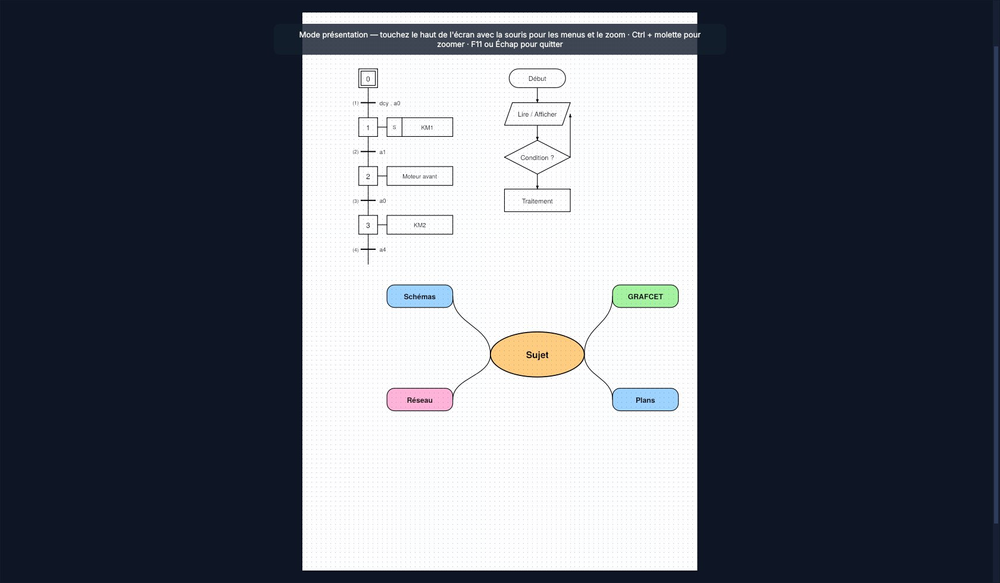
Le mode présentation : la page sur tout l'écran, avec les outils et la bibliothèque
1Outils d'écriture et de dessin
2Bibliothèque réduite à deux colonnes
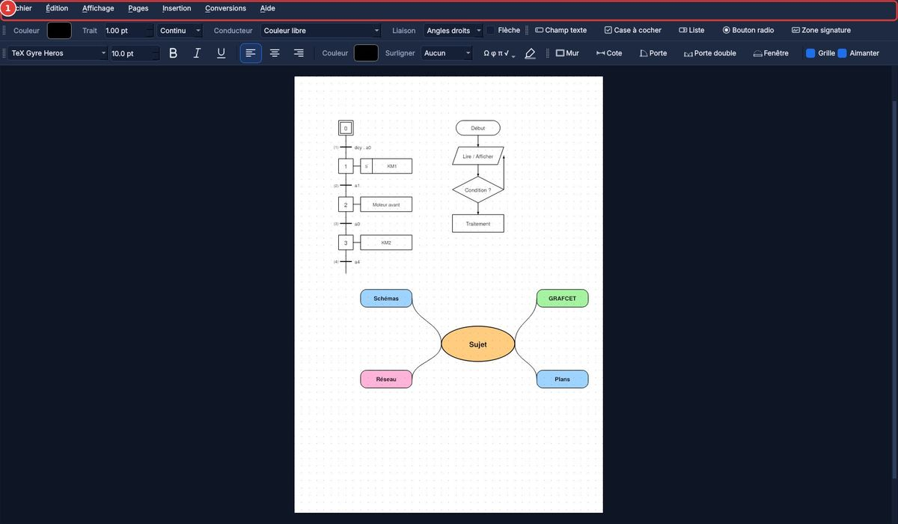
Souris en haut de l'écran : les menus et le zoom réapparaissent
1Menus et barre rapide : zoom − / +, page entière, annuler, ⛶ pour quitter
4. Ouvrir et enregistrer
Fichier › Ouvrir accepte les PDF, les documents Word / ODT (convertis automatiquement) et les images.
Les dessins sont enregistrés en vectoriel dans le PDF. En rouvrant le fichier dans PDF DUO, tout reste modifiable.
Fichier › Exporter un PDF final produit un PDF aplati, à distribuer.
5. Dessiner un schéma
Cliquer un symbole dans la bibliothèque puis cliquer sur la page pour le poser (ou glisser-déposer). Échap pour finir.
Favoris : clic droit sur un symbole › Ajouter aux favoris. Il reçoit une étoile ★, passe en tête de sa catégorie et apparaît dans la catégorie ★ Favoris, en haut de la liste, qui s'ouvre au démarrage. Clic droit › Retirer des favoris pour l'enlever. Les favoris sont gardés d'une séance à l'autre. Le bouton ☆ à côté de la liste met une bibliothèque entière en favori : elle passe en tête de la liste. Clic droit sur un élément de la page : premier plan, arrière-plan, rotation, miroir, copier, dupliquer, supprimer, favoris.
R tourne de 90°, E de 15° (Maj = sens inverse), H / V font un miroir. Angle précis dans Propriétés.
La poignée bleue en bas à droite agrandit l'élément en gardant ses proportions.
Le repère (KM1, S1…) et les numéros de bornes se modifient dans Propriétés ; boutons « Repère à gauche / à droite ».
Outil Fil : un clic par angle ; un clic sur une borne (petit cercle) accroche le fil. Outil Liaison : cliquer deux bornes, le tracé se fait seul. Les fils suivent les symboles déplacés.
Liste Conducteur : couleurs normalisées (phase, neutre bleu, terre vert/jaune, fibre, Ethernet…). Les points de jonction se placent automatiquement.
Énergie solaire : deux catégories. Énergie solaire – symboles pour le schéma normalisé (cellule et module PV, onduleur, régulateur MPPT / PWM, batterie 2 / 6 / 12 / 24 / 48 V, shunt, ampèremètre et voltmètre continus, compteur Wh, fusible gPV, sectionneur DC, parafoudre, MC4). Énergie solaire – schéma technologique pour dessiner une installation en site isolé avec les appareils réels (panneau, contrôleur de charge, batterie, onduleur, moniteur, charges), en reliant leurs bornes avec des fils rouges et noirs. Exemple fourni : exemple-solaire.pdf.
Sources de secours : éolienne (avec régulateur et résistance de délestage), groupe électrogène et alternateur de voiture ou de bateau, en symbole et en vue réaliste. Les coupe-circuits à fusibles 2 pôles (vue) protègent le champ PV, la sortie batterie et la sortie utilisation, comme dans l'exemple.
Organigramme (rapport de stage) : Insertion › Organigramme d'entreprise pose un organigramme déjà relié (direction, services, tuteur, stagiaire) ; double-cliquez sur une case pour écrire les noms. Les cases de la catégorie Organigramme permettent de l'agrandir.
Bibliothèques ajoutées en 1.2.0 : Prévention électrique (EPI, EIS, ECS : casque, gants isolants, tapis, cadenas de consignation, VAT, balisage, MALT-CCT), Manutention (pictogrammes d'emballage), Sécurité (signalisation, produits dangereux SGH), Logistique, Prothésiste dentaire et Outils de l'électricien, du mécanicien et de l'informatique (pince à sertir RJ45, connecteurs, testeur…). Dessins originaux, libres d'utilisation. Aussi : Travail en hauteur (échafaudage, PIRL, escabeau, nacelles), outils isolés 1000 V, schéma dentaire avec numérotation FDI et prothèses amovibles.
Bibliothèques ajoutées en 1.3.0 : Gestes qui sauvent, Biologie de base, Robotique (Arduino, Raspberry Pi avec brochage GPIO, micro:bit, capteurs et modules ; LED de couleur et résistance à anneaux réglables, code des couleurs), Sécurité incendie (équipements et signalisation), Équipements industriels, Habitat (GTL, chauffage, éclairage, bornes de recharge) et Métiers de la sécurité (sapeurs-pompiers, sûreté, police).
Équipements à états : pour la barrière, le tapis roulant, le monte-charge, l'ascenseur, la pompe, les réservoirs, les vérins, les capteurs, le bras manipulateur… la position ou l'état se règle dans Propriétés (barrière haute, milieu ou basse, niveau d'eau, pompe en marche, tige sortie…). On montre ainsi chaque étape d'un cycle, par exemple pour un GRAFCET. Exemples fournis : exemple-pompage.pdf, exemple-parking.pdf, exemple-premiers-secours.pdf.
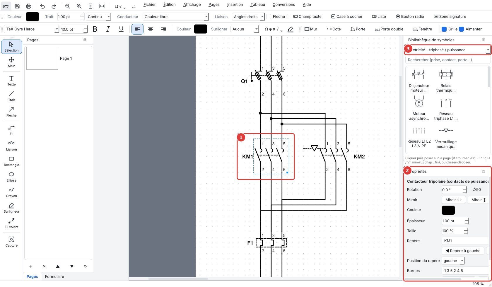
Un symbole sélectionné et ses propriétés
1Symbole sélectionné (cadre pointillé) : poignée bleue en bas à droite pour l'agrandir
2Rotation, miroir, couleur, épaisseur, taille, repère KM1 et sa position
3Choix de la catégorie de symboles
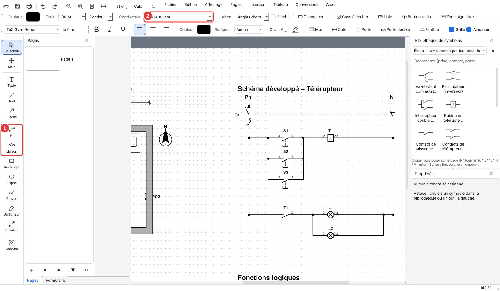
Fils, liaisons et couleurs de conducteurs
1Outils Fil et Liaison
2Couleur normalisée du conducteur
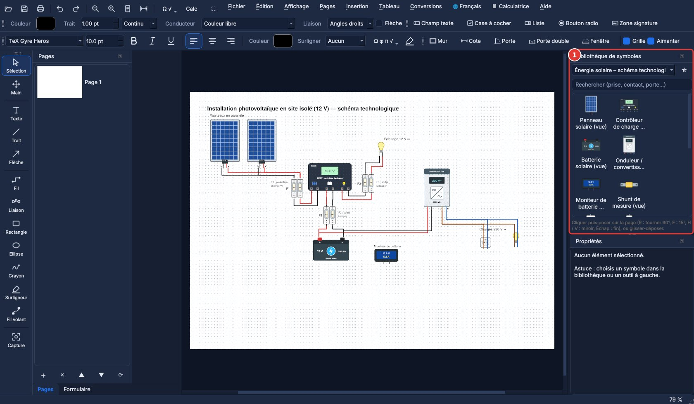
Installation solaire en site isolé : schéma technologique
1Catégories Énergie solaire de la bibliothèque
Organigramme d'entreprise pour le rapport de stage
2Clic droit sur un symbole : ajouter aux favoris ou les retirer
Équipements à états : station de pompage, réglages dans Propriétés
1Niveau du puits, niveau du château d'eau, pompe en marche ou arrêtée
6. Plans de logement
Régler l'échelle (1/50, 1/100…) et le pas de grille réel dans la barre Plan.
Outil Mur : un clic par angle, double-clic pour finir. Outils Porte, Porte double, Fenêtre : passer sur un mur, l'ouverture s'aligne et prend l'épaisseur du mur.
Outil Cote : glisser d'un point à l'autre, la longueur réelle s'affiche. Insertion › Cartouche ajoute le cartouche.
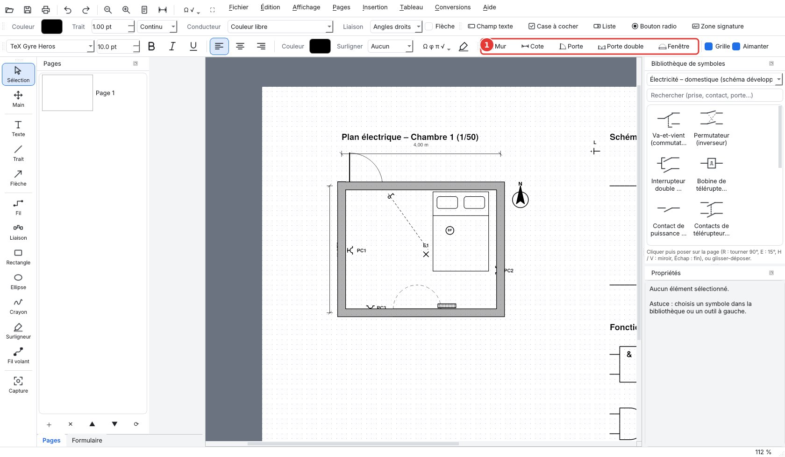
Plan d'une chambre au 1/50 : murs, porte, fenêtre, prises, cotes
1Outils Mur, Cote, Porte, Porte double, Fenêtre
7. GRAFCET, algorigramme, carte mentale
Poser une étape initiale, la sélectionner puis Ctrl+G : une transition et l'étape suivante sont ajoutées, reliées et numérotées.
Double-clic sur une forme pour écrire son texte. Choisir Liaison : courbe pour les cartes mentales, cocher Flèche pour les algorigrammes.
Barre Formulaire et signature : champ texte, case à cocher, liste, bouton radio, zone de signature, lien. Double-clic pour remplir ; panneau Formulaire pour tout voir.
Bouton Signature : dessiner ou importer sa signature, puis cliquer où la poser.
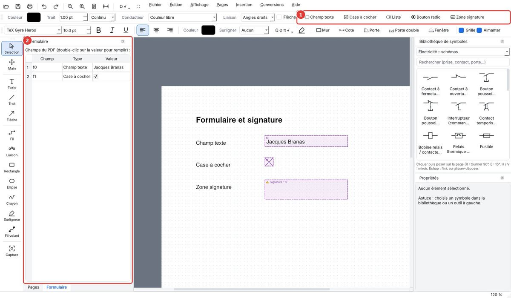
Champs de formulaire remplissables
1Barre Formulaire et signature
2Panneau Formulaire : tous les champs et leurs valeurs
Bouton Ω √ : Ω, φ, π, Δ, μ, °, ±… Écrire √{12,5} : la barre de la racine couvre tout le nombre.
Correcteur orthographique : dans la fenêtre de texte et dans les cases des tableaux, les mots inconnus sont soulignés en rouge. Clic droit sur un mot souligné : suggestions de correction, Ajouter au dictionnaire (mots techniques, noms propres) ou Ignorer. Réglages dans Affichage › Correcteur orthographique : activer ou non, langue (automatique : pour chaque paragraphe, le correcteur reconnaît s'il est écrit dans la langue du logiciel, en français, en anglais ou en albanais ; ou une langue fixe parmi les onze : français, anglais, espagnol, portugais, allemand, italien, grec, russe, ukrainien, arabe, albanais — toutes les langues du logiciel sauf le chinois), dictionnaire personnel. Fonctionne sans Internet.
Texte avec caractères spéciaux et racine sur tout le nombre
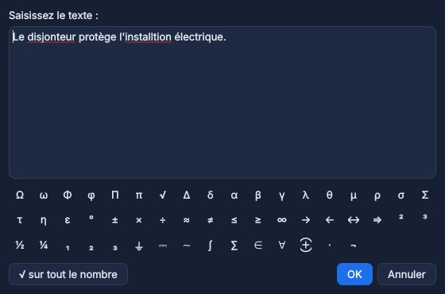
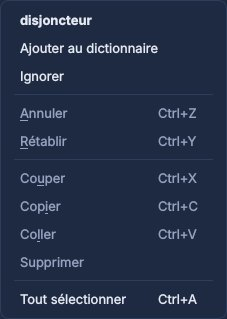
Correcteur orthographique : mots soulignés et suggestions au clic droit
10. Tableaux et calculatrice
Menu Tableau › Insérer un tableau… (Ctrl+Maj+T) : choisir le nombre de lignes et de colonnes. La première ligne peut servir d'en-tête (gras, colorée).
Double-clic sur le tableau pour l'éditer : ajouter ou supprimer des lignes et des colonnes, fusionner ou scinder des cases, régler la taille du texte, l'alignement et la couleur de l'en-tête. Le tableau se redimensionne avec la poignée bleue.
Calculs comme dans un tableur : une case qui commence par = est une formule. Exemples : =B2*C2, =B3 x C3, =(A1+A2)/2, =√(144), =A1^2, =SOMME(D2:D4), =MOYENNE(B2:B6), =MAX(…), =MIN(…). Le résultat s'affiche dans la page et se met à jour quand les cases changent.
Menu Tableau › Calculatrice scientifique et graphique… (Ctrl+K) : une fenêtre à part avec les fonctions sin, cos, tan, ln, log, √, puissances, π, en degrés ou en radians, et l'historique des calculs. La calculatrice s'ouvre aussi avec le bouton Calc de la barre du haut.
Onglet Graphique : tracer jusqu'à trois courbes (ex. x^2 - 4, 2x + 1, 3sin(x)), zoomer à la molette, déplacer en glissant, puis Insérer le graphique dans la page.
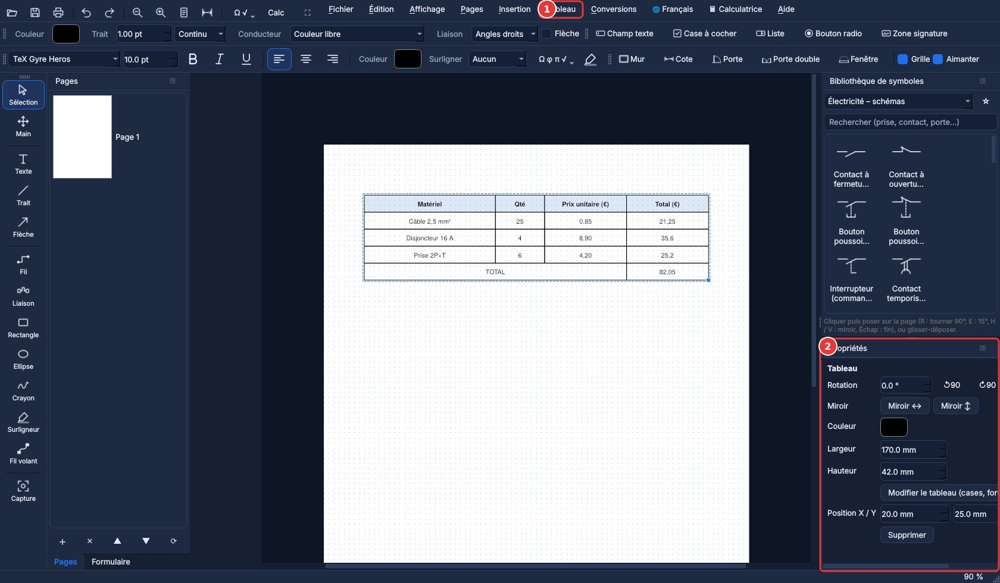
Un tableau avec calculs : les totaux sont des formules
1Menu Tableau
2Taille du tableau et bouton « Modifier le tableau »
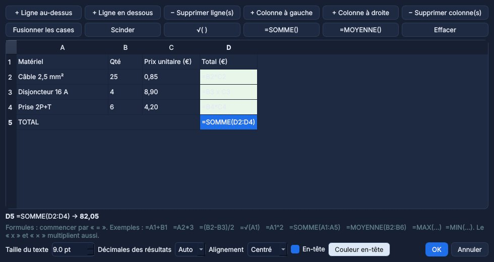
L'édition du tableau (double-clic) : lignes, colonnes, fusion, formules
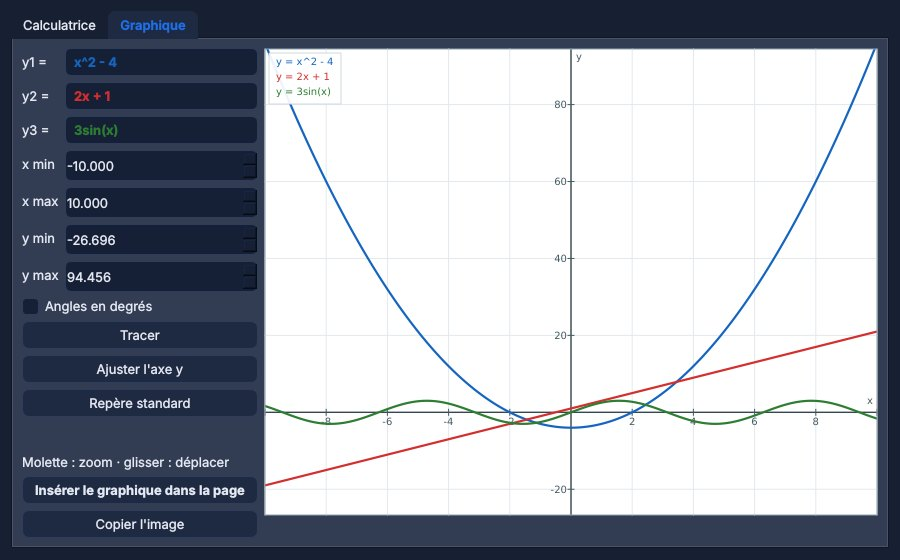
La calculatrice scientifique et son onglet Graphique
11. Conversions
Menu Conversions : Word / ODT → PDF, PDF → Word, PDF → ODT, Word ↔ ODT, images → PDF, pages → PNG.
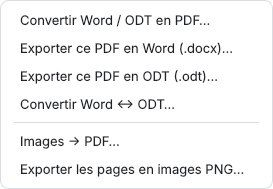
Le menu Conversions
12. Nouveautés de la version 1.3.3
Loupe de traduction (bouton 🔍 Traduire ou Ctrl+L) : lire un document dans sa langue et écrire en français, avec lecture à voix haute — section 13.
Dossier technique : assembler plusieurs PDF en un seul, avec signets et page de sommaire ; extraire la page affichée — section 14.
Reconnaissance de texte (OCR) pour les documents scannés — section 15.
Appareils de mesure : pince ampèremétrique, wattmètre (appareil à 4 bornes et symbole), mégohmmètre (bornes E G L). Ces appareils et bien d'autres se règlent dans Propriétés — section 16.
Insertions : organigramme, carte mentale et GRAFCET construit étape par étape avec Ctrl+G — section 17.
Zone de texte écrite directement sur la page, avec la palette des caractères spéciaux juste en dessous ; fractions et racines mises en forme — section 18.
En-tête, pied de page et numérotation automatique des pages, avec des zones en tableau — section 19.
Correcteur d'orthographe en onze langues : grec, russe, ukrainien, arabe et albanais s'ajoutent ; en réglage automatique, la langue de chaque paragraphe est reconnue (section 9).
Douze langues : l'albanais (Shqip) rejoint les onze langues de l'interface, de l'installateur et de cette notice. Mode présentation : boutons ◀ ▶ pour réduire les palettes (section 3).
13. Loupe de traduction
Pour un élève qui arrive d'un autre pays, ou pour une documentation technique en langue étrangère : cliquer sur 🔍 Traduire dans la barre du haut (ou Ctrl+L). Une petite fenêtre s'ouvre au-dessus du document ; on la déplace par sa barre de titre et on règle sa taille par le coin en bas à droite. Étroite, elle passe en affichage compact.
Onglet Lire : laisser la souris immobile sur un paragraphe du document. Il est entouré en orange, recopié dans la loupe et traduit de la langue Document vers la langue Traduire en (le bouton ⇄ inverse les deux). Cocher 📌 Figer pour garder la traduction quand la souris bouge.
Onglet Écrire : l'élève écrit dans sa langue, et la phrase est traduite au fil de la frappe, avec les mêmes langues que celles choisies en haut. Insérer dans la page place le texte traduit sous le paragraphe surligné ; Copier le met dans le presse-papiers.
🔊 Écouter lit à voix haute la phrase d'origine ou la traduction. La molette de la souris sur un texte l'agrandit ou le réduit. Les voix sont celles de l'ordinateur ; pour en ajouter : Windows, Paramètres › Heure et langue › Voix › Ajouter des voix ; macOS, Réglages › Accessibilité › Contenu énoncé ; Linux, paquets speech-dispatcher et espeak-ng.
En ligne ou hors ligne (bouton ⚙) : en ligne, la traduction est immédiate et rien n'est à installer. Hors ligne, aucun texte ne quitte l'ordinateur : le bouton 💾 télécharge une seule fois les langues voulues (environ 100 Mo chacune), puis la traduction fonctionne sans internet, par exemple dans une salle sans wifi. Le mode Automatique utilise internet quand il répond, sinon les langues installées. Une cinquantaine de langues sont proposées.
La loupe lit le texte du PDF : pour un document scanné, lancer d'abord la reconnaissance de texte (section 15).
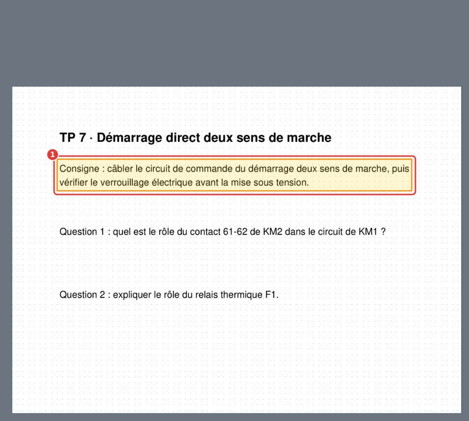
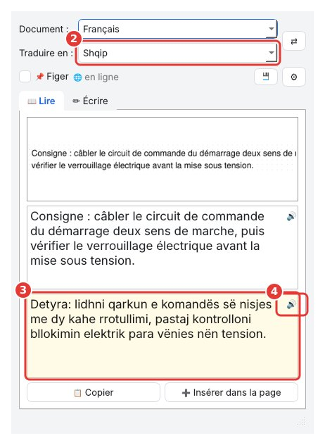
Onglet Lire : le paragraphe sous la souris est surligné et traduit
1Paragraphe sous la souris, entouré en orange
2Langue de la traduction (⇄ inverse les langues)
3Traduction du paragraphe
4🔊 Écouter la phrase
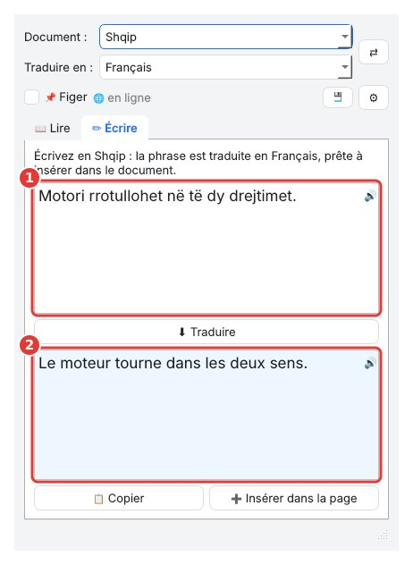
Onglet Écrire : la phrase écrite est traduite au fil de la frappe
1Phrase écrite par l'élève dans sa langue
2Traduction, prête à copier ou à insérer dans la page
14. Dossier technique : assembler des PDF, extraire une page
Pour se faire sa propre documentation de TP à partir des notices de plusieurs fabricants : Pages › Assembler des PDF (dossier technique)…
➕ Ajouter des fichiers… accepte des PDF et des images (photos, scans). Pour chaque fichier, la colonne Pages indique les pages à garder : « toutes », ou par exemple 1-3,7,12- (12- : de la page 12 jusqu'à la fin). ⬆ ⬇ changent l'ordre, ✖ retire une ligne.
Titre du signet : chaque fichier devient un signet, et les signets forment le sommaire cliquable des lecteurs PDF. Avec Page de sommaire au début, une première page au format A4 liste les parties et leur numéro de page ; un clic sur une ligne mène à la partie.
📄 Créer le PDF… enregistre le dossier puis propose de l'ouvrir dans PDF DUO pour l'annoter, y ajouter un cartouche ou des questions.
Une seule page : Pages › Extraire la page affichée… enregistre la page visible, avec ses dessins et ses annotations, dans un nouveau PDF.
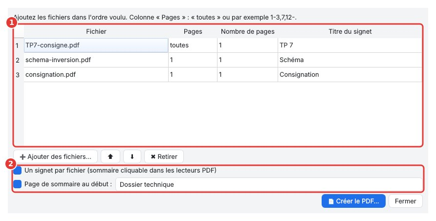
Assembler des PDF : fichiers, pages à garder, signets et sommaire
1Fichiers dans l'ordre du dossier, pages à garder et titre de chaque signet
2Signets et page de sommaire
15. Reconnaissance de texte (OCR)
Un document scanné n'est qu'une image : on ne peut ni chercher, ni copier, ni traduire son texte. Pages › Reconnaître le texte (OCR)… le rend lisible par l'ordinateur.
Choisir la langue du document (16 langues), garder Reconnaître aussi l'anglais pour les termes techniques, puis les pages : toutes, la page affichée ou une liste comme 1-3,5. Seulement les pages sans texte évite de traiter deux fois la même page.
La première fois, le fichier de la langue (1 à 5 Mo) est téléchargé depuis le dépôt officiel du moteur Tesseract ; ensuite tout se fait sans internet.
Le texte reconnu est ajouté de façon invisible : la page garde son aspect, mais la loupe de traduction, la recherche et le copier-coller fonctionnent. Penser à enregistrer le document. Une page droite et nette, numérisée à 300 ppp, donne le meilleur résultat.
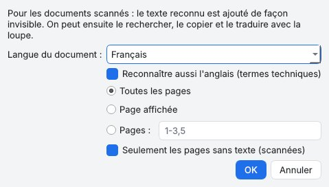
Reconnaître le texte d'un document scanné
16. Appareils et équipements réglables
Beaucoup de dessins de la bibliothèque ne sont pas figés : cliquer sur l'appareil posé dans la page, et ses réglages apparaissent dans le panneau Propriétés, à droite, sous la taille et le repère. Le dessin change aussitôt.
Sciences – appareils de mesure : multimètre et pince ampèremétrique (grandeur mesurée A~, A=, V~, V=, Ω, valeur affichée, mâchoires ouvertes ou fermées), wattmètre (appareil à 4 bornes et symbole normalisé), mégohmmètre (tension d'essai 250, 500 ou 1000 V, valeur affichée, bornes E G L), oscilloscope (voies 1 et 2), GBF (forme et fréquence), alimentation stabilisée (tension et courant).
Autres exemples : verrerie de chimie (niveau du liquide), balance (masse), panneau solaire, batterie et onduleur (puissance, tension), résistance (valeur et tolérance : les anneaux de couleur suivent), LED (couleur), portes et fenêtres des plans (largeur), escalier (marches) et équipements industriels : barrière, convoyeur, ascenseur, pompe, réservoirs, vérins, capteurs.
Copier un appareil (Ctrl+C, Ctrl+V) puis changer son affichage permet de montrer une mesure avant et après, ou chaque étape d'un cycle.
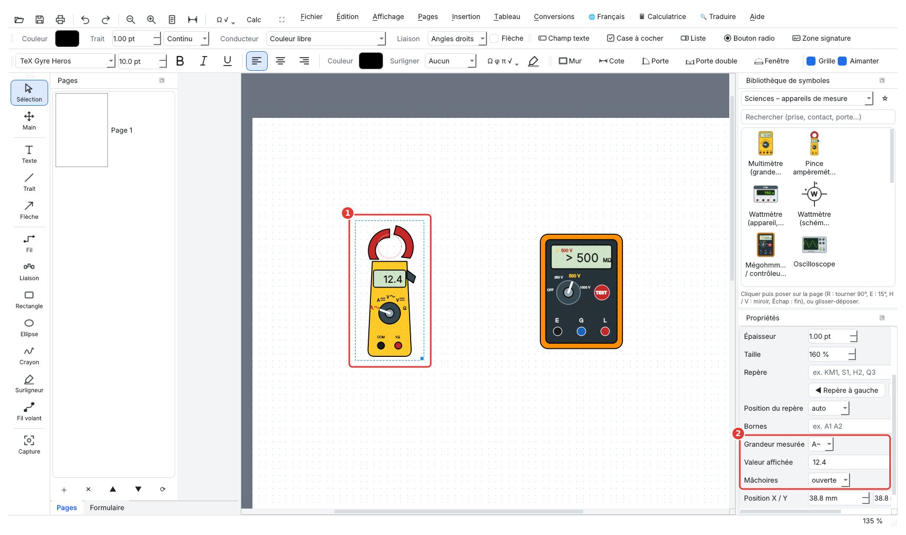
Pince ampèremétrique sélectionnée : ses réglages dans Propriétés
1Appareil sélectionné (ici mâchoires ouvertes, 12,4 A)
17. Insérer une carte mentale, un organigramme, un GRAFCET
Le menu Insertion propose des modèles prêts à compléter : Organigramme d'entreprise et Carte mentale (un sujet au centre, quatre idées et leurs détails). Double-clic sur une forme pour changer son texte ; les liaisons suivent quand on déplace une forme.
GRAFCET : dans la catégorie GRAFCET de la bibliothèque, poser une étape initiale, la sélectionner puis appuyer sur Ctrl+G (ou Insertion › GRAFCET : ajouter transition + étape sous la sélection, ou le bouton Ajouter transition + étape (Ctrl+G) dans Propriétés). Une transition et l'étape suivante sont ajoutées dessous, reliées et numérotées. La nouvelle étape reste sélectionnée : appuyer encore sur Ctrl+G pour continuer.
Double-clic sur une transition pour écrire sa réceptivité ; les actions associées se posent à droite des étapes depuis la bibliothèque.
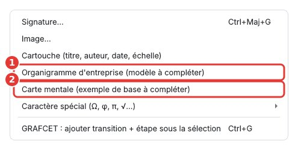
Menu Insertion : modèles d'organigramme et de carte mentale
1Organigramme d'entreprise
2Carte mentale
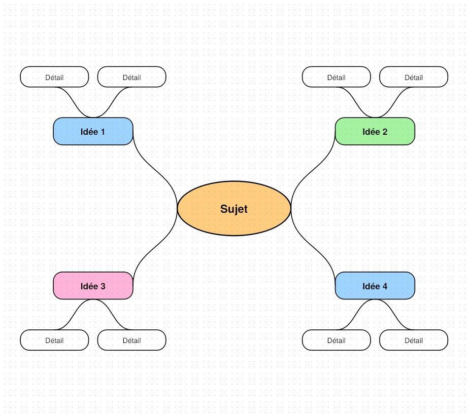
Carte mentale insérée, prête à compléter
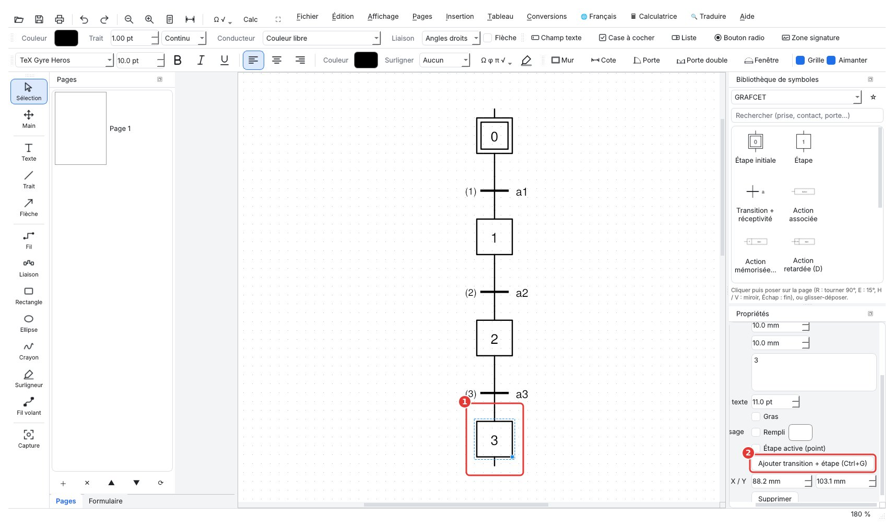
GRAFCET construit avec Ctrl+G
1Nouvelle étape, ajoutée sous la précédente et sélectionnée
2Bouton Ajouter transition + étape (Ctrl+G) dans Propriétés
18. Zone de texte, fractions et racines
Deux façons d'écrire sur la page : l'outil Texte (un clic sur la page, puis une petite fenêtre de saisie) et la Zone de texte (outil « Zone de texte », menu Insertion ou Ctrl+Alt+T) : on dessine la zone à la souris et on écrit directement dedans, à la taille réelle ; le texte passe à la ligne tout seul.
Sous la zone, la palette des caractères spéciaux s'affiche sur un fond clair légèrement translucide : le caractère survolé est surligné en jaune et montré en grand avant d'être inséré. ✓ Terminer (ou Échap, Ctrl+Entrée, un clic ailleurs sur la page) range la palette.
Un seul clic dans une zone de texte pour y écrire de nouveau ; la glisser pour la déplacer ; Échap puis Suppr pour l'effacer. Dans Propriétés : taille, gras, alignement et cadre.
Fractions : bouton a⁄b Fraction (palette de la zone de texte, fenêtre de l'outil Texte, menu Insertion › Caractère spécial). Une petite fenêtre s'ouvre : une case pour le haut, un trait, une case pour le bas (Entrée passe d'une case à l'autre), avec l'aperçu. La fraction s'affiche aussitôt mise en forme, par exemple après le signe égal : le trait s'allonge tout seul, le haut et le bas sont centrés.
Racines : bouton √ Racine, avec une case pour ce qui va sous la racine. Un simple clic sur une fraction ou une racine la rouvre pour la modifier. Fractions et racines se combinent (racine d'une fraction) et s'écrivent aussi dans les cases des tableaux.
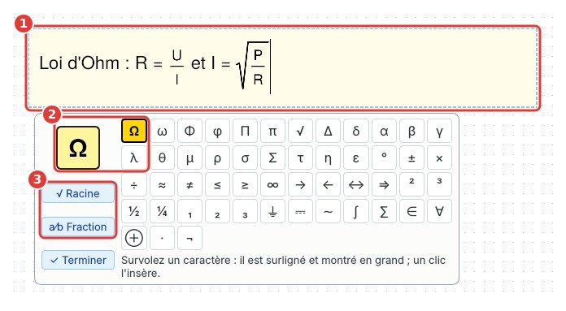
Zone de texte : on écrit sur la page, la palette est juste en dessous
1Zone de texte avec une fraction et une racine
2Caractère survolé, surligné et montré en grand
3Boutons √ Racine et a⁄b Fraction
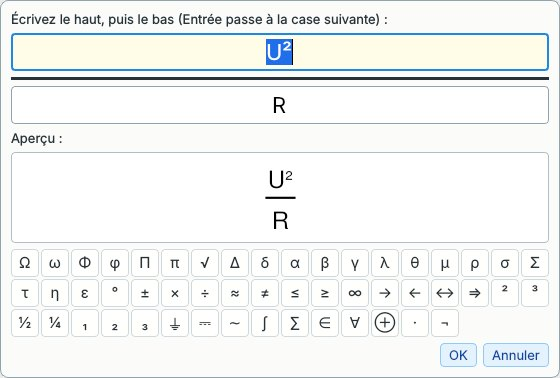
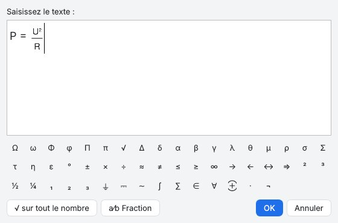
La fenêtre Fraction (à gauche) et l'outil Texte avec une fraction (à droite)
19. En-tête, pied de page et numérotation
Pages › En-tête, pied de page et numérotation… : ce qui est réglé ici apparaît sur toutes les pages et suit l'ajout, la suppression ou le déplacement des pages ; chaque changement se voit tout de suite.
Numérotation automatique : sept modèles (1, – 1 –, Page 1, 1 / 5, Page 1 / 5, Page 1 sur 5, p. 1), en bas ou en haut, à gauche, au centre ou à droite, et le premier numéro au choix.
En-tête et pied de page découpés en tableau de 1 à 4 colonnes et 1 ou 2 lignes, pour obtenir des zones distinctes (établissement, titre du TP, nom de l'élève, classe, date…), encadrés ou séparés par un simple trait, avec des largeurs de colonnes au choix (par exemple 30, 40, 30).
Les boutons N° de page, Nombre de pages, Date et Titre insèrent dans la case choisie des champs qui se remplissent tout seuls. Rien sur la première page laisse une page de garde vierge. Le tout est enregistré dans le PDF et reste modifiable dans PDF DUO.
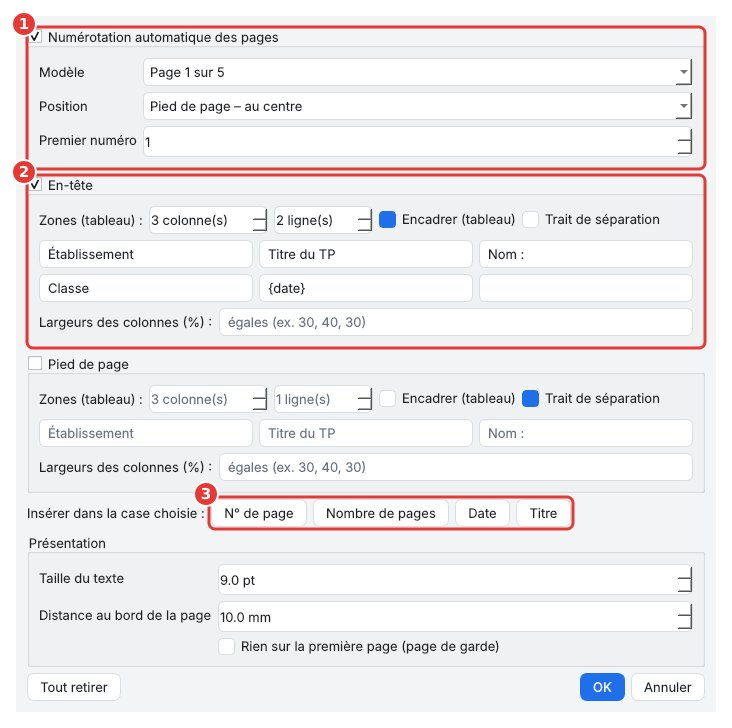
Réglage de l'en-tête, du pied de page et de la numérotation
1Numérotation automatique
2En-tête découpé en tableau (2 lignes, 3 colonnes)
3Champs automatiques : n° de page, nombre de pages, date, titre
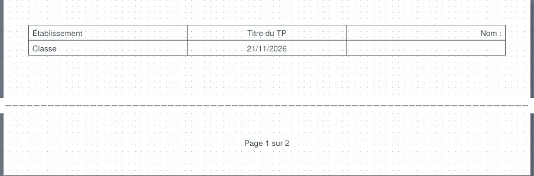
Résultat : l'en-tête en tableau en haut de chaque page, le numéro en bas
20. Nouveautés de la version 1.3.2
Onze langues : français, anglais, espagnol, portugais, allemand, italien, grec, chinois, russe, ukrainien et arabe (affichage de droite à gauche). Le menu 🌐 de la barre du haut change la langue tout de suite, sans redémarrer ; l'installateur règle aussi la langue choisie pendant l'installation.
Calculatrice directement dans la barre de menus du haut (🖩). En plein écran, le panneau des propriétés reste à droite.
Fils : l'extrémité d'un fil s'aimante sur la borne la plus proche ; maintenir Alt pour déplacer un élément librement, sans la grille. Les étapes de GRAFCET ont des amorces en haut et en bas pour tirer une liaison au milieu.
Nouveaux symboles : pôle de contacteur de puissance unipolaire, interrupteur représenté avec un rond, bornier X1 de 10 bornes et borne seule (les repères restent horizontaux en miroir), interrupteur simple redessiné. Nouvelles bibliothèques : Soins infirmiers (bandages, matériel médical de base, trousse de secours), Cuisine et service en salle, Couture et Structure réseau (baies, panneaux de brassage, commutateurs, VLAN) en schéma technologique.
Carte mentale : Insertion › Carte mentale place un exemple de base prêt à compléter.
Mises à jour : au démarrage, si l'ordinateur est connecté à internet, PDF DUO vérifie s'il existe une nouvelle version et propose de l'installer.
21. Soutenir le projet
PDF DUO est gratuit et libre (licence GNU GPL v3). Un don sur ko-fi.com/djlatinjazz aide à le faire évoluer (Aide › Faire un don).
Site : deltapassion.github.io/PDF-DUO — Contact : deltapassion@gmx.com
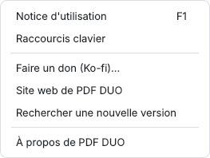
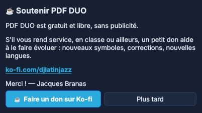
Menu Aide et fenêtre de don
User guide
PDF, electrical diagrams, GRAFCET and floor plans — free software
PDF DUO lets you read, fill in and sign PDFs, draw electrical, pneumatic and network diagrams, GRAFCETs and floor plans, and convert Word / ODF ↔ PDF. It is designed for students and teachers in all vocational courses (for example electrical, IT, dental technician, logistics, warehouse), and is also handy for school life: posters, membership forms and signed documents for the student association. The red numbers on the screenshots refer to the lists below them.
1. Installation
Windows: run the installer PDF-DUO-Windows-Setup.exe, or unzip PDF-DUO-Windows.zip and open PDF DUO.exe.
Linux: double-click pdf-duo_amd64.deb (Debian, Ubuntu, Mint), or use the AppImage (make it executable, then open it).
macOS: pick the Apple Silicon (M1, M2…) or Intel version, unzip, drag “PDF DUO” to Applications. First launch: right-click › Open.
Word → PDF conversions: PDF DUO uses LibreOffice if installed (most faithful, free), otherwise Microsoft Word, otherwise its own converter (simplified layout). ODT files need LibreOffice.
2. The window
Top, left of the menus: open, save, print, undo ↶ / redo ↷, zoom − / +, whole page, special characters Ω √.
Right: the symbol library (choose a category or type a word to search) and the Properties panel of the selected item.
View › Palettes shows or hides each panel; View › Theme and Language change the look and language.
Presentation mode (F11 key or ⛶ button): full screen; only the tools on the left and the library on the right stay visible; menus and zoom reappear when the mouse touches the top of the screen, Esc to exit.
To project a diagram in class or work with nothing around, switch to presentation mode: the page fills the screen. The toolbar on the left (select, text, line, arrow, wire, shapes, pencil, highlighter) and the library on the right, narrowed to two columns, stay visible: you can still write and place symbols.
To enter it: press F11, or the ⛶ button in the top bar, or the menu View › Presentation mode (full screen).
During the presentation: Ctrl + wheel to zoom, wheel to scroll. Move the mouse to the very top of the screen: the menus and the quick bar (zoom − / +, whole page, undo) reappear, then hide when the mouse moves down.
To leave it: press Esc (or F11 again). Palettes and toolbars come back as before. If a drawing tool is in use, the first Esc ends it and the second leaves full screen.
More room: the small ◀ ▶ buttons on the sides collapse the toolbar on the left and the library on the right. A collapsed palette reappears as soon as the mouse touches the edge of the screen, and tucks away again when the mouse moves off. The page keeps the zoom chosen before full screen.
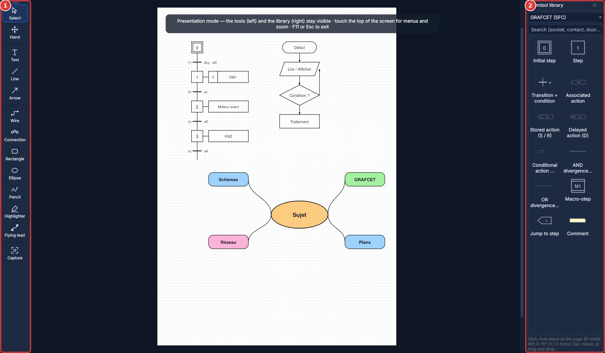
Presentation mode: the page full screen, with the tools and the library
1Writing and drawing tools
2Library narrowed to two columns
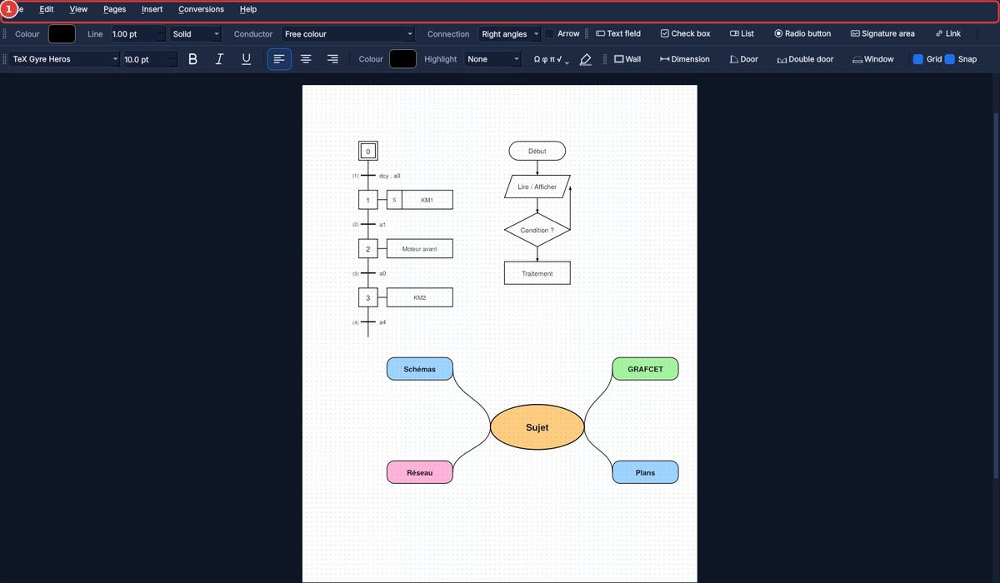
Mouse at the top of the screen: menus and zoom reappear
1Menus and quick bar: zoom − / +, whole page, undo, ⛶ to exit
4. Opening and saving
File › Open accepts PDFs, Word / ODT documents (converted automatically) and images.
Drawings are saved as vectors in the PDF. When the file is reopened in PDF DUO, everything stays editable.
File › Export a final PDF produces a flattened PDF to hand out.
5. Drawing a diagram
Click a symbol in the library, then click on the page to place it (or drag and drop). Esc to finish.
Favourites: right-click a symbol › Add to favourites. It gets a ★ star, moves to the top of its category and appears in the ★ Favourites category at the top of the list, which opens at start-up. Right-click › Remove from favourites to take it out. Favourites are kept between sessions. The ☆ button next to the list makes a whole library a favourite: it moves to the top of the list. Right-click an item on the page: bring to front, send to back, rotate, mirror, copy, duplicate, delete, favourites.
R rotates 90°, E 15° (Shift = other way), H / V mirror. Exact angle in Properties.
The blue handle at the bottom right enlarges the item proportionally.
The label (KM1, S1…) and terminal numbers are edited in Properties; “Label on the left / right” buttons.
Wire tool: one click per corner; clicking a terminal (small circle) attaches the wire. Connection tool: click two terminals and the route is drawn. Wires follow moved symbols.
Conductor list: standard colours (phase, blue neutral, green/yellow earth, fibre, Ethernet…). Junction dots are placed automatically.
Solar energy: two categories. Solar energy – symbols for the standard diagram (PV cell and module, inverter, MPPT / PWM charge controller, 2 / 6 / 12 / 24 / 48 V battery, shunt, DC ammeter and voltmeter, Wh meter, gPV fuse, DC disconnector, surge protector, MC4). Solar energy – wiring diagram to draw an off-grid installation with real-looking equipment (panel, charge controller, battery, inverter, monitor, loads), connecting their terminals with red and black wires. Example supplied: exemple-solaire.pdf.
Backup sources: wind turbine (with charge controller and dump load), generator set and car or boat alternator, as symbols and realistic pictures. The 2-pole fuse holders (picture) protect the PV array, the battery output and the load output, as in the example.
Organisation chart (internship report): Insert › Company organisation chart places a ready-linked chart (management, departments, supervisor, intern); double-click a box to type the names. The boxes of the Organisation chart category let you extend it.
Libraries added in 1.2.0: Electrical safety (PPE, insulating and collective equipment: helmet, insulating gloves, mat, lockout padlock, voltage tester, barriers, earthing device), Handling (packaging symbols), Safety (signs, GHS hazardous substances), Logistics, Dental technician and Tools for electricians, mechanics and IT (RJ45 crimper, connectors, tester…). Original drawings, free to use. Also: Working at height (scaffolding, podium, stepladder, aerial platforms), 1000 V insulated tools, dental chart with FDI numbering and removable dentures.
Libraries added in 1.3.0: Life-saving actions, Basic biology, Robotics (Arduino, Raspberry Pi with GPIO pinout, micro:bit, sensors and modules; adjustable LED colour and resistor bands, colour code chart), Fire safety (equipment and signs), Industrial equipment, Housing (utility duct, heating, lighting, charging points) and Security careers (firefighters, security, police).
Equipment with states: for the barrier, belt conveyor, hoist, lift, pump, tanks, cylinders, sensors, robot arm… the position or state is set in Properties (barrier up, middle or down, water level, pump running, rod extended…). Each step of a cycle can be shown, for example for a GRAFCET. Examples provided: exemple-pompage.pdf, exemple-parking.pdf, exemple-premiers-secours.pdf.
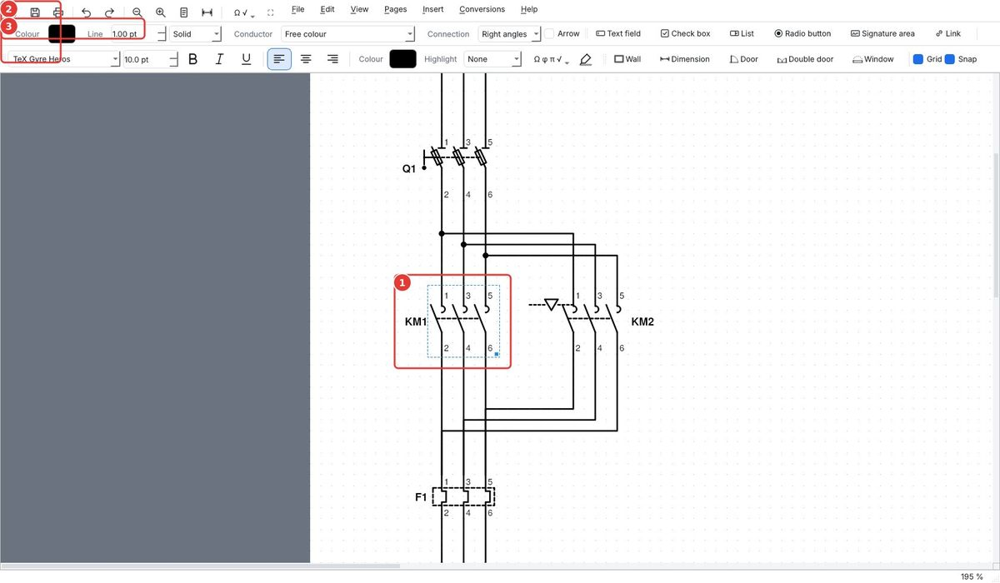
A selected symbol and its properties
1Selected symbol (dotted frame): blue handle at the bottom right to enlarge it
2Rotation, mirror, colour, width, size, KM1 label and its position
3Choice of the symbol category
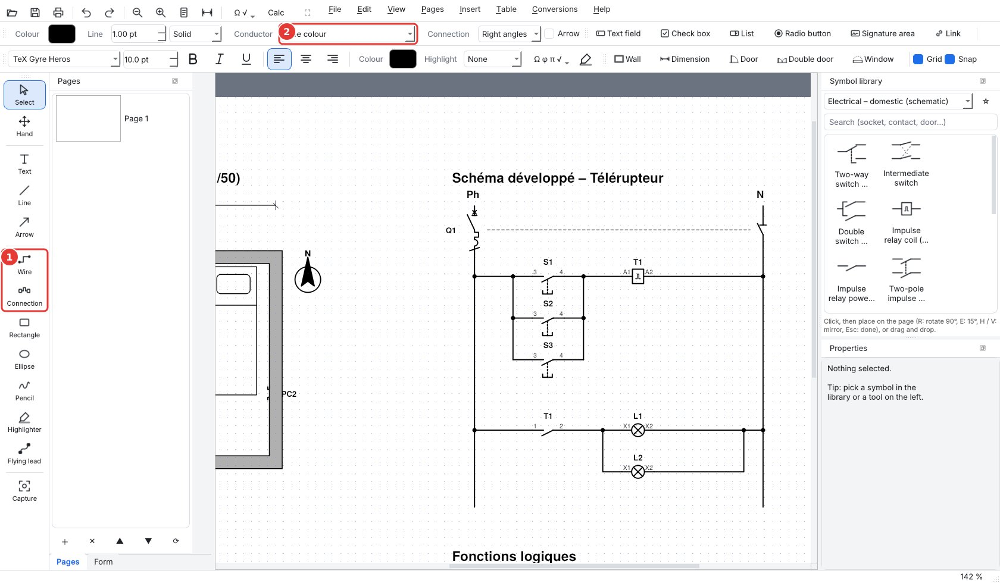
Wires, connections and conductor colours
1Wire and Connection tools
2Standard conductor colour
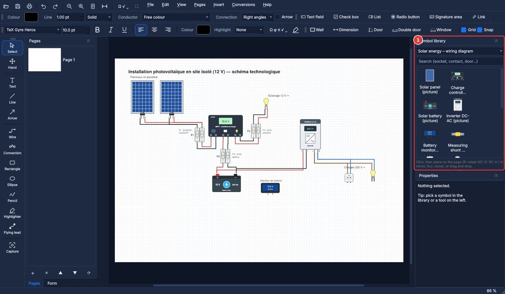
Off-grid solar installation: wiring diagram
1Solar energy categories of the library
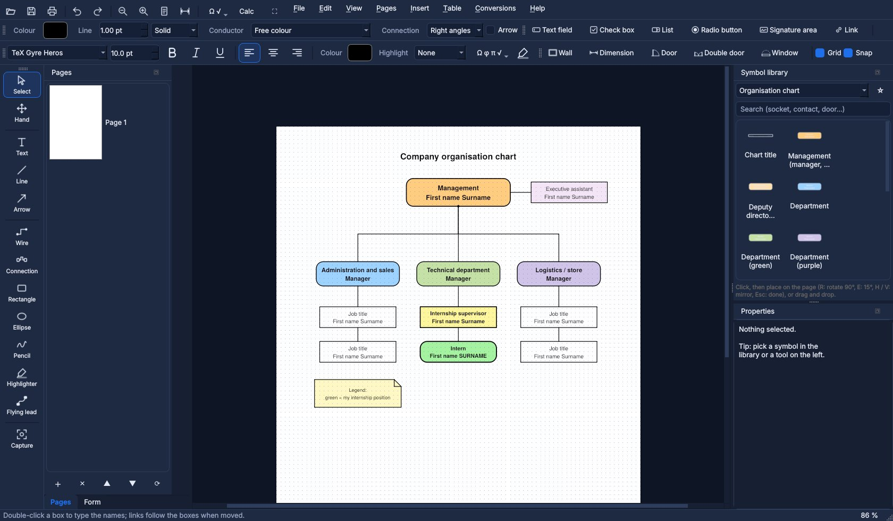
Company organisation chart for the internship report
2Right-click a symbol: add to or remove from favourites
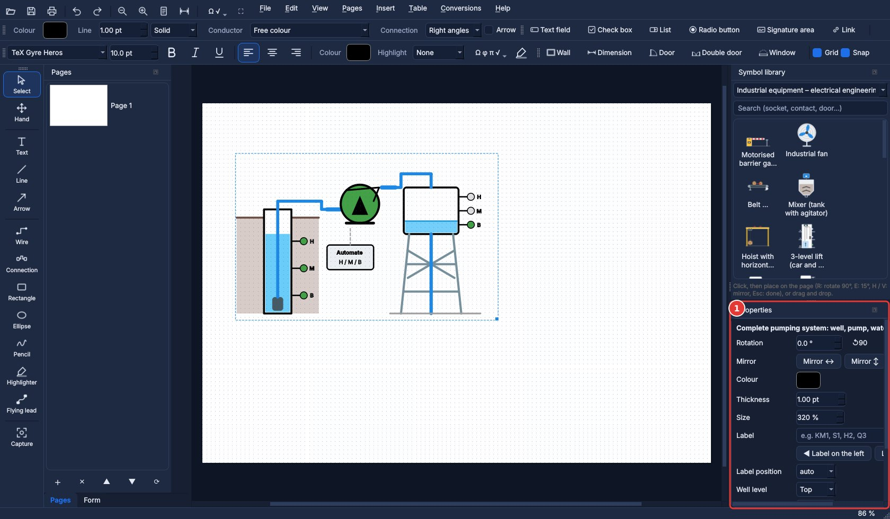
Equipment with states: pumping station, settings in Properties
1Well level, water tower level, pump running or stopped
6. Floor plans
Set the scale (1/50, 1/100…) and the real grid step in the Plan toolbar.
Wall tool: one click per corner, double-click to finish. Door, Double door, Window tools: move over a wall and the opening aligns and takes the wall thickness.
Dimension tool: drag from point to point, the real length is shown. Insert › Title block adds the title block.
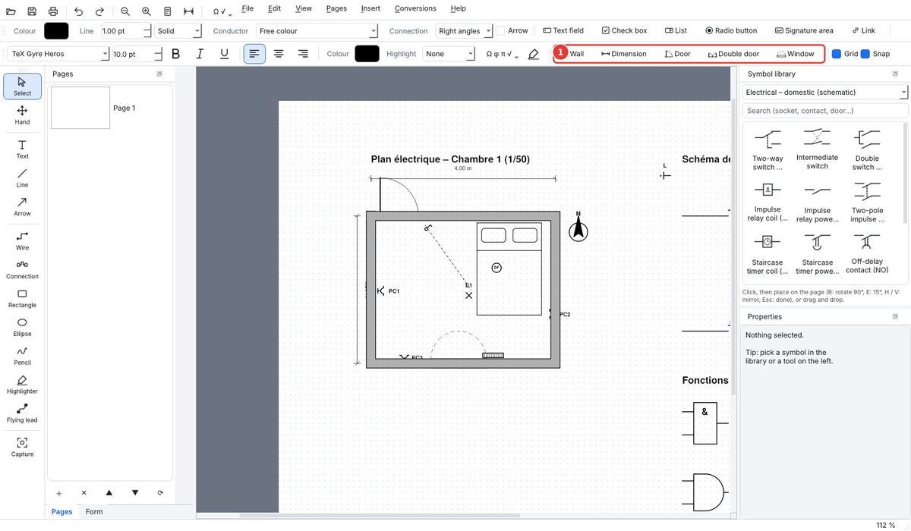
Plan of a bedroom at 1:50: walls, door, window, sockets, dimensions
1Wall, Dimension, Door, Double door, Window tools
7. GRAFCET, flowcharts, mind maps
Place an initial step, select it, then press Ctrl+G: a transition and the next step are added, connected and numbered.
Double-click a shape to type its text. Choose Connection: curved for mind maps, tick Arrow for flowcharts.
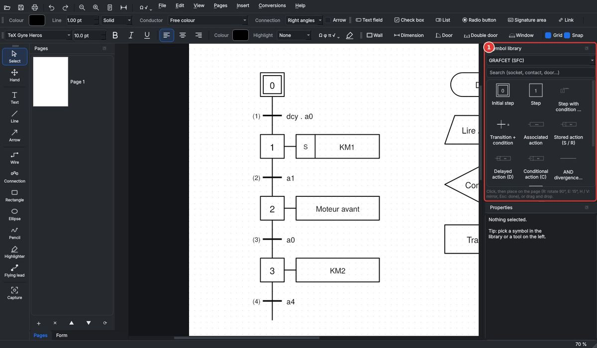
A GRAFCET: steps, transitions, actions
1GRAFCET category of the library
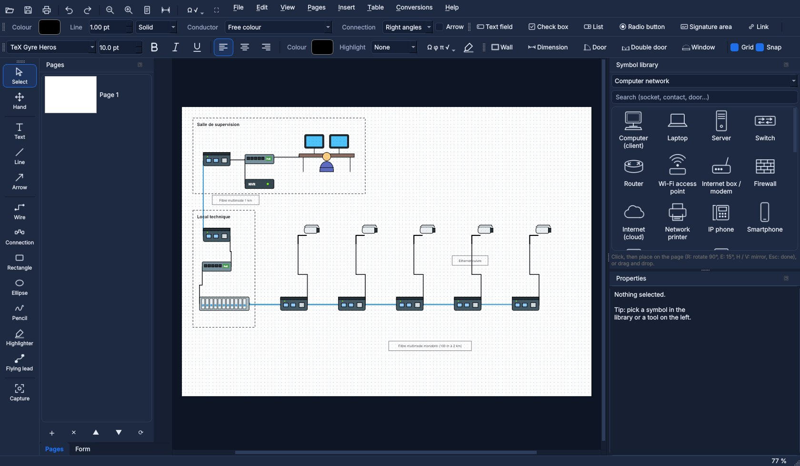
CIEL network diagram (CCTV, fibre) — midnight blue theme
8. Forms and signature
Form and signature toolbar: text field, check box, list, radio button, signature area, link. Double-click to fill in; the Form panel lists everything.
Signature button: draw or import your signature, then click where to place it.
Ω √ button: Ω, φ, π, Δ, μ, °, ±… Type √{12.5}: the root bar covers the whole number.
Spell checker: in the text window and in table cells, unknown words are underlined in red. Right-click an underlined word: correction suggestions, Add to dictionary (technical terms, proper names) or Ignore. Settings in View › Spell checker: on or off, language (automatic: for each paragraph the checker recognises whether it is written in the program's language, French, English or Albanian; or a fixed language among the eleven: French, English, Spanish, Portuguese, German, Italian, Greek, Russian, Ukrainian, Arabic, Albanian — every language of the program except Chinese), personal dictionary. Works offline.
Text with special characters and a root over the whole numberSpell checker: underlined words and right-click suggestions
10. Tables and calculator
Table › Insert a table… menu (Ctrl+Shift+T): choose the number of rows and columns. The first row can be a header (bold, coloured).
Double-click the table to edit it: add or delete rows and columns, merge or split cells, set the text size, alignment and header colour. Resize the table with the blue handle.
Spreadsheet-style calculations: a cell starting with = is a formula. Examples: =B2*C2, =B3 x C3, =(A1+A2)/2, =√(144), =A1^2, =SUM(D2:D4), =AVERAGE(B2:B6), =MAX(…), =MIN(…). The result is shown on the page and updates when the cells change.
Table › Scientific graphing calculator… menu (Ctrl+K): a separate window with sin, cos, tan, ln, log, √, powers, π, in degrees or radians, and a history of calculations. The calculator also opens with the Calc button in the top bar.
Graph tab: plot up to three curves (e.g. x^2 - 4, 2x + 1, 3sin(x)), zoom with the wheel, pan by dragging, then Insert the graph in the page.
A table with calculations: the totals are formulas
1Table menu
2Table size and “Edit table” button
Editing the table (double-click): rows, columns, merge, formulasThe scientific calculator and its Graph tab
11. Conversions
Conversions menu: Word / ODT → PDF, PDF → Word, PDF → ODT, Word ↔ ODT, images → PDF, pages → PNG.
The Conversions menu
12. What's new in version 1.3.3
Translation lens (🔍 Translate button or Ctrl+L): read a document in your own language and write in French, with reading aloud — section 13.
Technical file: combine several PDFs into one, with bookmarks and a contents page; extract the displayed page — section 14.
Text recognition (OCR) for scanned documents — section 15.
Measuring instruments: clamp meter, wattmeter (4-terminal instrument and symbol), megohmmeter (E G L terminals). These and many other devices are set in Properties — section 16.
Inserts: organisation chart, mind map, and a GRAFCET built step by step with Ctrl+G — section 17.
Text box written straight onto the page, with the special-character palette just below; formatted fractions and roots — section 18.
Header, footer and automatic page numbering, with zones laid out as a table — section 19.
Spell checker in eleven languages: Greek, Russian, Ukrainian, Arabic and Albanian are added; in automatic mode, the language of each paragraph is recognised (section 9).
Twelve languages: Albanian (Shqip) joins the eleven languages of the interface, the installer and this guide. Presentation mode: ◀ ▶ buttons to collapse the palettes (section 3).
13. Translation lens
For a pupil who has just arrived from another country, or for technical documentation in a foreign language: click 🔍 Translate in the top bar (or Ctrl+L). A small window opens above the document; move it by its title bar and resize it from the bottom-right corner. When narrow, it switches to a compact layout.
Read tab: hold the mouse still over a paragraph of the document. It is outlined in orange, copied into the lens and translated from the Document language into the Translate into language (the ⇄ button swaps them). Tick 📌 Freeze to keep the translation when the mouse moves.
Write tab: the pupil writes in their own language and the sentence is translated while typing, with the same languages as those chosen at the top. Insert into the page places the translated text under the highlighted paragraph; Copy puts it on the clipboard.
🔊 Listen reads the original sentence or the translation aloud. The mouse wheel over a text makes it larger or smaller. The voices are those of the computer; to add some: Windows, Settings › Time & language › Speech › Add voices; macOS, Settings › Accessibility › Spoken Content; Linux, the speech-dispatcher and espeak-ng packages.
Online or offline (⚙ button): online, translation is instant and nothing needs installing. Offline, no text leaves the computer: the 💾 button downloads the chosen languages once (about 100 MB each), then translation works without the internet, for example in a room with no Wi-Fi. Automatic mode uses the internet when it responds, otherwise the installed languages. About fifty languages are available.
The lens reads the text of the PDF: for a scanned document, run text recognition first (section 15).
Read tab: the paragraph under the mouse is highlighted and translated
1Paragraph under the mouse, outlined in orange
2Translation language (⇄ swaps the languages)
3Translation of the paragraph
4🔊 Listen to the sentence
Write tab: the sentence is translated while typing
1Sentence written by the pupil in their own language
2Translation, ready to copy or insert into the page
14. Technical file: combine PDFs, extract a page
To build your own practical-work documentation from several manufacturers' manuals: Pages › Combine PDFs (technical file)…
➕ Add files… accepts PDFs and images (photos, scans). For each file, the Pages column gives the pages to keep: “all”, or for example 1-3,7,12- (12-: from page 12 to the end). ⬆ ⬇ change the order, ✖ removes a row.
Bookmark title: each file becomes a bookmark, and the bookmarks form the clickable outline shown by PDF readers. With Contents page at the start, a first A4 page lists the parts and their page numbers; clicking a line jumps to that part.
📄 Create the PDF… saves the file, then offers to open it in PDF DUO to annotate it or add a title block or questions.
A single page: Pages › Extract the displayed page… saves the visible page, with its drawings and annotations, as a new PDF.
Combining PDFs: files, pages to keep, bookmarks and contents page
1Files in the order of the technical file, pages to keep and title of each bookmark
2Bookmarks and contents page
15. Text recognition (OCR)
A scanned document is only a picture: its text cannot be searched, copied or translated. Pages › Recognise text (OCR)… makes it readable by the computer.
Choose the document language (16 languages), keep Also recognise English for technical terms, then the pages: all, the displayed page or a list such as 1-3,5. Only pages without text avoids processing the same page twice.
The first time, the language file (1 to 5 MB) is downloaded from the official repository of the Tesseract engine; after that everything works without the internet.
The recognised text is added invisibly: the page looks the same, but the translation lens, search and copy-paste work. Remember to save the document. A straight, sharp page scanned at 300 dpi gives the best result.
Recognising the text of a scanned document
16. Adjustable instruments and equipment
Many drawings in the library are not fixed: click the device placed on the page and its settings appear in the Properties panel on the right, below the size and label. The drawing changes at once.
Science – measuring instruments: multimeter and clamp meter (measured quantity A~, A=, V~, V=, Ω, displayed value, jaws open or closed), wattmeter (4-terminal instrument and standard symbol), megohmmeter (test voltage 250, 500 or 1000 V, displayed value, E G L terminals), oscilloscope (channels 1 and 2), function generator (waveform and frequency), regulated power supply (voltage and current).
Other examples: chemistry glassware (liquid level), scales (mass), solar panel, battery and inverter (power, voltage), resistor (value and tolerance: the colour bands follow), LED (colour), doors and windows in floor plans (width), staircase (steps) and industrial equipment: barrier, conveyor, lift, pump, tanks, cylinders, sensors.
Copying a device (Ctrl+C, Ctrl+V) and then changing its display shows a measurement before and after, or each step of a cycle.
17. Inserting a mind map, an organisation chart, a GRAFCET
The Insert menu offers templates ready to complete: Company organisation chart and Mind map (a topic in the centre, four ideas and their details). Double-click a shape to change its text; the links follow when a shape is moved.
GRAFCET: from the GRAFCET category of the library, place an initial step, select it and press Ctrl+G (or Insert › GRAFCET: add transition + step below selection, or the Add transition + step (Ctrl+G) button in Properties). A transition and the next step are added below, linked and numbered. The new step stays selected: press Ctrl+G again to carry on.
Double-click a transition to write its receptivity; associated actions are placed to the right of the steps from the library.
Insert menu: organisation chart and mind map templates
1Company organisation chart
2Mind map
Mind map inserted, ready to completeGRAFCET built with Ctrl+G
1New step, added below the previous one and selected
2Add transition + step (Ctrl+G) button in Properties
18. Text box, fractions and roots
Two ways of writing on the page: the Text tool (one click on the page, then a small input window) and the Text box ("Text box" tool, Insert menu or Ctrl+Alt+T): draw the box with the mouse and write straight into it, at real size; the text wraps by itself.
Below the box, the special-character palette appears on a light, slightly translucent background: the character under the mouse is highlighted in yellow and shown large before it is inserted. ✓ Done (or Esc, Ctrl+Enter, a click elsewhere on the page) puts the palette away.
A single click in a text box lets you write in it again; drag it to move it; Esc then Delete to remove it. In Properties: size, bold, alignment and frame.
Fractions: a⁄b Fraction button (text-box palette, Text tool window, Insert › Special character menu). A small window opens: a box for the top, a bar, a box for the bottom (Enter moves from one box to the next), with a preview. The fraction is shown formatted at once, for example after an equals sign: the bar lengthens by itself and the top and bottom are centred.
Roots: √ Root button, with a box for what goes under the root. A single click on a fraction or a root opens it again for editing. Fractions and roots can be combined (root of a fraction) and can also be written in table cells.
Text box: you write on the page, the palette is just below
1Text box with a fraction and a root
2Character under the mouse, highlighted and shown large
3√ Root and a⁄b Fraction buttons
The Fraction window (left) and the Text tool with a fraction (right)
19. Header, footer and page numbering
Pages › Header, footer and page numbering…: what you set here appears on every page and follows pages being added, deleted or moved; each change shows straight away.
Automatic numbering: seven models (1, – 1 –, Page 1, 1 / 5, Page 1 / 5, Page 1 of 5, p. 1), at the bottom or top, left, centre or right, and any first number.
Header and footer split into a table of 1 to 4 columns and 1 or 2 rows, giving separate zones (school, practical-work title, pupil's name, class, date…), framed or separated by a simple line, with column widths of your choice (for example 30, 40, 30).
The Page no., Number of pages, Date and Title buttons insert self-filling fields into the chosen cell. Nothing on the first page leaves a cover page blank. Everything is saved in the PDF and stays editable in PDF DUO.
Header, footer and numbering settings
1Automatic numbering
2Header split into a table (2 rows, 3 columns)
3Automatic fields: page no., number of pages, date, title
Result: the table header at the top of each page, the number at the bottom
20. What's new in version 1.3.2
Eleven languages: French, English, Spanish, Portuguese, German, Italian, Greek, Chinese, Russian, Ukrainian and Arabic (right-to-left layout). The 🌐 menu in the top bar changes the language at once, without restarting; the installer also sets the language chosen during installation.
Calculator directly in the top menu bar (🖩). In full screen, the properties panel stays on the right.
Wires: the end of a wire snaps magnetically to the nearest terminal; hold Alt to move an item freely, without the grid. GRAFCET steps have stubs at the top and bottom to draw a link in the middle.
New symbols: single-pole power contactor pole, switch drawn with a circle, 10-terminal block X1 and single terminal (labels stay horizontal when mirrored), redrawn one-way switch. New libraries: Nursing care (bandages, basic medical equipment, first-aid kit), Kitchen and restaurant service, Sewing and Network structure (racks, patch panels, switches, VLAN) as a technological diagram.
Mind map: Insert › Mind map places a basic example ready to complete.
Updates: at start-up, if the computer is connected to the internet, PDF DUO checks whether a new version exists and offers to install it.
21. Support the project
PDF DUO is free software (GNU GPL v3). A donation at ko-fi.com/djlatinjazz helps it grow (Help › Donate).
PDF, esquemas eléctricos, GRAFCET y planos — software libre
PDF DUO sirve para leer, rellenar y firmar PDF, dibujar esquemas eléctricos, neumáticos y de red, GRAFCET y planos de vivienda, y convertir Word / ODF ↔ PDF. Está pensado para alumnos y profesores de todas las ramas de formación profesional (por ejemplo electricidad, informática, prótesis dental, logística, almacén), y también es útil para la vida del centro: carteles, fichas de inscripción y documentos firmados de la asociación de alumnos. Los números rojos de las capturas remiten a las listas de debajo.
1. Instalación
Windows: ejecutar el instalador PDF-DUO-Windows-Setup.exe, o descomprimir PDF-DUO-Windows.zip y abrir PDF DUO.exe.
Linux: doble clic en pdf-duo_amd64.deb (Debian, Ubuntu, Mint), o usar la AppImage (hacerla ejecutable y abrirla).
macOS: elegir la versión Apple Silicon (M1, M2…) o Intel, descomprimir y arrastrar «PDF DUO» a Aplicaciones. Primer inicio: clic derecho › Abrir.
Conversiones Word → PDF: PDF DUO usa LibreOffice si está instalado (lo más fiel, gratuito), si no Microsoft Word, y si no su propia conversión (diseño simplificado). Los archivos ODT necesitan LibreOffice.
2. La pantalla
Arriba, a la izquierda de los menús: abrir, guardar, imprimir, deshacer ↶ / rehacer ↷, zoom − / +, página completa, caracteres especiales Ω √.
A la izquierda: las herramientas (selección, texto, trazo, cable, conexión, formas, lápiz, resaltador, cable volante, captura).
A la derecha: la biblioteca de símbolos (elegir una categoría o buscar una palabra) y el panel Propiedades del elemento seleccionado.
Ver › Paletas muestra u oculta cada panel; Ver › Tema e Idioma cambian el aspecto y el idioma.
Modo presentación (tecla F11 o botón ⛶): pantalla completa; solo quedan visibles las herramientas a la izquierda y la biblioteca a la derecha; los menús y el zoom reaparecen al tocar el borde superior con el ratón, Esc para salir.
4Color, grosor, conductor, tipo de conexión, flecha
5Paleta de escritura: fuente, tamaño, negrita, color, resaltador
6Biblioteca de símbolos (categorías y búsqueda)
7Propiedades del elemento seleccionado
8Páginas (miniaturas) y pestaña Formulario
9La página de trabajo
3. Modo presentación (pantalla completa)
Para proyectar un esquema en clase o trabajar sin nada alrededor, pase al modo presentación: la página ocupa toda la pantalla. Siguen visibles la barra de herramientas de la izquierda (selección, texto, trazo, flecha, cable, formas, lápiz, resaltador) y la biblioteca a la derecha, reducida a dos columnas: se puede seguir escribiendo y colocando símbolos.
Para entrar: tecla F11, o botón ⛶ de la barra superior, o menú Ver › Modo presentación (pantalla completa).
Durante la presentación: Ctrl + rueda para hacer zoom, rueda para desplazarse. Lleve el ratón al borde superior de la pantalla: los menús y la barra rápida (zoom − / +, página completa, deshacer) reaparecen y se ocultan al bajar el ratón.
Para salir: tecla Esc (o F11 de nuevo). Las paletas y barras vuelven como antes. Si hay una herramienta de dibujo en curso, la primera pulsación de Esc la termina y la segunda sale de la pantalla completa.
Más espacio: los pequeños botones ◀ ▶ de los lados reducen la barra de herramientas de la izquierda y la biblioteca de la derecha. Una paleta reducida reaparece en cuanto el ratón toca el borde de la pantalla y se recoge cuando el ratón se aleja. La página conserva el zoom elegido antes de la pantalla completa.
Modo presentación: la página a pantalla completa, con las herramientas y la biblioteca
1Herramientas de escritura y dibujo
2Biblioteca reducida a dos columnas
Ratón en el borde superior: reaparecen los menús y el zoom
1Menús y barra rápida: zoom − / +, página completa, deshacer, ⛶ para salir
4. Abrir y guardar
Archivo › Abrir acepta PDF, documentos Word / ODT (convertidos automáticamente) e imágenes.
Los dibujos se guardan en vectorial en el PDF. Al reabrirlo en PDF DUO, todo sigue siendo editable.
Archivo › Exportar un PDF final genera un PDF aplanado para distribuir.
5. Dibujar un esquema
Hacer clic en un símbolo de la biblioteca y luego en la página para colocarlo (o arrastrar y soltar). Esc para terminar.
Favoritos: clic derecho en un símbolo › Añadir a favoritos. Recibe una estrella ★, pasa al principio de su categoría y aparece en la categoría ★ Favoritos, arriba de la lista, que se abre al iniciar. Clic derecho › Quitar de favoritos para retirarlo. Los favoritos se conservan de una sesión a otra. El botón ☆ junto a la lista marca una biblioteca entera como favorita: pasa al principio de la lista. Clic derecho en un elemento de la página: primer plano, fondo, rotación, espejo, copiar, duplicar, eliminar, favoritos.
R gira 90°, E 15° (Mayús = sentido inverso), H / V hacen espejo. Ángulo exacto en Propiedades.
El tirador azul abajo a la derecha amplía el elemento manteniendo sus proporciones.
La referencia (KM1, S1…) y los números de bornes se editan en Propiedades.
Herramienta Cable: un clic por esquina; un clic en un borne (pequeño círculo) conecta el cable. Herramienta Conexión: hacer clic en dos bornes y el trazado se hace solo. Los cables siguen a los símbolos.
Lista Conductor: colores normalizados (fase, neutro azul, tierra verde/amarillo, fibra, Ethernet…). Los puntos de unión se colocan solos.
Energía solar: dos categorías. Energía solar – símbolos para el esquema normalizado (célula y módulo FV, inversor, regulador MPPT / PWM, batería 2 / 6 / 12 / 24 / 48 V, shunt, amperímetro y voltímetro de continua, contador Wh, fusible gPV, seccionador DC, protector de sobretensiones, MC4). Energía solar – esquema tecnológico para dibujar una instalación aislada con los aparatos reales (panel, regulador, batería, inversor, monitor, cargas), uniendo sus bornes con cables rojos y negros. Ejemplo incluido: exemple-solaire.pdf.
Fuentes de apoyo: aerogenerador (con regulador y resistencia de disipación), grupo electrógeno y alternador de coche o barco, en símbolo y en vista realista. Los portafusibles de 2 polos (vista) protegen el campo FV, la salida de batería y la salida de consumo, como en el ejemplo.
Organigrama (informe de prácticas): Insertar › Organigrama de empresa coloca un organigrama ya conectado (dirección, departamentos, tutor, alumno en prácticas); doble clic en una casilla para escribir los nombres. Las casillas de la categoría Organigrama permiten ampliarlo.
Bibliotecas añadidas en la 1.2.0: Prevención eléctrica (EPI, equipos aislantes y colectivos: casco, guantes aislantes, alfombra, candado de consignación, verificador de tensión, balizamiento, puesta a tierra), Manipulación (pictogramas de embalaje), Seguridad (señalización, productos peligrosos SGA), Logística, Protésico dental y Herramientas de electricista, mecánico e informática (crimpadora RJ45, conectores, comprobador…). Dibujos originales, de uso libre. También: Trabajo en altura (andamio, plataforma, escalera, plataformas elevadoras), herramientas aisladas 1000 V, odontograma con numeración FDI y prótesis removibles.
Bibliotecas añadidas en la 1.3.0: Gestos que salvan, Biología básica, Robótica (Arduino, Raspberry Pi con patillaje GPIO, micro:bit, sensores y módulos; LED de color y resistencia con bandas ajustables, código de colores), Seguridad contra incendios (equipos y señalización), Equipos industriales, Vivienda (canaleta técnica, calefacción, iluminación, puntos de recarga) y Oficios de la seguridad (bomberos, vigilancia, policía).
Equipos con estados: para la barrera, la cinta transportadora, el montacargas, el ascensor, la bomba, los depósitos, los cilindros, los sensores, el brazo manipulador… la posición o el estado se ajusta en Propiedades (barrera arriba, en medio o abajo, nivel de agua, bomba en marcha, vástago extendido…). Así se muestra cada etapa de un ciclo, por ejemplo para un GRAFCET. Ejemplos: exemple-pompage.pdf, exemple-parking.pdf, exemple-premiers-secours.pdf.
Un símbolo seleccionado y sus propiedades
1Símbolo seleccionado (marco punteado): tirador azul abajo a la derecha para ampliarlo
2Rotación, espejo, color, grosor, tamaño, referencia KM1 y su posición
3Elección de la categoría de símbolos
Cables, conexiones y colores de conductores
1Herramientas Cable y Conexión
2Color normalizado del conductor
Instalación solar aislada: esquema tecnológico
1Categorías Energía solar de la biblioteca
Organigrama de empresa para el informe de prácticasPrevención eléctrica, manipulación, logística, dental, herramientas
1Elegir la categoría en la biblioteca
Los favoritos al principio de la biblioteca
1Categoría ★ Favoritos
2Clic derecho en un símbolo: añadir o quitar de favoritos
Equipos con estados: estación de bombeo, ajustes en Propiedades
1Nivel del pozo, nivel del depósito, bomba en marcha o parada
6. Planos de vivienda
Ajustar la escala (1/50, 1/100…) y el paso de cuadrícula real en la barra Plano.
Herramienta Muro: un clic por esquina, doble clic para terminar. Puerta, Puerta doble, Ventana: pasar sobre un muro y la abertura se alinea sola.
Herramienta Cota: arrastrar de un punto a otro, se muestra la longitud real. Insertar › Cajetín añade el cajetín.
Plano de un dormitorio a 1/50: muros, puerta, ventana, enchufes, cotas
Botón Ω √: Ω, φ, π, Δ, μ, °, ±… Escribir √{12,5}: la barra de la raíz cubre todo el número.
Corrector ortográfico: en la ventana de texto y en las celdas de las tablas, las palabras desconocidas se subrayan en rojo. Clic derecho en una palabra subrayada: sugerencias, Añadir al diccionario (términos técnicos, nombres propios) o Ignorar. Ajustes en Ver › Corrector ortográfico: activar o no, idioma (automático: en cada párrafo el corrector reconoce si está escrito en el idioma del programa, en francés, en inglés o en albanés; o un idioma fijo entre los once: francés, inglés, español, portugués, alemán, italiano, griego, ruso, ucraniano, árabe, albanés — todos los idiomas del programa salvo el chino), diccionario personal. Funciona sin Internet.
Texto con caracteres especiales y raíz sobre todo el númeroCorrector ortográfico: palabras subrayadas y sugerencias con clic derecho
10. Tablas y calculadora
Menú Tabla › Insertar una tabla… (Ctrl+Mayús+T): elegir el número de filas y columnas. La primera fila puede ser un encabezado (negrita, en color).
Doble clic en la tabla para editarla: añadir o eliminar filas y columnas, combinar o dividir celdas, ajustar el tamaño del texto, la alineación y el color del encabezado. La tabla se redimensiona con el tirador azul.
Cálculos como en una hoja de cálculo: una celda que empieza por = es una fórmula. Ejemplos: =B2*C2, =B3 x C3, =(A1+A2)/2, =√(144), =A1^2, =SUM(D2:D4), =AVERAGE(B2:B6), =MAX(…), =MIN(…). El resultado aparece en la página y se actualiza cuando cambian las celdas.
Menú Tabla › Calculadora científica y gráfica… (Ctrl+K): una ventana aparte con sin, cos, tan, ln, log, √, potencias, π, en grados o radianes, e historial de cálculos. La calculadora también se abre con el botón Calc de la barra superior.
Pestaña Gráfico: trazar hasta tres curvas (p. ej. x^2 - 4, 2x + 1, 3sin(x)), ampliar con la rueda, desplazar arrastrando y luego Insertar el gráfico en la página.
Una tabla con cálculos: los totales son fórmulas
1Menú Tabla
2Tamaño de la tabla y botón «Editar la tabla»
Edición de la tabla (doble clic): filas, columnas, combinar, fórmulasLa calculadora científica y su pestaña Gráfico
11. Conversiones
Menú Conversiones: Word / ODT → PDF, PDF → Word, PDF → ODT, Word ↔ ODT, imágenes → PDF, páginas → PNG.
El menú Conversiones
12. Novedades de la versión 1.3.3
Lupa de traducción (botón 🔍 Traducir o Ctrl+L): leer un documento en el propio idioma y escribir en francés, con lectura en voz alta — sección 13.
Dosier técnico: combinar varios PDF en uno solo, con marcadores y página de índice; extraer la página mostrada — sección 14.
Reconocimiento de texto (OCR) para documentos escaneados — sección 15.
Aparatos de medida: pinza amperimétrica, vatímetro (aparato de 4 bornes y símbolo), megóhmetro (bornes E G L). Estos aparatos y muchos otros se ajustan en Propiedades — sección 16.
Inserciones: organigrama, mapa mental y GRAFCET construido etapa a etapa con Ctrl+G — sección 17.
Cuadro de texto escrito directamente en la página, con la paleta de caracteres especiales justo debajo; fracciones y raíces con formato — sección 18.
Encabezado, pie de página y numeración automática de páginas, con zonas en tabla — sección 19.
Corrector ortográfico en once idiomas: se añaden griego, ruso, ucraniano, árabe y albanés; en modo automático se reconoce el idioma de cada párrafo (sección 9).
Doce idiomas: el albanés (Shqip) se suma a los once idiomas de la interfaz, del instalador y de este manual. Modo presentación: botones ◀ ▶ para reducir las paletas (sección 3).
13. Lupa de traducción
Para un alumno recién llegado de otro país, o para una documentación técnica en idioma extranjero: hacer clic en 🔍 Traducir en la barra superior (o Ctrl+L). Se abre una pequeña ventana encima del documento; se mueve por su barra de título y su tamaño se ajusta con la esquina inferior derecha. Si es estrecha, pasa a una presentación compacta.
Pestaña Leer: dejar el ratón quieto sobre un párrafo del documento. Queda rodeado en naranja, se copia en la lupa y se traduce del idioma Documento al idioma Traducir a (el botón ⇄ los intercambia). Marcar 📌 Fijar para conservar la traducción cuando el ratón se mueve.
Pestaña Escribir: el alumno escribe en su idioma y la frase se traduce mientras escribe, con los mismos idiomas elegidos arriba. Insertar en la página coloca el texto traducido bajo el párrafo resaltado; Copiar lo pone en el portapapeles.
🔊 Escuchar lee en voz alta la frase original o la traducción. La rueda del ratón sobre un texto lo agranda o lo reduce. Las voces son las del ordenador; para añadir más: Windows, Configuración › Hora e idioma › Voz › Agregar voces; macOS, Ajustes › Accesibilidad › Contenido leído; Linux, paquetes speech-dispatcher y espeak-ng.
En línea o sin conexión (botón ⚙): en línea, la traducción es inmediata y no hay nada que instalar. Sin conexión, ningún texto sale del ordenador: el botón 💾 descarga una sola vez los idiomas deseados (unos 100 MB cada uno) y después la traducción funciona sin internet, por ejemplo en un aula sin wifi. El modo Automático usa internet cuando responde y, si no, los idiomas instalados. Hay unos cincuenta idiomas disponibles.
La lupa lee el texto del PDF: para un documento escaneado, lanzar primero el reconocimiento de texto (sección 15).
Pestaña Leer: el párrafo bajo el ratón se resalta y se traduce
1Párrafo bajo el ratón, rodeado en naranja
2Idioma de la traducción (⇄ intercambia los idiomas)
3Traducción del párrafo
4🔊 Escuchar la frase
Pestaña Escribir: la frase se traduce mientras se escribe
1Frase escrita por el alumno en su idioma
2Traducción, lista para copiar o insertar en la página
14. Dosier técnico: combinar PDF, extraer una página
Para crear la propia documentación de prácticas a partir de los manuales de varios fabricantes: Páginas › Combinar PDF (dosier técnico)…
➕ Añadir archivos… acepta PDF e imágenes (fotos, escaneos). Para cada archivo, la columna Páginas indica las páginas que se conservan: «todas» o, por ejemplo, 1-3,7,12- (12-: de la página 12 hasta el final). ⬆ ⬇ cambian el orden, ✖ quita una fila.
Título del marcador: cada archivo se convierte en un marcador y los marcadores forman el índice en el que se puede hacer clic en los lectores de PDF. Con Página de índice al principio, una primera página A4 enumera las partes con su número de página; un clic en una línea lleva a esa parte.
📄 Crear el PDF… guarda el dosier y propone abrirlo en PDF DUO para anotarlo o añadir un cajetín o preguntas.
Una sola página: Páginas › Extraer la página mostrada… guarda la página visible, con sus dibujos y anotaciones, en un PDF nuevo.
Combinar PDF: archivos, páginas que se conservan, marcadores e índice
1Archivos en el orden del dosier, páginas que se conservan y título de cada marcador
2Marcadores y página de índice
15. Reconocimiento de texto (OCR)
Un documento escaneado es solo una imagen: no se puede buscar, copiar ni traducir su texto. Páginas › Reconocer el texto (OCR)… lo hace legible para el ordenador.
Elegir el idioma del documento (16 idiomas), dejar marcado Reconocer también el inglés para los términos técnicos y luego las páginas: todas, la página mostrada o una lista como 1-3,5. Solo las páginas sin texto evita procesar dos veces la misma página.
La primera vez se descarga el archivo del idioma (de 1 a 5 MB) desde el repositorio oficial del motor Tesseract; después todo funciona sin internet.
El texto reconocido se añade de forma invisible: la página conserva su aspecto, pero la lupa de traducción, la búsqueda y el copiar y pegar funcionan. No olvidar guardar el documento. Una página recta y nítida, escaneada a 300 ppp, da el mejor resultado.
Reconocer el texto de un documento escaneado
16. Aparatos y equipos ajustables
Muchos dibujos de la biblioteca no son fijos: hacer clic en el aparato colocado en la página y sus ajustes aparecen en el panel Propiedades, a la derecha, debajo del tamaño y la referencia. El dibujo cambia al instante.
Ciencias – aparatos de medida: multímetro y pinza amperimétrica (magnitud medida A~, A=, V~, V=, Ω, valor mostrado, mordazas abiertas o cerradas), vatímetro (aparato de 4 bornes y símbolo normalizado), megóhmetro (tensión de prueba 250, 500 o 1000 V, valor mostrado, bornes E G L), osciloscopio (canales 1 y 2), generador de funciones (forma y frecuencia), fuente de alimentación (tensión y corriente).
Otros ejemplos: material de vidrio de química (nivel del líquido), balanza (masa), panel solar, batería e inversor (potencia, tensión), resistencia (valor y tolerancia: los anillos de color cambian), LED (color), puertas y ventanas de los planos (anchura), escalera (peldaños) y equipos industriales: barrera, cinta transportadora, ascensor, bomba, depósitos, cilindros, sensores.
Copiar un aparato (Ctrl+C, Ctrl+V) y cambiar luego su indicación permite mostrar una medida antes y después, o cada etapa de un ciclo.
Pinza amperimétrica seleccionada: sus ajustes en Propiedades
1Aparato seleccionado (aquí mordazas abiertas, 12,4 A)
2Ajustes: magnitud medida, valor mostrado, mordazas
17. Insertar un mapa mental, un organigrama, un GRAFCET
El menú Insertar propone plantillas listas para completar: Organigrama de empresa y Mapa mental (un tema en el centro, cuatro ideas y sus detalles). Doble clic en una forma para cambiar su texto; los enlaces siguen a la forma cuando se mueve.
GRAFCET: desde la categoría GRAFCET de la biblioteca, colocar una etapa inicial, seleccionarla y pulsar Ctrl+G (o Insertar › GRAFCET: añadir transición + etapa bajo la selección, o el botón Añadir transición + etapa (Ctrl+G) en Propiedades). Se añaden debajo una transición y la etapa siguiente, enlazadas y numeradas. La nueva etapa queda seleccionada: pulsar otra vez Ctrl+G para continuar.
Doble clic en una transición para escribir su receptividad; las acciones asociadas se colocan a la derecha de las etapas desde la biblioteca.
Menú Insertar: plantillas de organigrama y de mapa mental
1Organigrama de empresa
2Mapa mental
Mapa mental insertado, listo para completarGRAFCET construido con Ctrl+G
1Nueva etapa, añadida bajo la anterior y seleccionada
2Botón Añadir transición + etapa (Ctrl+G) en Propiedades
18. Cuadro de texto, fracciones y raíces
Dos formas de escribir en la página: la herramienta Texto (un clic en la página y luego una pequeña ventana de escritura) y el Cuadro de texto (herramienta «Cuadro de texto», menú Insertar o Ctrl+Alt+T): se dibuja el cuadro con el ratón y se escribe directamente en él, a tamaño real; el texto pasa de línea solo.
Debajo del cuadro aparece la paleta de caracteres especiales sobre un fondo claro ligeramente translúcido: el carácter bajo el ratón se resalta en amarillo y se muestra en grande antes de insertarse. ✓ Terminar (o Esc, Ctrl+Intro, un clic en otro lugar de la página) cierra la paleta.
Un solo clic en un cuadro de texto para volver a escribir en él; arrastrarlo para moverlo; Esc y luego Supr para borrarlo. En Propiedades: tamaño, negrita, alineación y marco.
Fracciones: botón a⁄b Fracción (paleta del cuadro de texto, ventana de la herramienta Texto, menú Insertar › Carácter especial). Se abre una pequeña ventana: una casilla para arriba, una raya, una casilla para abajo (Intro pasa de una a otra), con vista previa. La fracción se muestra enseguida con formato, por ejemplo tras el signo igual: la raya se alarga sola y arriba y abajo quedan centrados.
Raíces: botón √ Raíz, con una casilla para lo que va bajo la raíz. Un solo clic en una fracción o una raíz la vuelve a abrir para modificarla. Fracciones y raíces se combinan (raíz de una fracción) y también se escriben en las celdas de las tablas.
Cuadro de texto: se escribe en la página, la paleta está justo debajo
1Cuadro de texto con una fracción y una raíz
2Carácter bajo el ratón, resaltado y en grande
3Botones √ Raíz y a⁄b Fracción
La ventana Fracción (izquierda) y la herramienta Texto con una fracción (derecha)
19. Encabezado, pie de página y numeración
Páginas › Encabezado, pie de página y numeración…: lo que se ajusta aquí aparece en todas las páginas y sigue al añadir, suprimir o mover páginas; cada cambio se ve al instante.
Numeración automática: siete modelos (1, – 1 –, Página 1, 1 / 5, Página 1 / 5, Página 1 de 5, p. 1), abajo o arriba, a la izquierda, al centro o a la derecha, y el primer número que se quiera.
Encabezado y pie de página divididos en una tabla de 1 a 4 columnas y 1 o 2 filas, para tener zonas distintas (centro, título de la práctica, nombre del alumno, clase, fecha…), enmarcados o separados por una simple línea, con anchos de columna a elegir (por ejemplo 30, 40, 30).
Los botones N.º de página, Número de páginas, Fecha y Título insertan en la celda elegida campos que se rellenan solos. Nada en la primera página deja una portada en blanco. Todo se guarda en el PDF y sigue siendo modificable en PDF DUO.
Ajuste del encabezado, el pie de página y la numeración
1Numeración automática
2Encabezado dividido en tabla (2 filas, 3 columnas)
3Campos automáticos: n.º de página, número de páginas, fecha, título
Resultado: el encabezado en tabla arriba de cada página, el número abajo
20. Novedades de la versión 1.3.2
Once idiomas: francés, inglés, español, portugués, alemán, italiano, griego, chino, ruso, ucraniano y árabe (escritura de derecha a izquierda). El menú 🌐 de la barra superior cambia el idioma al instante, sin reiniciar; el instalador también aplica el idioma elegido durante la instalación.
Calculadora directamente en la barra de menús superior (🖩). En pantalla completa, el panel de propiedades permanece a la derecha.
Cables: el extremo de un cable se imanta al borne más cercano; mantenga Alt para mover un elemento libremente, sin la cuadrícula. Las etapas del GRAFCET tienen conectores arriba y abajo para trazar un enlace en el medio.
Nuevos símbolos: polo de contactor de potencia unipolar, interruptor representado con un círculo, regleta X1 de 10 bornes y borne suelto (las referencias quedan horizontales al reflejar), interruptor simple redibujado. Nuevas bibliotecas: Enfermería (vendajes, material médico básico, botiquín), Cocina y servicio en sala, Costura y Estructura de red (racks, paneles de parcheo, switches, VLAN) como esquema tecnológico.
Mapa mental: Insertar › Mapa mental coloca un ejemplo básico listo para completar.
Actualizaciones: al iniciar, si el ordenador está conectado a internet, PDF DUO comprueba si existe una nueva versión y propone instalarla.
21. Apoyar el proyecto
PDF DUO es gratuito y libre (GNU GPL v3). Una donación en ko-fi.com/djlatinjazz ayuda a mejorarlo (Ayuda › Donar).
PDF, esquemas elétricos, GRAFCET e plantas — software livre
O PDF DUO serve para ler, preencher e assinar PDF, desenhar esquemas elétricos, pneumáticos e de rede, GRAFCET e plantas de habitação, e converter Word / ODF ↔ PDF. Foi pensado para alunos e professores de todos os cursos profissionais (por exemplo eletricidade, informática, prótese dentária, logística, armazém), e também é útil para a vida da escola: cartazes, fichas de inscrição e documentos assinados da associação de estudantes. Os números vermelhos das capturas remetem para as listas abaixo.
1. Instalação
Windows: executar o instalador PDF-DUO-Windows-Setup.exe, ou descomprimir PDF-DUO-Windows.zip e abrir PDF DUO.exe.
Linux: duplo clique em pdf-duo_amd64.deb (Debian, Ubuntu, Mint), ou usar a AppImage (torná-la executável e abri-la).
macOS: escolher a versão Apple Silicon (M1, M2…) ou Intel, descomprimir e arrastar «PDF DUO» para Aplicações. Primeiro arranque: clique direito › Abrir.
Conversões Word → PDF: o PDF DUO usa o LibreOffice se estiver instalado (o mais fiel, gratuito), senão o Microsoft Word, senão a sua própria conversão (paginação simplificada). Os ficheiros ODT precisam do LibreOffice.
2. O ecrã
Em cima, à esquerda dos menus: abrir, guardar, imprimir, desfazer ↶ / refazer ↷, zoom − / +, página inteira, caracteres especiais Ω √.
À esquerda: as ferramentas (seleção, texto, traço, fio, ligação, formas, lápis, marcador, fio solto, captura).
À direita: a biblioteca de símbolos (escolher uma categoria ou pesquisar) e o painel Propriedades do elemento selecionado.
Exibir › Paletas mostra ou oculta cada painel; Exibir › Tema e Idioma mudam o aspeto e o idioma.
Modo de apresentação (tecla F11 ou botão ⛶): ecrã inteiro; só as ferramentas à esquerda e a biblioteca à direita ficam visíveis; os menus e o zoom reaparecem quando o rato toca no topo do ecrã, Esc para sair.
5Paleta de escrita: tipo de letra, tamanho, negrito, cor, marcador
6Biblioteca de símbolos (categorias e pesquisa)
7Propriedades do elemento selecionado
8Páginas (miniaturas) e separador Formulário
9A página de trabalho
3. Modo de apresentação (ecrã inteiro)
Para projetar um esquema na aula ou trabalhar sem nada à volta, passe para o modo de apresentação: a página ocupa todo o ecrã. Ficam visíveis a barra de ferramentas da esquerda (seleção, texto, traço, seta, fio, formas, lápis, marcador) e a biblioteca à direita, reduzida a duas colunas: pode continuar a escrever e a colocar símbolos.
Para entrar: tecla F11, ou botão ⛶ na barra superior, ou menu Exibir › Modo de apresentação (ecrã inteiro).
Durante a apresentação: Ctrl + roda para ampliar, roda para deslocar. Leve o rato ao topo do ecrã: os menus e a barra rápida (zoom − / +, página inteira, desfazer) reaparecem e escondem-se quando o rato desce.
Para sair: tecla Esc (ou F11 outra vez). As paletas e barras voltam como antes. Se uma ferramenta de desenho estiver em curso, o primeiro Esc termina-a e o segundo sai do ecrã inteiro.
Mais espaço: os pequenos botões ◀ ▶ nos lados reduzem a barra de ferramentas da esquerda e a biblioteca da direita. Uma paleta reduzida reaparece assim que o rato toca a borda do ecrã e volta a esconder-se quando o rato se afasta. A página mantém o zoom escolhido antes do ecrã inteiro.
Modo de apresentação: a página em ecrã inteiro, com as ferramentas e a biblioteca
1Ferramentas de escrita e desenho
2Biblioteca reduzida a duas colunas
Rato no topo do ecrã: os menus e o zoom reaparecem
1Menus e barra rápida: zoom − / +, página inteira, desfazer, ⛶ para sair
4. Abrir e guardar
Arquivo › Abrir aceita PDF, documentos Word / ODT (convertidos automaticamente) e imagens.
Os desenhos ficam guardados em vetorial no PDF. Ao reabrir no PDF DUO, tudo continua editável.
Arquivo › Exportar um PDF final produz um PDF achatado para distribuir.
5. Desenhar um esquema
Clicar num símbolo da biblioteca e depois na página para o colocar (ou arrastar e largar). Esc para terminar.
Favoritos: clique direito num símbolo › Adicionar aos favoritos. Recebe uma estrela ★, passa para o início da sua categoria e aparece na categoria ★ Favoritos, no topo da lista, que abre no arranque. Clique direito › Remover dos favoritos para o retirar. Os favoritos são guardados de uma sessão para a outra. O botão ☆ ao lado da lista marca uma biblioteca inteira como favorita: passa para o topo da lista. Clique direito num elemento da página: primeiro plano, segundo plano, rotação, espelho, copiar, duplicar, eliminar, favoritos.
R roda 90°, E 15° (Shift = sentido inverso), H / V espelham. Ângulo exato em Propriedades.
A pega azul em baixo à direita amplia o elemento mantendo as proporções.
A referência (KM1, S1…) e os números dos terminais editam-se em Propriedades.
Ferramenta Fio: um clique por canto; um clique num terminal (pequeno círculo) liga o fio. Ferramenta Ligação: clicar em dois terminais e o traçado faz-se sozinho. Os fios seguem os símbolos.
Lista Condutor: cores normalizadas (fase, neutro azul, terra verde/amarelo, fibra, Ethernet…). Os pontos de junção colocam-se sozinhos.
Energia solar: duas categorias. Energia solar – símbolos para o esquema normalizado (célula e módulo FV, inversor, regulador MPPT / PWM, bateria 2 / 6 / 12 / 24 / 48 V, shunt, amperímetro e voltímetro de contínua, contador Wh, fusível gPV, seccionador DC, descarregador, MC4). Energia solar – esquema tecnológico para desenhar uma instalação isolada com os aparelhos reais (painel, regulador, bateria, inversor, monitor, cargas), ligando os terminais com fios vermelhos e pretos. Exemplo incluído: exemple-solaire.pdf.
Fontes de reserva: aerogerador (com regulador e resistência de dissipação), gerador e alternador de automóvel ou barco, em símbolo e em vista realista. Os porta-fusíveis de 2 polos (vista) protegem o campo FV, a saída da bateria e a saída de consumo, como no exemplo.
Organograma (relatório de estágio): Inserir › Organograma da empresa coloca um organograma já ligado (direção, departamentos, tutor, estagiário); duplo clique numa caixa para escrever os nomes. As caixas da categoria Organograma permitem ampliá-lo.
Bibliotecas acrescentadas na 1.2.0: Prevenção elétrica (EPI, equipamentos isolantes e coletivos: capacete, luvas isolantes, tapete, cadeado de consignação, verificador de tensão, balizamento, ligação à terra), Manuseamento (pictogramas de embalagem), Segurança (sinalização, produtos perigosos GHS), Logística, Protésico dentário e Ferramentas de eletricista, mecânico e informática (alicate RJ45, fichas, testador…). Desenhos originais, de uso livre. Também: Trabalho em altura (andaime, plataforma, escadote, plataformas elevatórias), ferramentas isoladas 1000 V, odontograma com numeração FDI e próteses removíveis.
Bibliotecas acrescentadas na 1.3.0: Gestos que salvam, Biologia básica, Robótica (Arduino, Raspberry Pi com pinagem GPIO, micro:bit, sensores e módulos; LED de cor e resistência com anéis ajustáveis, código de cores), Segurança contra incêndio (equipamentos e sinalização), Equipamentos industriais, Habitação (calha técnica, aquecimento, iluminação, postos de carregamento) e Profissões da segurança (bombeiros, vigilância, polícia).
Equipamentos com estados: para a barreira, o tapete rolante, o monta-cargas, o elevador, a bomba, os reservatórios, os cilindros, os sensores, o braço manipulador… a posição ou o estado ajusta-se em Propriedades (barreira em cima, no meio ou em baixo, nível de água, bomba a funcionar, haste estendida…). Mostra-se assim cada etapa de um ciclo, por exemplo para um GRAFCET. Exemplos: exemple-pompage.pdf, exemple-parking.pdf, exemple-premiers-secours.pdf.
Um símbolo selecionado e as suas propriedades
1Símbolo selecionado (moldura tracejada): pega azul em baixo à direita para o ampliar
2Rotação, espelho, cor, espessura, tamanho, referência KM1 e a sua posição
3Escolha da categoria de símbolos
Fios, ligações e cores dos condutores
1Ferramentas Fio e Ligação
2Cor normalizada do condutor
Instalação solar isolada: esquema tecnológico
1Categorias Energia solar da biblioteca
Organograma da empresa para o relatório de estágioPrevenção elétrica, manuseamento, logística, dentário, ferramentas
1Escolher a categoria na biblioteca
Os favoritos no topo da biblioteca
1Categoria ★ Favoritos
2Clique direito num símbolo: adicionar ou remover dos favoritos
Equipamentos com estados: estação de bombagem, ajustes em Propriedades
1Nível do poço, nível do reservatório, bomba a funcionar ou parada
6. Plantas de habitação
Definir a escala (1/50, 1/100…) e o passo de grelha real na barra Planta.
Ferramenta Parede: um clique por canto, duplo clique para terminar. Porta, Porta dupla, Janela: passar sobre uma parede e a abertura alinha-se.
Ferramenta Cota: arrastar de um ponto a outro, aparece o comprimento real. Inserir › Legenda adiciona a legenda.
Planta de um quarto a 1/50: paredes, porta, janela, tomadas, cotas
1Ferramentas Parede, Cota, Porta, Porta dupla, Janela
7. GRAFCET, fluxogramas, mapas mentais
Colocar uma etapa inicial, selecioná-la e premir Ctrl+G: são adicionadas uma transição e a etapa seguinte, ligadas e numeradas.
Duplo clique numa forma para escrever o texto. Ligação: curva para mapas mentais, Seta para fluxogramas.
Um GRAFCET: etapas, transições, ações
1Categoria GRAFCET da biblioteca
Esquema de rede (videovigilância, fibra) — tema azul-noite
8. Formulários e assinatura
Barra Formulário e assinatura: campo de texto, caixa, lista, botão de opção, zona de assinatura, ligação web. Duplo clique para preencher.
Botão Assinatura: desenhar ou importar a assinatura e clicar onde a colocar.
Campos de formulário preenchíveis
1Barra Formulário e assinatura
2Painel Formulário: todos os campos e valores
A janela Assinatura
9. Texto e caracteres especiais
Paleta de escrita: tipo de letra, tamanho, negrito, itálico, sublinhado, alinhamento, cor, realce.
Botão Ω √: Ω, φ, π, Δ, μ, °, ±… Escrever √{12,5}: a barra da raiz cobre todo o número.
Corretor ortográfico: na janela de texto e nas células das tabelas, as palavras desconhecidas são sublinhadas a vermelho. Clique direito numa palavra sublinhada: sugestões, Adicionar ao dicionário (termos técnicos, nomes próprios) ou Ignorar. Definições em Ver › Corretor ortográfico: ativar ou não, língua (automático: em cada parágrafo o corretor reconhece se está escrito na língua do programa, em francês, em inglês ou em albanês; ou uma língua fixa entre as onze: francês, inglês, espanhol, português, alemão, italiano, grego, russo, ucraniano, árabe, albanês — todas as línguas do programa exceto o chinês), dicionário pessoal. Funciona sem Internet.
Texto com caracteres especiais e raiz sobre todo o númeroCorretor ortográfico: palavras sublinhadas e sugestões com clique direito
10. Tabelas e calculadora
Menu Tabela › Inserir uma tabela… (Ctrl+Shift+T): escolher o número de linhas e colunas. A primeira linha pode ser um cabeçalho (negrito, a cores).
Duplo clique na tabela para a editar: adicionar ou eliminar linhas e colunas, unir ou dividir células, ajustar o tamanho do texto, o alinhamento e a cor do cabeçalho. A tabela redimensiona-se com a pega azul.
Cálculos como numa folha de cálculo: uma célula que começa por = é uma fórmula. Exemplos: =B2*C2, =B3 x C3, =(A1+A2)/2, =√(144), =A1^2, =SUM(D2:D4), =AVERAGE(B2:B6), =MAX(…), =MIN(…). O resultado aparece na página e atualiza-se quando as células mudam.
Menu Tabela › Calculadora científica e gráfica… (Ctrl+K): uma janela à parte com sin, cos, tan, ln, log, √, potências, π, em graus ou radianos, e histórico dos cálculos. A calculadora também abre com o botão Calc da barra de cima.
Separador Gráfico: traçar até três curvas (p. ex. x^2 - 4, 2x + 1, 3sin(x)), ampliar com a roda, mover arrastando e depois Inserir o gráfico na página.
Uma tabela com cálculos: os totais são fórmulas
1Menu Tabela
2Tamanho da tabela e botão «Editar a tabela»
Edição da tabela (duplo clique): linhas, colunas, unir, fórmulasA calculadora científica e o separador Gráfico
11. Conversões
Menu Conversões: Word / ODT → PDF, PDF → Word, PDF → ODT, Word ↔ ODT, imagens → PDF, páginas → PNG.
O menu Conversões
12. Novidades da versão 1.3.3
Lupa de tradução (botão 🔍 Traduzir ou Ctrl+L): ler um documento na própria língua e escrever em francês, com leitura em voz alta — secção 13.
Dossiê técnico: juntar vários PDF num só, com marcadores e página de sumário; extrair a página apresentada — secção 14.
Reconhecimento de texto (OCR) para documentos digitalizados — secção 15.
Aparelhos de medida: pinça amperimétrica, wattímetro (aparelho de 4 bornes e símbolo), megaohmímetro (bornes E G L). Estes aparelhos e muitos outros ajustam-se em Propriedades — secção 16.
Inserções: organograma, mapa mental e GRAFCET construído etapa a etapa com Ctrl+G — secção 17.
Caixa de texto escrita diretamente na página, com a paleta de caracteres especiais logo abaixo; frações e raízes formatadas — secção 18.
Cabeçalho, rodapé e numeração automática das páginas, com zonas em tabela — secção 19.
Corretor ortográfico em onze línguas: juntam-se o grego, o russo, o ucraniano, o árabe e o albanês; em modo automático, a língua de cada parágrafo é reconhecida (secção 9).
Doze idiomas: o albanês (Shqip) junta-se aos onze idiomas da interface, do instalador e deste manual. Modo de apresentação: botões ◀ ▶ para reduzir as paletas (secção 3).
13. Lupa de tradução
Para um aluno acabado de chegar de outro país, ou para uma documentação técnica numa língua estrangeira: clicar em 🔍 Traduzir na barra superior (ou Ctrl+L). Abre-se uma pequena janela por cima do documento; move-se pela barra de título e o tamanho ajusta-se pelo canto inferior direito. Quando é estreita, passa a uma apresentação compacta.
Separador Ler: deixar o rato parado sobre um parágrafo do documento. Fica contornado a laranja, é copiado para a lupa e traduzido da língua Documento para a língua Traduzir para (o botão ⇄ troca-as). Marcar 📌 Fixar para manter a tradução quando o rato se mexe.
Separador Escrever: o aluno escreve na sua língua e a frase é traduzida à medida que escreve, com as mesmas línguas escolhidas em cima. Inserir na página coloca o texto traduzido por baixo do parágrafo realçado; Copiar põe-no na área de transferência.
🔊 Ouvir lê em voz alta a frase original ou a tradução. A roda do rato sobre um texto aumenta-o ou reduz-o. As vozes são as do computador; para acrescentar: Windows, Definições › Hora e idioma › Voz › Adicionar vozes; macOS, Definições › Acessibilidade › Conteúdo falado; Linux, pacotes speech-dispatcher e espeak-ng.
Online ou offline (botão ⚙): online, a tradução é imediata e não há nada para instalar. Offline, nenhum texto sai do computador: o botão 💾 transfere uma única vez as línguas desejadas (cerca de 100 MB cada uma) e depois a tradução funciona sem internet, por exemplo numa sala sem wi-fi. O modo Automático usa a internet quando responde e, caso contrário, as línguas instaladas. Estão disponíveis cerca de cinquenta línguas.
A lupa lê o texto do PDF: para um documento digitalizado, executar primeiro o reconhecimento de texto (secção 15).
Separador Ler: o parágrafo sob o rato é realçado e traduzido
1Parágrafo sob o rato, contornado a laranja
2Língua da tradução (⇄ troca as línguas)
3Tradução do parágrafo
4🔊 Ouvir a frase
Separador Escrever: a frase é traduzida à medida que se escreve
1Frase escrita pelo aluno na sua língua
2Tradução, pronta a copiar ou a inserir na página
14. Dossiê técnico: juntar PDF, extrair uma página
Para criar a própria documentação de aulas práticas a partir dos manuais de vários fabricantes: Páginas › Juntar PDF (dossiê técnico)…
➕ Adicionar ficheiros… aceita PDF e imagens (fotografias, digitalizações). Para cada ficheiro, a coluna Páginas indica as páginas a manter: «todas» ou, por exemplo, 1-3,7,12- (12-: da página 12 até ao fim). ⬆ ⬇ mudam a ordem, ✖ retira uma linha.
Título do marcador: cada ficheiro torna-se um marcador e os marcadores formam o sumário clicável dos leitores de PDF. Com Página de sumário no início, uma primeira página A4 lista as partes com o número de página; um clique numa linha leva a essa parte.
📄 Criar o PDF… guarda o dossiê e propõe abri-lo no PDF DUO para o anotar ou lhe acrescentar uma legenda ou perguntas.
Uma só página: Páginas › Extrair a página apresentada… guarda a página visível, com os desenhos e anotações, num novo PDF.
Juntar PDF: ficheiros, páginas a manter, marcadores e sumário
1Ficheiros pela ordem do dossiê, páginas a manter e título de cada marcador
2Marcadores e página de sumário
15. Reconhecimento de texto (OCR)
Um documento digitalizado é apenas uma imagem: não se pode pesquisar, copiar nem traduzir o seu texto. Páginas › Reconhecer o texto (OCR)… torna-o legível pelo computador.
Escolher o idioma do documento (16 idiomas), manter Reconhecer também o inglês para os termos técnicos e depois as páginas: todas, a página apresentada ou uma lista como 1-3,5. Só as páginas sem texto evita tratar duas vezes a mesma página.
Na primeira vez, o ficheiro do idioma (1 a 5 MB) é transferido do repositório oficial do motor Tesseract; depois tudo funciona sem internet.
O texto reconhecido é acrescentado de forma invisível: a página mantém o aspeto, mas a lupa de tradução, a pesquisa e o copiar-colar funcionam. Não esquecer de guardar o documento. Uma página direita e nítida, digitalizada a 300 ppp, dá o melhor resultado.
Reconhecer o texto de um documento digitalizado
16. Aparelhos e equipamentos ajustáveis
Muitos desenhos da biblioteca não são fixos: clicar no aparelho colocado na página e os seus ajustes aparecem no painel Propriedades, à direita, por baixo do tamanho e da referência. O desenho muda logo.
Ciências – aparelhos de medida: multímetro e pinça amperimétrica (grandeza medida A~, A=, V~, V=, Ω, valor mostrado, garras abertas ou fechadas), wattímetro (aparelho de 4 bornes e símbolo normalizado), megaohmímetro (tensão de ensaio 250, 500 ou 1000 V, valor mostrado, bornes E G L), osciloscópio (canais 1 e 2), gerador de sinais (forma e frequência), fonte de alimentação (tensão e corrente).
Outros exemplos: material de vidro de química (nível do líquido), balança (massa), painel solar, bateria e inversor (potência, tensão), resistência (valor e tolerância: os anéis de cor acompanham), LED (cor), portas e janelas das plantas (largura), escada (degraus) e equipamentos industriais: barreira, tapete rolante, elevador, bomba, reservatórios, cilindros, sensores.
Copiar um aparelho (Ctrl+C, Ctrl+V) e depois mudar o que mostra permite apresentar uma medida antes e depois, ou cada etapa de um ciclo.
Pinça amperimétrica selecionada: os seus ajustes em Propriedades
1Aparelho selecionado (aqui garras abertas, 12,4 A)
2Ajustes: grandeza medida, valor mostrado, garras
17. Inserir um mapa mental, um organograma, um GRAFCET
O menu Inserir propõe modelos prontos a completar: Organograma da empresa e Mapa mental (um tema ao centro, quatro ideias e os seus pormenores). Duplo clique numa forma para mudar o texto; as ligações acompanham a forma quando é deslocada.
GRAFCET: na categoria GRAFCET da biblioteca, colocar uma etapa inicial, selecioná-la e premir Ctrl+G (ou Inserir › GRAFCET: adicionar transição + etapa sob a seleção, ou o botão Adicionar transição + etapa (Ctrl+G) em Propriedades). Uma transição e a etapa seguinte são acrescentadas por baixo, ligadas e numeradas. A nova etapa fica selecionada: premir outra vez Ctrl+G para continuar.
Duplo clique numa transição para escrever a recetividade; as ações associadas colocam-se à direita das etapas a partir da biblioteca.
Menu Inserir: modelos de organograma e de mapa mental
1Organograma da empresa
2Mapa mental
Mapa mental inserido, pronto a completarGRAFCET construído com Ctrl+G
1Nova etapa, acrescentada por baixo da anterior e selecionada
2Botão Adicionar transição + etapa (Ctrl+G) em Propriedades
18. Caixa de texto, frações e raízes
Duas maneiras de escrever na página: a ferramenta Texto (um clique na página e depois uma pequena janela de escrita) e a Caixa de texto (ferramenta «Caixa de texto», menu Inserir ou Ctrl+Alt+T): desenha-se a caixa com o rato e escreve-se diretamente nela, em tamanho real; o texto muda de linha sozinho.
Por baixo da caixa aparece a paleta de caracteres especiais sobre um fundo claro ligeiramente translúcido: o carácter sob o rato fica realçado a amarelo e aparece em grande antes de ser inserido. ✓ Terminar (ou Esc, Ctrl+Enter, um clique noutro sítio da página) fecha a paleta.
Um só clique numa caixa de texto para voltar a escrever nela; arrastá-la para a mover; Esc e depois Delete para a apagar. Em Propriedades: tamanho, negrito, alinhamento e moldura.
Frações: botão a⁄b Fração (paleta da caixa de texto, janela da ferramenta Texto, menu Inserir › Carácter especial). Abre-se uma pequena janela: uma caixa para o de cima, um traço, uma caixa para o de baixo (Enter passa de uma caixa à outra), com pré-visualização. A fração aparece logo formatada, por exemplo depois do sinal de igual: o traço estica sozinho e o de cima e o de baixo ficam centrados.
Raízes: botão √ Raiz, com uma caixa para o que fica sob a raiz. Um só clique numa fração ou numa raiz volta a abri-la para a alterar. Frações e raízes combinam-se (raiz de uma fração) e também se escrevem nas células das tabelas.
Caixa de texto: escreve-se na página, a paleta está logo abaixo
1Caixa de texto com uma fração e uma raiz
2Carácter sob o rato, realçado e em grande
3Botões √ Raiz e a⁄b Fração
A janela Fração (à esquerda) e a ferramenta Texto com uma fração (à direita)
19. Cabeçalho, rodapé e numeração
Páginas › Cabeçalho, rodapé e numeração…: o que se ajusta aqui aparece em todas as páginas e acompanha o acréscimo, a eliminação ou a deslocação de páginas; cada alteração vê-se de imediato.
Numeração automática: sete modelos (1, – 1 –, Página 1, 1 / 5, Página 1 / 5, Página 1 de 5, p. 1), em baixo ou em cima, à esquerda, ao centro ou à direita, e o primeiro número à escolha.
Cabeçalho e rodapé divididos numa tabela de 1 a 4 colunas e 1 ou 2 linhas, para obter zonas distintas (escola, título do trabalho prático, nome do aluno, turma, data…), enquadrados ou separados por um simples traço, com larguras de coluna à escolha (por exemplo 30, 40, 30).
Os botões N.º da página, Número de páginas, Data e Título inserem na célula escolhida campos que se preenchem sozinhos. Nada na primeira página deixa uma capa em branco. Tudo fica guardado no PDF e continua editável no PDF DUO.
Ajuste do cabeçalho, do rodapé e da numeração
1Numeração automática
2Cabeçalho dividido em tabela (2 linhas, 3 colunas)
3Campos automáticos: n.º da página, número de páginas, data, título
Resultado: o cabeçalho em tabela no topo de cada página, o número em baixo
20. Novidades da versão 1.3.2
Onze idiomas: francês, inglês, espanhol, português, alemão, italiano, grego, chinês, russo, ucraniano e árabe (escrita da direita para a esquerda). O menu 🌐 da barra superior muda o idioma de imediato, sem reiniciar; o instalador também aplica o idioma escolhido durante a instalação.
Calculadora diretamente na barra de menus superior (🖩). Em ecrã inteiro, o painel de propriedades fica à direita.
Fios: a ponta de um fio é atraída magneticamente para o borne mais próximo; mantenha Alt para mover um elemento livremente, sem a grelha. As etapas do GRAFCET têm ligações em cima e em baixo para traçar uma ligação ao meio.
Novos símbolos: polo de contactor de potência unipolar, interruptor representado com um círculo, régua de bornes X1 com 10 bornes e borne isolado (as referências ficam horizontais em espelho), interruptor simples redesenhado. Novas bibliotecas: Enfermagem (ligaduras, material médico básico, kit de primeiros socorros), Cozinha e serviço de sala, Costura e Estrutura de rede (bastidores, painéis de patch, switches, VLAN) como esquema tecnológico.
Mapa mental: Inserir › Mapa mental coloca um exemplo básico pronto a completar.
Atualizações: ao arrancar, se o computador estiver ligado à internet, o PDF DUO verifica se existe uma nova versão e propõe instalá-la.
21. Apoiar o projeto
O PDF DUO é gratuito e livre (GNU GPL v3). Um donativo em ko-fi.com/djlatinjazz ajuda a melhorá-lo (Ajuda › Fazer um donativo).
PDF, Schaltpläne, GRAFCET und Grundrisse — freie Software
PDF DUO dient zum Lesen, Ausfüllen und Unterschreiben von PDFs, zum Zeichnen von Schalt-, Pneumatik- und Netzwerkplänen, GRAFCETs und Grundrissen sowie zum Konvertieren Word / ODF ↔ PDF. Es ist für Schülerinnen, Schüler und Lehrkräfte aller Berufsausbildungen gedacht (zum Beispiel Elektro, IT, Zahntechnik, Logistik, Lager) und hilft auch im Schulleben: Plakate, Mitgliedsformulare und unterschriebene Dokumente der Schülervertretung. Die roten Nummern auf den Bildern verweisen auf die Listen darunter.
1. Installation
Windows: das Installationsprogramm PDF-DUO-Windows-Setup.exe starten oder PDF-DUO-Windows.zip entpacken und PDF DUO.exe öffnen.
Linux: Doppelklick auf pdf-duo_amd64.deb (Debian, Ubuntu, Mint) oder das AppImage verwenden (ausführbar machen und öffnen).
macOS: Version für Apple Silicon (M1, M2…) oder Intel wählen, entpacken, „PDF DUO“ in Programme ziehen. Erster Start: Rechtsklick › Öffnen.
Konvertierung Word → PDF: PDF DUO nutzt LibreOffice, falls installiert (am genauesten, kostenlos), sonst Microsoft Word, sonst die eigene Konvertierung (vereinfachtes Layout). Für ODT-Dateien wird LibreOffice benötigt.
Rechts: die Symbolbibliothek (Kategorie wählen oder ein Wort suchen) und das Feld Eigenschaften des ausgewählten Elements.
Ansicht › Paletten blendet jedes Feld ein oder aus; Ansicht › Design und Sprache ändern Aussehen und Sprache.
Präsentationsmodus (Taste F11 oder Schaltfläche ⛶): Vollbild; nur die Werkzeuge links und die Bibliothek rechts bleiben sichtbar; Menüs und Zoom erscheinen, wenn die Maus den oberen Rand berührt, Esc zum Beenden.
Um einen Plan im Unterricht zu projizieren oder ohne Ablenkung zu arbeiten, wechseln Sie in den Präsentationsmodus: die Seite füllt den Bildschirm. Sichtbar bleiben die Werkzeugleiste links (Auswahl, Text, Linie, Pfeil, Leitung, Formen, Stift, Textmarker) und die Bibliothek rechts, auf zwei Spalten verkleinert: Sie können weiter schreiben und Symbole setzen.
Starten: Taste F11, Schaltfläche ⛶ in der oberen Leiste oder Menü Ansicht › Präsentationsmodus (Vollbild).
Während der Präsentation: Strg + Mausrad zum Zoomen, Mausrad zum Blättern. Bewegen Sie die Maus ganz an den oberen Bildschirmrand: Menüs und Schnellleiste (Zoom − / +, ganze Seite, rückgängig) erscheinen und verschwinden wieder, wenn die Maus nach unten geht.
Beenden: Taste Esc (oder erneut F11). Paletten und Leisten erscheinen wie vorher. Ist ein Zeichenwerkzeug aktiv, beendet das erste Esc das Werkzeug, das zweite das Vollbild.
Mehr Platz: die kleinen Schaltflächen ◀ ▶ an den Seiten klappen die Werkzeugleiste links und die Bibliothek rechts ein. Eine eingeklappte Palette erscheint wieder, sobald die Maus den Bildschirmrand berührt, und verschwindet, wenn sich die Maus entfernt. Die Seite behält den vor dem Vollbild gewählten Zoom.
Präsentationsmodus: die Seite im Vollbild, mit Werkzeugen und Bibliothek
1Schreib- und Zeichenwerkzeuge
2Bibliothek auf zwei Spalten verkleinert
Maus am oberen Rand: Menüs und Zoom erscheinen
1Menüs und Schnellleiste: Zoom − / +, ganze Seite, rückgängig, ⛶ zum Beenden
Zeichnungen werden als Vektoren im PDF gespeichert. Beim erneuten Öffnen in PDF DUO bleibt alles bearbeitbar.
Datei › Endgültiges PDF exportieren erzeugt ein reduziertes PDF zum Verteilen.
5. Einen Schaltplan zeichnen
Ein Symbol in der Bibliothek anklicken, dann auf die Seite klicken (oder ziehen und ablegen). Esc zum Beenden.
Favoriten: Rechtsklick auf ein Symbol › Zu Favoriten hinzufügen. Es erhält einen Stern ★, rückt an den Anfang seiner Kategorie und erscheint in der Kategorie ★ Favoriten oben in der Liste, die beim Start geöffnet wird. Rechtsklick › Aus Favoriten entfernen nimmt es wieder heraus. Favoriten bleiben gespeichert. Die Schaltfläche ☆ neben der Liste macht eine ganze Bibliothek zum Favoriten: sie rückt an den Anfang der Liste. Rechtsklick auf ein Element der Seite: Vordergrund, Hintergrund, Drehen, Spiegeln, Kopieren, Duplizieren, Löschen, Favoriten.
R dreht um 90°, E um 15° (Umschalt = andere Richtung), H / V spiegeln. Genauer Winkel in Eigenschaften.
Der blaue Griff unten rechts vergrößert das Element proportional.
Kennzeichnung (KM1, S1…) und Klemmennummern werden in Eigenschaften bearbeitet.
Werkzeug Leitung: ein Klick pro Ecke; ein Klick auf eine Klemme (kleiner Kreis) verbindet. Werkzeug Verbindung: zwei Klemmen anklicken, der Verlauf entsteht automatisch. Leitungen folgen verschobenen Symbolen.
Liste Leiter: genormte Farben (Außenleiter, Neutralleiter blau, Schutzleiter grün/gelb, Glasfaser, Ethernet…). Verbindungspunkte werden automatisch gesetzt.
Solarenergie: zwei Kategorien. Solarenergie – Symbole für den genormten Plan (Solarzelle und -modul, Wechselrichter, Laderegler MPPT / PWM, Batterie 2 / 6 / 12 / 24 / 48 V, Shunt, DC-Amperemeter und -Voltmeter, Wh-Zähler, gPV-Sicherung, DC-Trennschalter, Überspannungsschutz, MC4). Solarenergie – Anschlussplan zum Zeichnen einer Inselanlage mit realistisch dargestellten Geräten (Modul, Laderegler, Batterie, Wechselrichter, Monitor, Verbraucher), deren Klemmen mit roten und schwarzen Leitungen verbunden werden. Mitgeliefertes Beispiel: exemple-solaire.pdf.
Ersatzquellen: Windkraftanlage (mit Laderegler und Lastwiderstand), Stromaggregat und Lichtmaschine von Auto oder Boot, als Symbol und realistische Ansicht. Die 2-poligen Sicherungshalter (Ansicht) schützen PV-Feld, Batterieausgang und Verbraucherausgang, wie im Beispiel.
Organigramm (Praktikumsbericht): Einfügen › Firmenorganigramm setzt ein fertig verbundenes Organigramm (Leitung, Abteilungen, Betreuer, Praktikant); Doppelklick auf ein Feld, um Namen einzugeben. Mit den Feldern der Kategorie Organigramm lässt es sich erweitern.
In 1.2.0 hinzugefügte Bibliotheken: Elektrische Sicherheit (PSA, Isolier- und Kollektivschutz: Helm, Isolierhandschuhe, Matte, Sicherheitsschloss, Spannungsprüfer, Absperrung, Erdungsvorrichtung), Handhabung (Verpackungssymbole), Sicherheit (Kennzeichnung, GHS-Gefahrstoffe), Logistik, Zahntechnik und Werkzeuge für Elektriker, Mechaniker und IT (RJ45-Crimpzange, Stecker, Tester…). Eigene Zeichnungen, frei verwendbar. Außerdem: Arbeiten in der Höhe (Gerüst, Podestleiter, Stehleiter, Hubarbeitsbühnen), isolierte Werkzeuge 1000 V, Zahnschema mit FDI-Nummerierung und herausnehmbare Prothesen.
In 1.3.0 hinzugefügte Bibliotheken: Erste Hilfe, Grundlagen Biologie, Robotik (Arduino, Raspberry Pi mit GPIO-Belegung, micro:bit, Sensoren und Module; einstellbare LED-Farbe und Widerstandsringe, Farbcode-Tabelle), Brandschutz (Ausrüstung und Kennzeichnung), Industrieausrüstung, Wohnung (Installationsschacht, Heizung, Beleuchtung, Ladestationen) und Sicherheitsberufe (Feuerwehr, Objektschutz, Polizei).
Geräte mit Zuständen: bei Schranke, Förderband, Hebezeug, Aufzug, Pumpe, Behältern, Zylindern, Sensoren, Roboterarm… wird Stellung oder Zustand in Eigenschaften eingestellt (Schranke oben, Mitte oder unten, Wasserstand, Pumpe in Betrieb, Kolbenstange ausgefahren…). So lässt sich jeder Schritt eines Ablaufs zeigen, etwa für einen GRAFCET. Beispiele: exemple-pompage.pdf, exemple-parking.pdf, exemple-premiers-secours.pdf.
Ein ausgewähltes Symbol und seine Eigenschaften
1Ausgewähltes Symbol (gepunkteter Rahmen): blauer Griff unten rechts zum Vergrößern
2Drehung, Spiegeln, Farbe, Strichstärke, Größe, Kennzeichnung KM1 und ihre Position
3Auswahl der Symbolkategorie
Leitungen, Verbindungen und Leiterfarben
1Werkzeuge Leitung und Verbindung
2Genormte Leiterfarbe
Solare Inselanlage: Anschlussplan
1Kategorien Solarenergie der Bibliothek
Firmenorganigramm für den PraktikumsberichtElektrische Sicherheit, Handhabung, Logistik, Zahntechnik, Werkzeuge
1Kategorie in der Bibliothek wählen
Favoriten oben in der Bibliothek
1Kategorie ★ Favoriten
2Rechtsklick auf ein Symbol: zu Favoriten hinzufügen oder entfernen
Geräte mit Zuständen: Pumpstation, Einstellungen in Eigenschaften
1Brunnenstand, Wasserturmstand, Pumpe ein oder aus
6. Grundrisse
Maßstab (1/50, 1/100…) und reales Raster in der Leiste Plan einstellen.
Werkzeug Wand: ein Klick pro Ecke, Doppelklick zum Beenden. Tür, Doppeltür, Fenster: über eine Wand fahren, die Öffnung richtet sich aus.
Werkzeug Bemaßung: von Punkt zu Punkt ziehen, die reale Länge wird angezeigt. Einfügen › Schriftfeld fügt das Schriftfeld ein.
Grundriss eines Schlafzimmers 1:50: Wände, Tür, Fenster, Steckdosen, Maße
Schaltfläche Ω √: Ω, φ, π, Δ, μ, °, ±… √{12,5} schreiben: der Wurzelstrich deckt die ganze Zahl ab.
Rechtschreibprüfung: im Textfenster und in Tabellenzellen werden unbekannte Wörter rot unterstrichen. Rechtsklick auf ein unterstrichenes Wort: Vorschläge, Zum Wörterbuch hinzufügen (Fachbegriffe, Eigennamen) oder Ignorieren. Einstellungen unter Ansicht › Rechtschreibprüfung: ein/aus, Sprache (automatisch: für jeden Absatz erkennt die Prüfung, ob er in der Sprache des Programms, auf Französisch, Englisch oder Albanisch geschrieben ist; oder eine feste Sprache unter den elf: Französisch, Englisch, Spanisch, Portugiesisch, Deutsch, Italienisch, Griechisch, Russisch, Ukrainisch, Arabisch, Albanisch – alle Sprachen des Programms außer Chinesisch), persönliches Wörterbuch. Funktioniert ohne Internet.
Text mit Sonderzeichen und Wurzel über der ganzen ZahlRechtschreibprüfung: unterstrichene Wörter und Vorschläge per Rechtsklick
10. Tabellen und Rechner
Menü Tabelle › Tabelle einfügen… (Strg+Umschalt+T): Anzahl der Zeilen und Spalten wählen. Die erste Zeile kann eine Kopfzeile sein (fett, farbig).
Doppelklick auf die Tabelle zum Bearbeiten: Zeilen und Spalten hinzufügen oder löschen, Zellen verbinden oder teilen, Textgröße, Ausrichtung und Farbe der Kopfzeile einstellen. Die Größe ändert man mit dem blauen Griff.
Berechnungen wie in einer Tabellenkalkulation: eine Zelle, die mit = beginnt, ist eine Formel. Beispiele: =B2*C2, =B3 x C3, =(A1+A2)/2, =√(144), =A1^2, =SUM(D2:D4), =AVERAGE(B2:B6), =MAX(…), =MIN(…). Das Ergebnis erscheint auf der Seite und wird aktualisiert, wenn sich die Zellen ändern.
Menü Tabelle › Wissenschaftlicher Grafikrechner… (Strg+K): ein eigenes Fenster mit sin, cos, tan, ln, log, √, Potenzen, π, in Grad oder Bogenmaß, und einem Verlauf der Rechnungen. Der Rechner öffnet sich auch über die Schaltfläche Rechner in der oberen Leiste.
Registerkarte Graph: bis zu drei Kurven zeichnen (z. B. x^2 - 4, 2x + 1, 3sin(x)), mit dem Mausrad zoomen, durch Ziehen verschieben, dann Graph in die Seite einfügen.
Eine Tabelle mit Berechnungen: die Summen sind Formeln
1Menü Tabelle
2Tabellengröße und Schaltfläche „Tabelle bearbeiten“
Tabelle bearbeiten (Doppelklick): Zeilen, Spalten, verbinden, FormelnDer wissenschaftliche Rechner und die Registerkarte Graph
11. Konvertierungen
Menü Konvertierung: Word / ODT → PDF, PDF → Word, PDF → ODT, Word ↔ ODT, Bilder → PDF, Seiten → PNG.
Das Menü Konvertierung
12. Neu in Version 1.3.3
Übersetzungslupe (Schaltfläche 🔍 Übersetzen oder Strg+L): ein Dokument in der eigenen Sprache lesen und auf Französisch schreiben, mit Vorlesefunktion — Abschnitt 13.
Technische Mappe: mehrere PDFs zu einem zusammenstellen, mit Lesezeichen und Inhaltsseite; die angezeigte Seite extrahieren — Abschnitt 14.
Texterkennung (OCR) für gescannte Dokumente — Abschnitt 15.
Messgeräte: Stromzange, Leistungsmesser (Gerät mit 4 Klemmen und Symbol), Isolationsmessgerät (Klemmen E G L). Diese und viele weitere Geräte werden in den Eigenschaften eingestellt — Abschnitt 16.
Einfügen: Organigramm, Mindmap und ein GRAFCET, Schritt für Schritt mit Strg+G aufgebaut — Abschnitt 17.
Textfeld direkt auf die Seite geschrieben, mit der Sonderzeichen-Palette direkt darunter; formatierte Brüche und Wurzeln — Abschnitt 18.
Kopfzeile, Fußzeile und automatische Seitennummerierung, mit Feldern als Tabelle — Abschnitt 19.
Rechtschreibprüfung in elf Sprachen: Griechisch, Russisch, Ukrainisch, Arabisch und Albanisch kommen hinzu; im automatischen Modus wird die Sprache jedes Absatzes erkannt (Abschnitt 9).
Zwölf Sprachen: Albanisch (Shqip) ergänzt die elf Sprachen der Oberfläche, des Installationsprogramms und dieser Anleitung. Präsentationsmodus: Schaltflächen ◀ ▶ zum Einklappen der Paletten (Abschnitt 3).
13. Übersetzungslupe
Für eine Schülerin oder einen Schüler, die gerade aus einem anderen Land angekommen sind, oder für eine technische Dokumentation in einer Fremdsprache: in der oberen Leiste auf 🔍 Übersetzen klicken (oder Strg+L). Über dem Dokument öffnet sich ein kleines Fenster; es wird an der Titelleiste verschoben und an der unteren rechten Ecke in der Größe verändert. Ist es schmal, wechselt es in eine kompakte Darstellung.
Registerkarte Lesen: die Maus ruhig über einem Absatz des Dokuments halten. Er wird orange umrandet, in die Lupe übernommen und von der Sprache Dokument in die Sprache Übersetzen in übersetzt (die Schaltfläche ⇄ tauscht beide). 📌 Festhalten ankreuzen, damit die Übersetzung bleibt, wenn sich die Maus bewegt.
Registerkarte Schreiben: die Schülerin oder der Schüler schreibt in der eigenen Sprache, und der Satz wird beim Tippen übersetzt, mit denselben Sprachen wie oben gewählt. In die Seite einfügen setzt den übersetzten Text unter den markierten Absatz; Kopieren legt ihn in die Zwischenablage.
🔊 Anhören liest den Originalsatz oder die Übersetzung vor. Das Mausrad über einem Text vergrößert oder verkleinert ihn. Die Stimmen sind die des Computers; weitere hinzufügen: Windows, Einstellungen › Zeit und Sprache › Sprachausgabe › Stimmen hinzufügen; macOS, Einstellungen › Bedienungshilfen › Gesprochene Inhalte; Linux, Pakete speech-dispatcher und espeak-ng.
Online oder offline (Schaltfläche ⚙): online ist die Übersetzung sofort da und es muss nichts installiert werden. Offline verlässt kein Text den Computer: die Schaltfläche 💾 lädt die gewünschten Sprachen einmalig herunter (je etwa 100 MB), danach funktioniert die Übersetzung ohne Internet, zum Beispiel in einem Raum ohne WLAN. Der Modus Automatisch nutzt das Internet, wenn es antwortet, sonst die installierten Sprachen. Rund fünfzig Sprachen stehen zur Verfügung.
Die Lupe liest den Text des PDFs: bei einem gescannten Dokument zuerst die Texterkennung starten (Abschnitt 15).
Registerkarte Lesen: der Absatz unter der Maus wird markiert und übersetzt
1Absatz unter der Maus, orange umrandet
2Sprache der Übersetzung (⇄ tauscht die Sprachen)
3Übersetzung des Absatzes
4🔊 Satz anhören
Registerkarte Schreiben: der Satz wird beim Tippen übersetzt
1Vom Schüler in seiner Sprache geschriebener Satz
2Übersetzung, bereit zum Kopieren oder Einfügen in die Seite
14. Technische Mappe: PDFs zusammenstellen, eine Seite extrahieren
Um aus den Anleitungen mehrerer Hersteller eine eigene Unterlage für die Praxisübung zu erstellen: Seiten › PDFs zusammenstellen (technische Mappe)…
➕ Dateien hinzufügen… nimmt PDFs und Bilder (Fotos, Scans) an. Für jede Datei gibt die Spalte Seiten die zu übernehmenden Seiten an: „alle“ oder zum Beispiel 1-3,7,12- (12-: ab Seite 12 bis zum Ende). ⬆ ⬇ ändern die Reihenfolge, ✖ entfernt eine Zeile.
Titel des Lesezeichens: jede Datei wird zu einem Lesezeichen, und die Lesezeichen bilden das anklickbare Inhaltsverzeichnis der PDF-Reader. Mit Inhaltsseite am Anfang listet eine erste A4-Seite die Teile mit ihrer Seitenzahl auf; ein Klick auf eine Zeile springt zum Teil.
📄 PDF erstellen… speichert die Mappe und bietet an, sie in PDF DUO zu öffnen, um sie zu beschriften oder ein Schriftfeld oder Fragen hinzuzufügen.
Eine einzelne Seite: Seiten › Angezeigte Seite extrahieren… speichert die sichtbare Seite mit ihren Zeichnungen und Anmerkungen als neues PDF.
PDFs zusammenstellen: Dateien, Seiten, Lesezeichen und Inhaltsseite
1Dateien in der Reihenfolge der Mappe, zu übernehmende Seiten und Titel jedes Lesezeichens
2Lesezeichen und Inhaltsseite
15. Texterkennung (OCR)
Ein gescanntes Dokument ist nur ein Bild: sein Text lässt sich weder durchsuchen noch kopieren noch übersetzen. Seiten › Text erkennen (OCR)… macht ihn für den Computer lesbar.
Die Sprache des Dokuments wählen (16 Sprachen), Auch Englisch erkennen für Fachbegriffe angekreuzt lassen, dann die Seiten: alle, die angezeigte Seite oder eine Liste wie 1-3,5. Nur Seiten ohne Text verhindert, dass eine Seite zweimal bearbeitet wird.
Beim ersten Mal wird die Sprachdatei (1 bis 5 MB) aus dem offiziellen Repository der Tesseract-Engine heruntergeladen; danach funktioniert alles ohne Internet.
Der erkannte Text wird unsichtbar hinzugefügt: die Seite sieht gleich aus, aber Übersetzungslupe, Suche und Kopieren funktionieren. Das Dokument anschließend speichern. Eine gerade, scharfe Seite, mit 300 dpi gescannt, liefert das beste Ergebnis.
Den Text eines gescannten Dokuments erkennen
16. Einstellbare Geräte und Anlagen
Viele Zeichnungen der Bibliothek sind nicht starr: auf das Gerät klicken, das auf der Seite liegt, und seine Einstellungen erscheinen rechts im Bereich Eigenschaften, unter Größe und Kennzeichnung. Die Zeichnung ändert sich sofort.
Naturwissenschaft – Messgeräte: Multimeter und Stromzange (Messgröße A~, A=, V~, V=, Ω, angezeigter Wert, Zangenbacken offen oder geschlossen), Leistungsmesser (Gerät mit 4 Klemmen und genormtes Symbol), Isolationsmessgerät (Prüfspannung 250, 500 oder 1000 V, angezeigter Wert, Klemmen E G L), Oszilloskop (Kanäle 1 und 2), Funktionsgenerator (Kurvenform und Frequenz), Labornetzteil (Spannung und Strom).
Weitere Beispiele: Laborglas (Flüssigkeitsstand), Waage (Masse), Solarmodul, Batterie und Wechselrichter (Leistung, Spannung), Widerstand (Wert und Toleranz: die Farbringe passen sich an), LED (Farbe), Türen und Fenster in Grundrissen (Breite), Treppe (Stufen) sowie Industrieanlagen: Schranke, Förderband, Aufzug, Pumpe, Behälter, Zylinder, Sensoren.
Ein Gerät kopieren (Strg+C, Strg+V) und danach seine Anzeige ändern zeigt eine Messung vorher und nachher oder jeden Schritt eines Ablaufs.
Ausgewählte Stromzange: ihre Einstellungen in den Eigenschaften
1Ausgewähltes Gerät (hier mit offenen Zangenbacken, 12,4 A)
Das Menü Einfügen bietet Vorlagen zum Ergänzen: Firmenorganigramm und Mindmap (ein Thema in der Mitte, vier Ideen mit ihren Details). Doppelklick auf eine Form, um ihren Text zu ändern; die Verbindungen folgen, wenn eine Form verschoben wird.
GRAFCET: aus der Kategorie GRAFCET der Bibliothek einen Anfangsschritt setzen, ihn auswählen und Strg+G drücken (oder Einfügen › GRAFCET: Übergang + Schritt unter der Auswahl hinzufügen, oder die Schaltfläche Übergang + Schritt hinzufügen (Strg+G) in den Eigenschaften). Darunter werden ein Übergang und der nächste Schritt hinzugefügt, verbunden und nummeriert. Der neue Schritt bleibt ausgewählt: erneut Strg+G drücken, um weiterzumachen.
Doppelklick auf einen Übergang, um seine Weiterschaltbedingung zu schreiben; zugeordnete Aktionen werden aus der Bibliothek rechts neben die Schritte gesetzt.
Menü Einfügen: Vorlagen für Organigramm und Mindmap
1Firmenorganigramm
2Mindmap
Eingefügte Mindmap, bereit zum ErgänzenMit Strg+G aufgebauter GRAFCET
1Neuer Schritt, unter dem vorherigen hinzugefügt und ausgewählt
2Schaltfläche Übergang + Schritt hinzufügen (Strg+G) in den Eigenschaften
18. Textfeld, Brüche und Wurzeln
Zwei Arten, auf die Seite zu schreiben: das Werkzeug Text (ein Klick auf die Seite, dann ein kleines Eingabefenster) und das Textfeld (Werkzeug „Textfeld“, Menü Einfügen oder Strg+Alt+T): das Feld mit der Maus aufziehen und direkt hineinschreiben, in Originalgröße; der Text bricht von selbst um.
Unter dem Feld erscheint die Sonderzeichen-Palette auf hellem, leicht durchscheinendem Grund: das Zeichen unter der Maus wird gelb hervorgehoben und groß gezeigt, bevor es eingefügt wird. ✓ Fertig (oder Esc, Strg+Eingabe, ein Klick an eine andere Stelle der Seite) schließt die Palette.
Ein einziger Klick in ein Textfeld, um wieder hineinzuschreiben; ziehen, um es zu verschieben; Esc und dann Entf, um es zu löschen. In den Eigenschaften: Größe, fett, Ausrichtung und Rahmen.
Brüche: Schaltfläche a⁄b Bruch (Palette des Textfelds, Fenster des Werkzeugs Text, Menü Einfügen › Sonderzeichen). Ein kleines Fenster öffnet sich: ein Feld für oben, ein Bruchstrich, ein Feld für unten (Eingabe springt zum nächsten Feld), mit Vorschau. Der Bruch erscheint sofort formatiert, zum Beispiel nach dem Gleichheitszeichen: der Strich wird von selbst länger, oben und unten sind zentriert.
Wurzeln: Schaltfläche √ Wurzel, mit einem Feld für das, was unter die Wurzel kommt. Ein einfacher Klick auf einen Bruch oder eine Wurzel öffnet sie wieder zum Ändern. Brüche und Wurzeln lassen sich kombinieren (Wurzel aus einem Bruch) und auch in Tabellenzellen schreiben.
Textfeld: man schreibt auf die Seite, die Palette liegt direkt darunter
1Textfeld mit einem Bruch und einer Wurzel
2Zeichen unter der Maus, hervorgehoben und groß
3Schaltflächen √ Wurzel und a⁄b Bruch
Das Fenster Bruch (links) und das Werkzeug Text mit einem Bruch (rechts)
19. Kopfzeile, Fußzeile und Seitennummerierung
Seiten › Kopfzeile, Fußzeile und Seitennummerierung…: was hier eingestellt wird, erscheint auf allen Seiten und folgt dem Hinzufügen, Löschen oder Verschieben von Seiten; jede Änderung ist sofort sichtbar.
Automatische Nummerierung: sieben Vorlagen (1, – 1 –, Seite 1, 1 / 5, Seite 1 / 5, Seite 1 von 5, p. 1), unten oder oben, links, mittig oder rechts, und eine frei wählbare erste Nummer.
Kopfzeile und Fußzeile als Tabelle mit 1 bis 4 Spalten und 1 oder 2 Zeilen, für getrennte Felder (Schule, Titel der Übung, Name, Klasse, Datum…), eingerahmt oder durch eine einfache Linie getrennt, mit frei wählbaren Spaltenbreiten (zum Beispiel 30, 40, 30).
Die Schaltflächen Seitenzahl, Seitenanzahl, Datum und Titel fügen in das gewählte Feld Angaben ein, die sich selbst ausfüllen. Nichts auf der ersten Seite lässt ein Deckblatt frei. Alles wird im PDF gespeichert und bleibt in PDF DUO änderbar.
Einstellungen für Kopfzeile, Fußzeile und Nummerierung
1Automatische Nummerierung
2Kopfzeile als Tabelle (2 Zeilen, 3 Spalten)
3Automatische Felder: Seitenzahl, Seitenanzahl, Datum, Titel
Ergebnis: die Tabellen-Kopfzeile oben auf jeder Seite, die Nummer unten
20. Neu in Version 1.3.2
Elf Sprachen: Französisch, Englisch, Spanisch, Portugiesisch, Deutsch, Italienisch, Griechisch, Chinesisch, Russisch, Ukrainisch und Arabisch (Darstellung von rechts nach links). Das Menü 🌐 in der oberen Leiste wechselt die Sprache sofort, ohne Neustart; das Installationsprogramm übernimmt außerdem die bei der Installation gewählte Sprache.
Rechner direkt in der oberen Menüleiste (🖩). Im Vollbild bleibt das Eigenschaftenfenster rechts.
Leitungen: das Ende einer Leitung rastet magnetisch an der nächsten Klemme ein; mit gedrückter Alt-Taste lässt sich ein Element frei, ohne Raster, verschieben. GRAFCET-Schritte haben oben und unten Ansätze, um eine Verbindung in der Mitte zu ziehen.
Neue Symbole: einpoliger Leistungsschützpol, Schalter mit Kreis, Klemmleiste X1 mit 10 Klemmen und Einzelklemme (die Kennzeichnungen bleiben beim Spiegeln waagerecht), neu gezeichneter Ausschalter. Neue Bibliotheken: Krankenpflege (Verbände, medizinische Grundausstattung, Erste-Hilfe-Kasten), Küche und Service, Nähen und Netzwerkstruktur (Racks, Patchfelder, Switches, VLAN) als Technologieschema.
Mindmap: Einfügen › Mindmap setzt ein einfaches Beispiel zum Ergänzen ein.
Updates: beim Start prüft PDF DUO bei bestehender Internetverbindung, ob es eine neue Version gibt, und bietet die Installation an.
21. Das Projekt unterstützen
PDF DUO ist kostenlos und frei (GNU GPL v3). Eine Spende auf ko-fi.com/djlatinjazz hilft bei der Weiterentwicklung (Hilfe › Spenden).
PDF, schemi elettrici, GRAFCET e piante — software libero
PDF DUO serve a leggere, compilare e firmare PDF, disegnare schemi elettrici, pneumatici e di rete, GRAFCET e piante di abitazioni, e convertire Word / ODF ↔ PDF. È pensato per studenti e docenti di tutti gli indirizzi professionali (per esempio elettrico, informatico, odontotecnico, logistica, magazzino) ed è utile anche per la vita della scuola: manifesti, moduli d'iscrizione e documenti firmati dell'associazione studentesca. I numeri rossi delle immagini rimandano agli elenchi sottostanti.
1. Installazione
Windows: avviare il programma di installazione PDF-DUO-Windows-Setup.exe, oppure estrarre PDF-DUO-Windows.zip e aprire PDF DUO.exe.
Linux: doppio clic su pdf-duo_amd64.deb (Debian, Ubuntu, Mint), oppure usare l'AppImage (renderla eseguibile e aprirla).
macOS: scegliere la versione Apple Silicon (M1, M2…) o Intel, estrarre e trascinare «PDF DUO» in Applicazioni. Primo avvio: clic destro › Apri.
Conversioni Word → PDF: PDF DUO usa LibreOffice se installato (il più fedele, gratuito), altrimenti Microsoft Word, altrimenti la propria conversione (impaginazione semplificata). Per i file ODT serve LibreOffice.
2. La finestra
In alto, a sinistra dei menu: apri, salva, stampa, annulla ↶ / ripristina ↷, zoom − / +, pagina intera, caratteri speciali Ω √.
A sinistra: gli strumenti (selezione, testo, tratto, filo, collegamento, forme, matita, evidenziatore, filo volante, cattura).
A destra: la libreria di simboli (scegliere una categoria o cercare una parola) e il pannello Proprietà dell'elemento selezionato.
Visualizza › Tavolozze mostra o nasconde ogni pannello; Visualizza › Tema e Lingua cambiano aspetto e lingua.
Modalità presentazione (tasto F11 o pulsante ⛶): schermo intero; restano visibili solo gli strumenti a sinistra e la libreria a destra; menu e zoom ricompaiono quando il mouse tocca il bordo superiore, Esc per uscire.
4Colore, spessore, conduttore, tipo di collegamento, freccia
5Tavolozza di scrittura: carattere, dimensione, grassetto, colore, evidenziatore
6Libreria di simboli (categorie e ricerca)
7Proprietà dell'elemento selezionato
8Pagine (miniature) e scheda Modulo
9La pagina di lavoro
3. Modalità presentazione (schermo intero)
Per proiettare uno schema in classe o lavorare senza distrazioni, passate alla modalità presentazione: la pagina occupa tutto lo schermo. Restano visibili la barra degli strumenti a sinistra (selezione, testo, linea, freccia, filo, forme, matita, evidenziatore) e la libreria a destra, ridotta a due colonne: si può continuare a scrivere e a posare simboli.
Per entrare: tasto F11, oppure pulsante ⛶ nella barra in alto, oppure menu Visualizza › Modalità presentazione (schermo intero).
Durante la presentazione: Ctrl + rotella per lo zoom, rotella per scorrere. Porta il mouse in cima allo schermo: i menu e la barra rapida (zoom − / +, pagina intera, annulla) ricompaiono e si nascondono quando il mouse scende.
Per uscire: tasto Esc (o di nuovo F11). Tavolozze e barre tornano come prima. Se uno strumento di disegno è in uso, il primo Esc lo termina e il secondo esce dallo schermo intero.
Più spazio: i piccoli pulsanti ◀ ▶ ai lati riducono la barra degli strumenti a sinistra e la libreria a destra. Una palette ridotta ricompare appena il mouse tocca il bordo dello schermo e si richiude quando il mouse si allontana. La pagina mantiene lo zoom scelto prima dello schermo intero.
Modalità presentazione: la pagina a schermo intero, con strumenti e libreria
1Strumenti di scrittura e disegno
2Libreria ridotta a due colonne
Mouse in cima allo schermo: ricompaiono menu e zoom
1Menu e barra rapida: zoom − / +, pagina intera, annulla, ⛶ per uscire
4. Aprire e salvare
File › Apri accetta PDF, documenti Word / ODT (convertiti automaticamente) e immagini.
I disegni sono salvati in vettoriale nel PDF. Riaprendo il file in PDF DUO, tutto resta modificabile.
File › Esporta un PDF finale produce un PDF appiattito da distribuire.
5. Disegnare uno schema
Cliccare un simbolo nella libreria, poi sulla pagina per posizionarlo (o trascinare e rilasciare). Esc per finire.
Preferiti: clic destro su un simbolo › Aggiungi ai preferiti. Riceve una stella ★, passa in testa alla sua categoria e compare nella categoria ★ Preferiti, in cima all'elenco, che si apre all'avvio. Clic destro › Rimuovi dai preferiti per toglierlo. I preferiti restano salvati tra una sessione e l'altra. Il pulsante ☆ accanto all'elenco mette tra i preferiti un'intera libreria: passa in cima all'elenco. Clic destro su un elemento della pagina: primo piano, sfondo, rotazione, specchio, copiare, duplicare, eliminare, preferiti.
R ruota di 90°, E di 15° (Maiusc = senso opposto), H / V specchiano. Angolo esatto in Proprietà.
La maniglia blu in basso a destra ingrandisce l'elemento in proporzione.
La sigla (KM1, S1…) e i numeri dei morsetti si modificano in Proprietà.
Strumento Filo: un clic per angolo; un clic su un morsetto (piccolo cerchio) collega il filo. Strumento Collegamento: cliccare due morsetti e il tracciato si fa da solo. I fili seguono i simboli spostati.
Elenco Conduttore: colori normalizzati (fase, neutro blu, terra giallo/verde, fibra, Ethernet…). I punti di giunzione si posizionano da soli.
Energia solare: due categorie. Energia solare – simboli per lo schema normalizzato (cella e modulo FV, inverter, regolatore MPPT / PWM, batteria 2 / 6 / 12 / 24 / 48 V, shunt, amperometro e voltmetro in continua, contatore Wh, fusibile gPV, sezionatore DC, scaricatore, MC4). Energia solare – schema tecnologico per disegnare un impianto isolato con gli apparecchi reali (pannello, regolatore, batteria, inverter, monitor, carichi), collegando i morsetti con fili rossi e neri. Esempio fornito: exemple-solaire.pdf.
Fonti di riserva: aerogeneratore (con regolatore e resistenza di dissipazione), gruppo elettrogeno e alternatore di auto o barca, in simbolo e in vista realistica. I portafusibili a 2 poli (vista) proteggono il campo FV, l'uscita batteria e l'uscita utilizzatori, come nell'esempio.
Organigramma (relazione di stage): Inserisci › Organigramma aziendale posiziona un organigramma già collegato (direzione, reparti, tutor, stagista); doppio clic su un riquadro per scrivere i nomi. I riquadri della categoria Organigramma permettono di ampliarlo.
Librerie aggiunte nella 1.2.0: Prevenzione elettrica (DPI, attrezzature isolanti e collettive: elmetto, guanti isolanti, tappeto, lucchetto di blocco, rilevatore di tensione, delimitazione, messa a terra), Movimentazione (pittogrammi d'imballaggio), Sicurezza (segnaletica, sostanze pericolose GHS), Logistica, Odontotecnico e Utensili per elettricista, meccanico e informatica (pinza RJ45, connettori, tester…). Disegni originali, di libero utilizzo. Inoltre: Lavoro in quota (ponteggio, piattaforma, scala, piattaforme aeree), utensili isolati 1000 V, schema dentale con numerazione FDI e protesi rimovibili.
Librerie aggiunte nella 1.3.0: Gesti salvavita, Biologia di base, Robotica (Arduino, Raspberry Pi con piedinatura GPIO, micro:bit, sensori e moduli; colore del LED e anelli della resistenza regolabili, codice colori), Sicurezza antincendio (attrezzature e segnaletica), Apparecchiature industriali, Abitazione (canale tecnico, riscaldamento, illuminazione, colonnine di ricarica) e Mestieri della sicurezza (vigili del fuoco, vigilanza, polizia).
Apparecchiature con stati: per la barriera, il nastro trasportatore, il montacarichi, l'ascensore, la pompa, i serbatoi, i cilindri, i sensori, il braccio manipolatore… la posizione o lo stato si regola in Proprietà (barriera su, a metà o giù, livello dell'acqua, pompa in funzione, stelo fuori…). Si mostra così ogni fase di un ciclo, per esempio per un GRAFCET. Esempi: exemple-pompage.pdf, exemple-parking.pdf, exemple-premiers-secours.pdf.
Un simbolo selezionato e le sue proprietà
1Simbolo selezionato (cornice tratteggiata): maniglia blu in basso a destra per ingrandirlo
2Rotazione, specchio, colore, spessore, dimensione, sigla KM1 e sua posizione
3Scelta della categoria di simboli
Fili, collegamenti e colori dei conduttori
1Strumenti Filo e Collegamento
2Colore normalizzato del conduttore
Impianto solare isolato: schema tecnologico
1Categorie Energia solare della libreria
Organigramma aziendale per la relazione di stagePrevenzione elettrica, movimentazione, logistica, dentale, utensili
1Scegliere la categoria nella libreria
I preferiti in cima alla libreria
1Categoria ★ Preferiti
2Clic destro su un simbolo: aggiungere o togliere dai preferiti
Apparecchiature con stati: stazione di pompaggio, regolazioni in Proprietà
1Livello del pozzo, livello della torre, pompa in funzione o ferma
6. Piante di abitazione
Impostare la scala (1/50, 1/100…) e il passo reale della griglia nella barra Pianta.
Strumento Muro: un clic per angolo, doppio clic per finire. Porta, Porta doppia, Finestra: passare su un muro e l'apertura si allinea.
Strumento Quota: trascinare da un punto all'altro, compare la lunghezza reale. Inserisci › Cartiglio aggiunge il cartiglio.
Pianta di una camera in scala 1:50: muri, porta, finestra, prese, quote
1Strumenti Muro, Quota, Porta, Porta doppia, Finestra
7. GRAFCET, diagrammi di flusso, mappe mentali
Posizionare una tappa iniziale, selezionarla e premere Ctrl+G: vengono aggiunte una transizione e la tappa successiva, collegate e numerate.
Doppio clic su una forma per scriverne il testo. Collegamento: curva per le mappe mentali, Freccia per i diagrammi di flusso.
Un GRAFCET: tappe, transizioni, azioni
1Categoria GRAFCET della libreria
Schema di rete (videosorveglianza, fibra) — tema blu notte
8. Moduli e firma
Barra Modulo e firma: campo di testo, casella, elenco, pulsante di opzione, area firma, link. Doppio clic per compilare.
Pulsante Firma: disegnare o importare la firma e cliccare dove posizionarla.
Pulsante Ω √: Ω, φ, π, Δ, μ, °, ±… Scrivere √{12,5}: la barra della radice copre tutto il numero.
Correttore ortografico: nella finestra di testo e nelle celle delle tabelle, le parole sconosciute sono sottolineate in rosso. Clic destro su una parola sottolineata: suggerimenti, Aggiungi al dizionario (termini tecnici, nomi propri) o Ignora. Impostazioni in Visualizza › Correttore ortografico: attivare o no, lingua (automatico: per ogni paragrafo il correttore riconosce se è scritto nella lingua del programma, in francese, in inglese o in albanese; oppure una lingua fissa tra le undici: francese, inglese, spagnolo, portoghese, tedesco, italiano, greco, russo, ucraino, arabo, albanese — tutte le lingue del programma tranne il cinese), dizionario personale. Funziona senza Internet.
Testo con caratteri speciali e radice su tutto il numeroCorrettore ortografico: parole sottolineate e suggerimenti con clic destro
10. Tabelle e calcolatrice
Menu Tabella › Inserisci una tabella… (Ctrl+Maiusc+T): scegliere il numero di righe e colonne. La prima riga può essere un'intestazione (grassetto, colorata).
Doppio clic sulla tabella per modificarla: aggiungere o eliminare righe e colonne, unire o dividere celle, regolare la dimensione del testo, l'allineamento e il colore dell'intestazione. La tabella si ridimensiona con la maniglia blu.
Calcoli come in un foglio di calcolo: una cella che inizia con = è una formula. Esempi: =B2*C2, =B3 x C3, =(A1+A2)/2, =√(144), =A1^2, =SUM(D2:D4), =AVERAGE(B2:B6), =MAX(…), =MIN(…). Il risultato appare nella pagina e si aggiorna quando le celle cambiano.
Menu Tabella › Calcolatrice scientifica e grafica… (Ctrl+K): una finestra a parte con sin, cos, tan, ln, log, √, potenze, π, in gradi o radianti, e la cronologia dei calcoli. La calcolatrice si apre anche con il pulsante Calc della barra in alto.
Scheda Grafico: tracciare fino a tre curve (es. x^2 - 4, 2x + 1, 3sin(x)), zoomare con la rotella, spostare trascinando, poi Inserisci il grafico nella pagina.
Una tabella con calcoli: i totali sono formule
1Menu Tabella
2Dimensioni della tabella e pulsante «Modifica la tabella»
Modifica della tabella (doppio clic): righe, colonne, unione, formuleLa calcolatrice scientifica e la scheda Grafico
11. Conversioni
Menu Conversioni: Word / ODT → PDF, PDF → Word, PDF → ODT, Word ↔ ODT, immagini → PDF, pagine → PNG.
Il menu Conversioni
12. Novità della versione 1.3.3
Lente di traduzione (pulsante 🔍 Traduci o Ctrl+L): leggere un documento nella propria lingua e scrivere in francese, con lettura ad alta voce — sezione 13.
Dossier tecnico: unire più PDF in uno solo, con segnalibri e pagina di sommario; estrarre la pagina visualizzata — sezione 14.
Riconoscimento del testo (OCR) per i documenti scansionati — sezione 15.
Strumenti di misura: pinza amperometrica, wattmetro (strumento a 4 morsetti e simbolo), megaohmmetro (morsetti E G L). Questi strumenti e molti altri si regolano in Proprietà — sezione 16.
Inserimenti: organigramma, mappa mentale e GRAFCET costruito tappa per tappa con Ctrl+G — sezione 17.
Casella di testo scritta direttamente sulla pagina, con la palette dei caratteri speciali subito sotto; frazioni e radici formattate — sezione 18.
Intestazione, piè di pagina e numerazione automatica delle pagine, con zone a tabella — sezione 19.
Correttore ortografico in undici lingue: si aggiungono greco, russo, ucraino, arabo e albanese; in modalità automatica viene riconosciuta la lingua di ogni paragrafo (sezione 9).
Dodici lingue: l'albanese (Shqip) si aggiunge alle undici lingue dell'interfaccia, del programma di installazione e di questo manuale. Modalità presentazione: pulsanti ◀ ▶ per ridurre le palette (sezione 3).
13. Lente di traduzione
Per un allievo appena arrivato da un altro paese, o per una documentazione tecnica in lingua straniera: fare clic su 🔍 Traduci nella barra in alto (o Ctrl+L). Si apre una piccola finestra sopra il documento; si sposta dalla barra del titolo e si ridimensiona dall'angolo in basso a destra. Quando è stretta, passa a una visualizzazione compatta.
Scheda Leggi: tenere il mouse fermo su un paragrafo del documento. Viene contornato in arancione, copiato nella lente e tradotto dalla lingua Documento alla lingua Traduci in (il pulsante ⇄ le scambia). Spuntare 📌 Blocca per conservare la traduzione quando il mouse si muove.
Scheda Scrivi: l'allievo scrive nella propria lingua e la frase viene tradotta mentre scrive, con le stesse lingue scelte in alto. Inserisci nella pagina mette il testo tradotto sotto il paragrafo evidenziato; Copia lo mette negli appunti.
🔊 Ascolta legge ad alta voce la frase originale o la traduzione. La rotellina del mouse su un testo lo ingrandisce o lo riduce. Le voci sono quelle del computer; per aggiungerne: Windows, Impostazioni › Data/ora e lingua › Voce › Aggiungi voci; macOS, Impostazioni › Accessibilità › Contenuto letto ad alta voce; Linux, pacchetti speech-dispatcher ed espeak-ng.
Online o offline (pulsante ⚙): online, la traduzione è immediata e non c'è niente da installare. Offline, nessun testo lascia il computer: il pulsante 💾 scarica una sola volta le lingue desiderate (circa 100 MB ciascuna), poi la traduzione funziona senza internet, per esempio in un'aula senza wifi. La modalità Automatico usa internet quando risponde, altrimenti le lingue installate. Sono disponibili una cinquantina di lingue.
La lente legge il testo del PDF: per un documento scansionato, avviare prima il riconoscimento del testo (sezione 15).
Scheda Leggi: il paragrafo sotto il mouse viene evidenziato e tradotto
1Paragrafo sotto il mouse, contornato in arancione
2Lingua della traduzione (⇄ scambia le lingue)
3Traduzione del paragrafo
4🔊 Ascoltare la frase
Scheda Scrivi: la frase viene tradotta mentre si scrive
1Frase scritta dall'allievo nella propria lingua
2Traduzione, pronta da copiare o inserire nella pagina
14. Dossier tecnico: unire PDF, estrarre una pagina
Per prepararsi la propria documentazione di esercitazione a partire dai manuali di più produttori: Pagine › Unisci PDF (dossier tecnico)…
➕ Aggiungi file… accetta PDF e immagini (foto, scansioni). Per ogni file, la colonna Pagine indica le pagine da tenere: «tutte» oppure, per esempio, 1-3,7,12- (12-: dalla pagina 12 fino alla fine). ⬆ ⬇ cambiano l'ordine, ✖ toglie una riga.
Titolo del segnalibro: ogni file diventa un segnalibro, e i segnalibri formano l'indice cliccabile dei lettori PDF. Con Pagina di sommario all'inizio, una prima pagina A4 elenca le parti con il numero di pagina; un clic su una riga porta alla parte.
📄 Crea il PDF… salva il dossier e propone di aprirlo in PDF DUO per annotarlo o aggiungervi un cartiglio o delle domande.
Una sola pagina: Pagine › Estrai la pagina visualizzata… salva la pagina visibile, con i disegni e le annotazioni, in un nuovo PDF.
Unire PDF: file, pagine da tenere, segnalibri e sommario
1File nell'ordine del dossier, pagine da tenere e titolo di ogni segnalibro
2Segnalibri e pagina di sommario
15. Riconoscimento del testo (OCR)
Un documento scansionato è solo un'immagine: il suo testo non si può cercare, copiare né tradurre. Pagine › Riconosci il testo (OCR)… lo rende leggibile dal computer.
Scegliere la lingua del documento (16 lingue), lasciare Riconosci anche l'inglese per i termini tecnici, poi le pagine: tutte, la pagina visualizzata o un elenco come 1-3,5. Solo le pagine senza testo evita di trattare due volte la stessa pagina.
La prima volta, il file della lingua (da 1 a 5 MB) viene scaricato dal repository ufficiale del motore Tesseract; dopo, tutto funziona senza internet.
Il testo riconosciuto viene aggiunto in modo invisibile: la pagina conserva il suo aspetto, ma la lente di traduzione, la ricerca e il copia-incolla funzionano. Ricordarsi di salvare il documento. Una pagina dritta e nitida, scansionata a 300 dpi, dà il risultato migliore.
Riconoscere il testo di un documento scansionato
16. Strumenti e apparecchiature regolabili
Molti disegni della libreria non sono fissi: fare clic sullo strumento posato sulla pagina e le sue regolazioni compaiono nel pannello Proprietà, a destra, sotto la dimensione e la sigla. Il disegno cambia subito.
Scienze – strumenti di misura: multimetro e pinza amperometrica (grandezza misurata A~, A=, V~, V=, Ω, valore visualizzato, ganasce aperte o chiuse), wattmetro (strumento a 4 morsetti e simbolo normalizzato), megaohmmetro (tensione di prova 250, 500 o 1000 V, valore visualizzato, morsetti E G L), oscilloscopio (canali 1 e 2), generatore di funzioni (forma d'onda e frequenza), alimentatore stabilizzato (tensione e corrente).
Altri esempi: vetreria di chimica (livello del liquido), bilancia (massa), pannello solare, batteria e inverter (potenza, tensione), resistore (valore e tolleranza: gli anelli colorati si adeguano), LED (colore), porte e finestre delle piante (larghezza), scala (gradini) e apparecchiature industriali: barriera, nastro trasportatore, ascensore, pompa, serbatoi, cilindri, sensori.
Copiare uno strumento (Ctrl+C, Ctrl+V) e poi cambiarne l'indicazione permette di mostrare una misura prima e dopo, o ogni tappa di un ciclo.
Pinza amperometrica selezionata: le sue regolazioni in Proprietà
1Strumento selezionato (qui ganasce aperte, 12,4 A)
2Regolazioni: grandezza misurata, valore visualizzato, ganasce
17. Inserire una mappa mentale, un organigramma, un GRAFCET
Il menu Inserisci propone modelli pronti da completare: Organigramma aziendale e Mappa mentale (un argomento al centro, quattro idee e i loro dettagli). Doppio clic su una forma per cambiarne il testo; i collegamenti seguono quando si sposta una forma.
GRAFCET: dalla categoria GRAFCET della libreria, posare una tappa iniziale, selezionarla e premere Ctrl+G (oppure Inserisci › GRAFCET: aggiungi transizione + tappa sotto la selezione, oppure il pulsante Aggiungi transizione + tappa (Ctrl+G) in Proprietà). Sotto vengono aggiunte una transizione e la tappa successiva, collegate e numerate. La nuova tappa resta selezionata: premere di nuovo Ctrl+G per continuare.
Doppio clic su una transizione per scriverne la ricettività; le azioni associate si posano a destra delle tappe dalla libreria.
Menu Inserisci: modelli di organigramma e di mappa mentale
1Organigramma aziendale
2Mappa mentale
Mappa mentale inserita, pronta da completareGRAFCET costruito con Ctrl+G
1Nuova tappa, aggiunta sotto la precedente e selezionata
2Pulsante Aggiungi transizione + tappa (Ctrl+G) in Proprietà
18. Casella di testo, frazioni e radici
Due modi per scrivere sulla pagina: lo strumento Testo (un clic sulla pagina, poi una piccola finestra di scrittura) e la Casella di testo (strumento «Casella di testo», menu Inserisci o Ctrl+Alt+T): si disegna la casella con il mouse e si scrive direttamente dentro, a grandezza reale; il testo va a capo da solo.
Sotto la casella compare la palette dei caratteri speciali su uno sfondo chiaro leggermente traslucido: il carattere sotto il mouse viene evidenziato in giallo e mostrato in grande prima di essere inserito. ✓ Fine (o Esc, Ctrl+Invio, un clic altrove sulla pagina) chiude la palette.
Un solo clic in una casella di testo per scriverci di nuovo; trascinarla per spostarla; Esc e poi Canc per cancellarla. In Proprietà: dimensione, grassetto, allineamento e cornice.
Frazioni: pulsante a⁄b Frazione (palette della casella di testo, finestra dello strumento Testo, menu Inserisci › Carattere speciale). Si apre una piccola finestra: una casella per il sopra, una linea, una casella per il sotto (Invio passa da una all'altra), con anteprima. La frazione appare subito formattata, per esempio dopo il segno uguale: la linea si allunga da sola e sopra e sotto sono centrati.
Radici: pulsante √ Radice, con una casella per ciò che va sotto la radice. Un solo clic su una frazione o una radice la riapre per modificarla. Frazioni e radici si combinano (radice di una frazione) e si scrivono anche nelle celle delle tabelle.
Casella di testo: si scrive sulla pagina, la palette è subito sotto
1Casella di testo con una frazione e una radice
2Carattere sotto il mouse, evidenziato e in grande
3Pulsanti √ Radice e a⁄b Frazione
La finestra Frazione (a sinistra) e lo strumento Testo con una frazione (a destra)
19. Intestazione, piè di pagina e numerazione
Pagine › Intestazione, piè di pagina e numerazione…: ciò che si imposta qui compare su tutte le pagine e segue l'aggiunta, l'eliminazione o lo spostamento delle pagine; ogni modifica si vede subito.
Numerazione automatica: sette modelli (1, – 1 –, Pagina 1, 1 / 5, Pagina 1 / 5, Pagina 1 di 5, p. 1), in basso o in alto, a sinistra, al centro o a destra, e il primo numero a scelta.
Intestazione e piè di pagina divisi in una tabella da 1 a 4 colonne e 1 o 2 righe, per avere zone distinte (istituto, titolo dell'esercitazione, nome dell'allievo, classe, data…), incorniciati o separati da una semplice linea, con larghezze di colonna a scelta (per esempio 30, 40, 30).
I pulsanti N. di pagina, Numero di pagine, Data e Titolo inseriscono nella casella scelta campi che si compilano da soli. Niente sulla prima pagina lascia vuota una copertina. Tutto viene salvato nel PDF e resta modificabile in PDF DUO.
Impostazioni di intestazione, piè di pagina e numerazione
1Numerazione automatica
2Intestazione divisa in tabella (2 righe, 3 colonne)
3Campi automatici: n. di pagina, numero di pagine, data, titolo
Risultato: l'intestazione a tabella in cima a ogni pagina, il numero in basso
20. Novità della versione 1.3.2
Undici lingue: francese, inglese, spagnolo, portoghese, tedesco, italiano, greco, cinese, russo, ucraino e arabo (scrittura da destra a sinistra). Il menu 🌐 della barra superiore cambia lingua subito, senza riavviare; anche il programma di installazione imposta la lingua scelta durante l'installazione.
Calcolatrice direttamente nella barra dei menu in alto (🖩). A schermo intero, il pannello delle proprietà resta a destra.
Fili: l'estremità di un filo si aggancia magneticamente al morsetto più vicino; tenere premuto Alt per spostare liberamente un elemento, senza griglia. Le tappe del GRAFCET hanno degli attacchi in alto e in basso per tracciare un collegamento al centro.
Nuovi simboli: polo di contattore di potenza unipolare, interruttore rappresentato con un cerchio, morsettiera X1 da 10 morsetti e morsetto singolo (le sigle restano orizzontali in specchio), interruttore semplice ridisegnato. Nuove librerie: Infermieristica (bende, materiale medico di base, cassetta di pronto soccorso), Cucina e servizio in sala, Cucito e Struttura di rete (armadi rack, patch panel, switch, VLAN) come schema tecnologico.
Mappa mentale: Inserisci › Mappa mentale inserisce un esempio di base da completare.
Aggiornamenti: all'avvio, se il computer è collegato a internet, PDF DUO verifica se esiste una nuova versione e propone di installarla.
21. Sostenere il progetto
PDF DUO è gratuito e libero (GNU GPL v3). Una donazione su ko-fi.com/djlatinjazz aiuta a migliorarlo (Aiuto › Fai una donazione).
PDF, ηλεκτρολογικά σχέδια, GRAFCET και κατόψεις — ελεύθερο λογισμικό
Το PDF DUO χρησιμεύει για να διαβάζετε, να συμπληρώνετε και να υπογράφετε PDF, να σχεδιάζετε ηλεκτρολογικά, πνευματικά και δικτυακά διαγράμματα, GRAFCET και κατόψεις κατοικιών, και να μετατρέπετε Word / ODF ↔ PDF. Είναι σχεδιασμένο για μαθητές και καθηγητές όλων των ειδικοτήτων της επαγγελματικής εκπαίδευσης (για παράδειγμα ηλεκτρολογία, πληροφορική, οδοντοτεχνία, εφοδιαστική, αποθήκη) και είναι χρήσιμο και στη ζωή του σχολείου: αφίσες, φόρμες εγγραφής και υπογεγραμμένα έγγραφα του μαθητικού συλλόγου. Οι κόκκινοι αριθμοί στις εικόνες παραπέμπουν στις λίστες από κάτω.
1. Εγκατάσταση
Windows: εκτελέστε το πρόγραμμα εγκατάστασης PDF-DUO-Windows-Setup.exe ή αποσυμπιέστε το PDF-DUO-Windows.zip και ανοίξτε το PDF DUO.exe.
Linux: διπλό κλικ στο pdf-duo_amd64.deb (Debian, Ubuntu, Mint) ή χρησιμοποιήστε το AppImage (κάντε το εκτελέσιμο και ανοίξτε το).
macOS: επιλέξτε την έκδοση Apple Silicon (M1, M2…) ή Intel, αποσυμπιέστε και σύρετε το «PDF DUO» στις Εφαρμογές. Πρώτη εκκίνηση: δεξί κλικ › Άνοιγμα.
Μετατροπές Word → PDF: το PDF DUO χρησιμοποιεί το LibreOffice αν είναι εγκατεστημένο (πιο πιστό, δωρεάν), αλλιώς το Microsoft Word, αλλιώς τον δικό του μετατροπέα (απλοποιημένη διάταξη). Τα αρχεία ODT χρειάζονται το LibreOffice.
Δεξιά: η βιβλιοθήκη συμβόλων (επιλέξτε κατηγορία ή πληκτρολογήστε μια λέξη για αναζήτηση) και ο πίνακας Ιδιότητες του επιλεγμένου στοιχείου.
Το Προβολή › Παλέτες εμφανίζει ή κρύβει κάθε πίνακα· το Προβολή › Θέμα αλλάζει την εμφάνιση και το μενού 🌐 τη γλώσσα.
Λειτουργία παρουσίασης (πλήκτρο F11 ή κουμπί ⛶): πλήρης οθόνη· μένουν ορατά μόνο τα εργαλεία αριστερά και η βιβλιοθήκη δεξιά· τα μενού και το ζουμ ξαναεμφανίζονται όταν το ποντίκι αγγίξει το πάνω μέρος της οθόνης, Esc για έξοδο.
Για να προβάλετε ένα σχέδιο στην τάξη ή να δουλέψετε χωρίς τίποτα γύρω, περάστε στη λειτουργία παρουσίασης: η σελίδα γεμίζει την οθόνη. Η γραμμή εργαλείων αριστερά (επιλογή, κείμενο, γραμμή, βέλος, καλώδιο, σχήματα, μολύβι, μαρκαδόρος) και η βιβλιοθήκη δεξιά, στενεμένη σε δύο στήλες, μένουν ορατές: μπορείτε ακόμη να γράφετε και να τοποθετείτε σύμβολα.
Για να μπείτε: πατήστε F11, ή το κουμπί ⛶ στην πάνω γραμμή, ή το μενού Προβολή › Λειτουργία παρουσίασης (πλήρης οθόνη).
Κατά την παρουσίαση: Ctrl + ροδέλα για ζουμ, ροδέλα για κύλιση. Μετακινήστε το ποντίκι στο πάνω άκρο της οθόνης: τα μενού και η γρήγορη γραμμή (ζουμ − / +, ολόκληρη σελίδα, αναίρεση) ξαναεμφανίζονται και κρύβονται όταν το ποντίκι κατέβει.
Για να βγείτε: πατήστε Esc (ή ξανά F11). Οι παλέτες και οι γραμμές εργαλείων επιστρέφουν όπως πριν. Αν χρησιμοποιείται εργαλείο σχεδίασης, το πρώτο Esc το τερματίζει και το δεύτερο βγαίνει από την πλήρη οθόνη.
Περισσότερος χώρος: τα μικρά κουμπιά ◀ ▶ στα πλάγια μαζεύουν τη γραμμή εργαλείων αριστερά και τη βιβλιοθήκη δεξιά. Μια μαζεμένη παλέτα ξαναεμφανίζεται μόλις το ποντίκι αγγίξει την άκρη της οθόνης και κρύβεται ξανά όταν απομακρυνθεί. Η σελίδα κρατά το ζουμ που είχε επιλεγεί πριν από την πλήρη οθόνη.
Μενού Βοήθεια και παράθυρο δωρεάς
1Λειτουργία παρουσίασης: η σελίδα σε πλήρη οθόνη, με τα εργαλεία και τη βιβλιοθήκη
2Εργαλεία γραφής και σχεδίασης
Βιβλιοθήκη στενεμένη σε δύο στήλες
1Ποντίκι στο πάνω μέρος της οθόνης: τα μενού και το ζουμ ξαναεμφανίζονται
4. Άνοιγμα και αποθήκευση
Το Αρχείο › Άνοιγμα δέχεται PDF, έγγραφα Word / ODT (μετατρέπονται αυτόματα) και εικόνες.
Τα σχέδια αποθηκεύονται ως διανυσματικά μέσα στο PDF. Όταν ξανανοίγετε το αρχείο στο PDF DUO, όλα μένουν επεξεργάσιμα.
Το Αρχείο › Εξαγωγή τελικού PDF δημιουργεί ένα «επίπεδο» PDF για διανομή.
5. Σχεδίαση διαγράμματος
Κάντε κλικ σε ένα σύμβολο της βιβλιοθήκης και μετά κλικ στη σελίδα για να το τοποθετήσετε (ή σύρετε και αφήστε). Esc για τέλος.
Αγαπημένα: δεξί κλικ σε ένα σύμβολο › Προσθήκη στα αγαπημένα. Παίρνει ένα αστέρι ★, ανεβαίνει στην κορυφή της κατηγορίας του και εμφανίζεται στην κατηγορία ★ Αγαπημένα στην αρχή της λίστας, που ανοίγει κατά την εκκίνηση. Δεξί κλικ › Αφαίρεση από τα αγαπημένα για να το βγάλετε. Τα αγαπημένα διατηρούνται από συνεδρία σε συνεδρία. Το κουμπί ☆ δίπλα στη λίστα κάνει αγαπημένη μια ολόκληρη βιβλιοθήκη: ανεβαίνει στην κορυφή της λίστας. Δεξί κλικ σε στοιχείο της σελίδας: μεταφορά μπροστά, μεταφορά πίσω, περιστροφή, κατοπτρισμός, αντιγραφή, διπλασιασμός, διαγραφή, αγαπημένα.
Το R περιστρέφει 90°, το E 15° (Shift = αντίθετα), τα H / V κατοπτρίζουν. Ακριβής γωνία στις Ιδιότητες.
Η μπλε λαβή κάτω δεξιά μεγεθύνει το στοιχείο αναλογικά.
Η σήμανση (KM1, S1…) και οι αριθμοί ακροδεκτών αλλάζουν στις Ιδιότητες· κουμπιά «Σήμανση αριστερά / δεξιά».
Εργαλείο Καλώδιο: ένα κλικ σε κάθε γωνία· κλικ σε ακροδέκτη (μικρός κύκλος) δένει το καλώδιο. Εργαλείο Σύνδεση: κάντε κλικ σε δύο ακροδέκτες και η διαδρομή σχεδιάζεται. Τα καλώδια ακολουθούν τα σύμβολα όταν μετακινούνται.
Ηλιακή ενέργεια: δύο κατηγορίες. Ηλιακή ενέργεια – σύμβολα για το τυποποιημένο σχέδιο (φωτοβολταϊκό στοιχείο και πλαίσιο, αντιστροφέας, ρυθμιστής φόρτισης MPPT / PWM, μπαταρία 2 / 6 / 12 / 24 / 48 V, shunt, αμπερόμετρο και βολτόμετρο DC, μετρητής Wh, ασφάλεια gPV, αποζεύκτης DC, αντικεραυνική προστασία, MC4). Ηλιακή ενέργεια – σχέδιο καλωδίωσης για να σχεδιάσετε μια αυτόνομη εγκατάσταση με ρεαλιστικό εξοπλισμό (πάνελ, ρυθμιστής φόρτισης, μπαταρία, αντιστροφέας, οθόνη, φορτία), συνδέοντας τους ακροδέκτες με κόκκινα και μαύρα καλώδια. Παράδειγμα: exemple-solaire.pdf.
Εφεδρικές πηγές: ανεμογεννήτρια (με ρυθμιστή και φορτίο εκτόνωσης), ηλεκτροπαραγωγό ζεύγος και εναλλάκτης αυτοκινήτου ή σκάφους, ως σύμβολα και ως ρεαλιστικές εικόνες. Οι διπολικές ασφαλειοθήκες (εικόνα) προστατεύουν το φωτοβολταϊκό πεδίο, την έξοδο της μπαταρίας και την έξοδο των φορτίων, όπως στο παράδειγμα.
Οργανόγραμμα (έκθεση πρακτικής άσκησης): το Εισαγωγή › Οργανόγραμμα επιχείρησης τοποθετεί ένα έτοιμο συνδεδεμένο οργανόγραμμα (διοίκηση, τμήματα, υπεύθυνος, ασκούμενος)· διπλό κλικ σε ένα πλαίσιο για να γράψετε τα ονόματα. Τα πλαίσια της κατηγορίας Οργανόγραμμα επιτρέπουν να το επεκτείνετε.
Βιβλιοθήκες της έκδοσης 1.2.0: Ηλεκτρική ασφάλεια (ΜΑΠ, μονωτικός και συλλογικός εξοπλισμός: κράνος, μονωτικά γάντια, πατάκι, λουκέτο ασφάλισης, ανιχνευτής τάσης, κιγκλιδώματα, διάταξη γείωσης), Διακίνηση (σύμβολα συσκευασίας), Ασφάλεια (πινακίδες, επικίνδυνες ουσίες GHS), Εφοδιαστική, Οδοντοτεχνία και Εργαλεία για ηλεκτρολόγους, μηχανικούς και πληροφορική (πρέσα RJ45, βύσματα, ελεγκτής…). Πρωτότυπα σχέδια, ελεύθερα για χρήση. Επίσης: Εργασία σε ύψος (σκαλωσιές, εξέδρα, σκαλάκι, ανυψωτικά καλάθια), μονωμένα εργαλεία 1000 V, οδοντόγραμμα με αρίθμηση FDI και κινητές οδοντοστοιχίες.
Βιβλιοθήκες της έκδοσης 1.3.0: Πρώτες βοήθειες, Βασική βιολογία, Ρομποτική (Arduino, Raspberry Pi με ακροδέκτες GPIO, micro:bit, αισθητήρες και μονάδες· ρυθμιζόμενο χρώμα LED και δακτύλιοι αντιστάσεων, πίνακας χρωματικού κώδικα), Πυρασφάλεια (εξοπλισμός και πινακίδες), Βιομηχανικός εξοπλισμός, Κατοικία (κανάλι καλωδίων, θέρμανση, φωτισμός, σημεία φόρτισης) και Επαγγέλματα ασφάλειας (πυροσβέστες, φύλαξη, αστυνομία).
Εξοπλισμός με καταστάσεις: για την μπάρα, τον ταινιόδρομο, το βαρούλκο, τον ανελκυστήρα, την αντλία, τις δεξαμενές, τους κυλίνδρους, τους αισθητήρες, τον ρομποτικό βραχίονα… η θέση ή η κατάσταση ρυθμίζεται στις Ιδιότητες (μπάρα πάνω, στη μέση ή κάτω, στάθμη νερού, αντλία σε λειτουργία, έμβολο έξω…). Κάθε βήμα ενός κύκλου μπορεί να απεικονιστεί, για παράδειγμα για ένα GRAFCET. Παραδείγματα: exemple-pompage.pdf, exemple-parking.pdf, exemple-premiers-secours.pdf.
Ένα επιλεγμένο σύμβολο και οι ιδιότητές του
1Επιλεγμένο σύμβολο (διακεκομμένο πλαίσιο): μπλε λαβή κάτω δεξιά για μεγέθυνση
2Περιστροφή, κατοπτρισμός, χρώμα, πάχος, μέγεθος, σήμανση KM1 και η θέση της
3Επιλογή κατηγορίας συμβόλων
Καλώδια, συνδέσεις και χρώματα αγωγών
1Εργαλεία Καλώδιο και Σύνδεση
2Τυποποιημένο χρώμα αγωγού
Αυτόνομη φωτοβολταϊκή εγκατάσταση: σχέδιο καλωδίωσης
1Κατηγορίες ηλιακής ενέργειας στη βιβλιοθήκη
Οργανόγραμμα επιχείρησης για την έκθεση πρακτικής άσκησηςΗλεκτρική ασφάλεια, διακίνηση, εφοδιαστική, οδοντοτεχνία, εργαλεία
1Επιλέξτε την κατηγορία στη βιβλιοθήκη
Τα αγαπημένα στην κορυφή της βιβλιοθήκης
1Κατηγορία ★ Αγαπημένα
2Δεξί κλικ σε σύμβολο: προσθήκη ή αφαίρεση από τα αγαπημένα
Εξοπλισμός με καταστάσεις: αντλιοστάσιο, ρυθμίσεις στις Ιδιότητες
1Στάθμη πηγαδιού, στάθμη υδατόπυργου, αντλία σε λειτουργία ή σταματημένη
6. Κατόψεις
Ορίστε την κλίμακα (1/50, 1/100…) και το πραγματικό βήμα του πλέγματος στη γραμμή εργαλείων Κάτοψη.
Εργαλείο Τοίχος: ένα κλικ σε κάθε γωνία, διπλό κλικ για τέλος. Εργαλεία Πόρτα, Δίφυλλη πόρτα, Παράθυρο: περάστε πάνω από έναν τοίχο και το άνοιγμα ευθυγραμμίζεται και παίρνει το πάχος του τοίχου.
Εργαλείο Διάσταση: σύρετε από σημείο σε σημείο, εμφανίζεται το πραγματικό μήκος. Το Εισαγωγή › Υπόμνημα προσθέτει το υπόμνημα του σχεδίου.
Κάτοψη υπνοδωματίου σε κλίμακα 1:50: τοίχοι, πόρτα, παράθυρο, πρίζες, διαστάσεις
Κουμπί Ω √: Ω, φ, π, Δ, μ, °, ±… Πληκτρολογήστε √{12.5}: η γραμμή της ρίζας καλύπτει ολόκληρο τον αριθμό.
Ορθογραφικός έλεγχος: στο παράθυρο κειμένου και στα κελιά των πινάκων, οι άγνωστες λέξεις υπογραμμίζονται με κόκκινο. Δεξί κλικ σε υπογραμμισμένη λέξη: προτάσεις διόρθωσης, Προσθήκη στο λεξικό (τεχνικοί όροι, κύρια ονόματα) ή Παράβλεψη. Ρυθμίσεις στο Προβολή › Ορθογραφικός έλεγχος: ενεργός ή όχι, γλώσσα (αυτόματα: για κάθε παράγραφο ο ορθογράφος αναγνωρίζει αν είναι γραμμένη στη γλώσσα του προγράμματος, στα γαλλικά, στα αγγλικά ή στα αλβανικά· ή μία σταθερή γλώσσα από τις έντεκα: γαλλικά, αγγλικά, ισπανικά, πορτογαλικά, γερμανικά, ιταλικά, ελληνικά, ρωσικά, ουκρανικά, αραβικά, αλβανικά — όλες οι γλώσσες του προγράμματος εκτός από τα κινεζικά), προσωπικό λεξικό. Λειτουργεί χωρίς σύνδεση.
Κείμενο με ειδικούς χαρακτήρες και ρίζα πάνω από ολόκληρο τον αριθμόΟρθογραφικός έλεγχος: υπογραμμισμένες λέξεις και προτάσεις με δεξί κλικ
10. Πίνακες και αριθμομηχανή
Μενού Πίνακας › Εισαγωγή πίνακα… (Ctrl+Shift+T): επιλέξτε τον αριθμό γραμμών και στηλών. Η πρώτη γραμμή μπορεί να είναι επικεφαλίδα (έντονη, χρωματιστή).
Διπλό κλικ στον πίνακα για επεξεργασία: προσθήκη ή διαγραφή γραμμών και στηλών, συγχώνευση ή διαχωρισμός κελιών, μέγεθος κειμένου, στοίχιση και χρώμα επικεφαλίδας. Αλλάξτε το μέγεθος του πίνακα με τη μπλε λαβή.
Υπολογισμοί όπως σε υπολογιστικό φύλλο: ένα κελί που αρχίζει με = είναι τύπος. Παραδείγματα: =B2*C2, =B3 x C3, =(A1+A2)/2, =√(144), =A1^2, =SUM(D2:D4), =AVERAGE(B2:B6), =MAX(…), =MIN(…). Το αποτέλεσμα εμφανίζεται στη σελίδα και ενημερώνεται όταν αλλάζουν τα κελιά.
Μενού Πίνακας › Επιστημονική αριθμομηχανή γραφικών… (Ctrl+K): ξεχωριστό παράθυρο με sin, cos, tan, ln, log, √, δυνάμεις, π, σε μοίρες ή ακτίνια, και ιστορικό υπολογισμών. Η αριθμομηχανή ανοίγει επίσης από το κουμπί 🖩 στην πάνω γραμμή.
Καρτέλα Γράφημα: σχεδιάστε έως τρεις καμπύλες (π.χ. x^2 - 4, 2x + 1, 3sin(x)), ζουμ με τη ροδέλα, μετακίνηση με σύρσιμο, και μετά Εισαγωγή του γραφήματος στη σελίδα.
Μενού και γρήγορη γραμμή: ζουμ − / +, ολόκληρη σελίδα, αναίρεση, ⛶ για έξοδο
1Πίνακας με υπολογισμούς: τα σύνολα είναι τύποι
2Μενού Πίνακας
Μέγεθος πίνακα και κουμπί «Επεξεργασία πίνακα»Επεξεργασία του πίνακα (διπλό κλικ): γραμμές, στήλες, συγχώνευση, τύποι
11. Μετατροπές
Μενού Μετατροπές: Word / ODT → PDF, PDF → Word, PDF → ODT, Word ↔ ODT, εικόνες → PDF, σελίδες → PNG.
Το μενού Μετατροπές
12. Τι νέο υπάρχει στην έκδοση 1.3.3
Μεγεθυντικός φακός μετάφρασης (κουμπί 🔍 Μετάφραση ή Ctrl+L): διαβάστε ένα έγγραφο στη γλώσσα σας και γράψτε στα γαλλικά, με ανάγνωση φωναχτά — ενότητα 13.
Τεχνικός φάκελος: συνένωση πολλών PDF σε ένα, με σελιδοδείκτες και σελίδα περιεχομένων· εξαγωγή της εμφανιζόμενης σελίδας — ενότητα 14.
Αναγνώριση κειμένου (OCR) για σαρωμένα έγγραφα — ενότητα 15.
Όργανα μέτρησης: αμπεροτσιμπίδα, βαττόμετρο (όργανο με 4 ακροδέκτες και σύμβολο), μεγγόμετρο (ακροδέκτες E G L). Αυτά και πολλά άλλα όργανα ρυθμίζονται στις Ιδιότητες — ενότητα 16.
Εισαγωγές: οργανόγραμμα, νοητικός χάρτης και GRAFCET που χτίζεται βήμα προς βήμα με Ctrl+G — ενότητα 17.
Πεδίο κειμένου γραμμένο απευθείας στη σελίδα, με την παλέτα ειδικών χαρακτήρων ακριβώς από κάτω· μορφοποιημένα κλάσματα και ρίζες — ενότητα 18.
Κεφαλίδα, υποσέλιδο και αυτόματη αρίθμηση σελίδων, με ζώνες σε πίνακα — ενότητα 19.
Ορθογραφικός έλεγχος σε έντεκα γλώσσες: προστίθενται ελληνικά, ρωσικά, ουκρανικά, αραβικά και αλβανικά· στην αυτόματη λειτουργία αναγνωρίζεται η γλώσσα κάθε παραγράφου (ενότητα 9).
Δώδεκα γλώσσες: τα αλβανικά (Shqip) προστίθενται στις έντεκα γλώσσες του περιβάλλοντος, του προγράμματος εγκατάστασης και αυτού του οδηγού. Λειτουργία παρουσίασης: κουμπιά ◀ ▶ για να μαζεύετε τις παλέτες (ενότητα 3).
13. Μεγεθυντικός φακός μετάφρασης
Για έναν μαθητή που μόλις ήρθε από άλλη χώρα ή για τεχνική τεκμηρίωση σε ξένη γλώσσα: κάντε κλικ στο 🔍 Μετάφραση στην πάνω γραμμή (ή Ctrl+L). Ανοίγει ένα μικρό παράθυρο πάνω από το έγγραφο· μετακινείται από τη γραμμή τίτλου και αλλάζει μέγεθος από την κάτω δεξιά γωνία. Όταν είναι στενό, περνά σε συμπαγή εμφάνιση.
Καρτέλα Ανάγνωση: κρατήστε το ποντίκι ακίνητο πάνω σε μια παράγραφο του εγγράφου. Πλαισιώνεται με πορτοκαλί, αντιγράφεται στον φακό και μεταφράζεται από τη γλώσσα Έγγραφο στη γλώσσα Μετάφραση σε (το κουμπί ⇄ τις αντιστρέφει). Επιλέξτε 📌 Πάγωμα για να μένει η μετάφραση όταν κινείται το ποντίκι.
Καρτέλα Γραφή: ο μαθητής γράφει στη γλώσσα του και η φράση μεταφράζεται καθώς πληκτρολογεί, με τις ίδιες γλώσσες που έχουν επιλεγεί πάνω. Η Εισαγωγή στη σελίδα τοποθετεί το μεταφρασμένο κείμενο κάτω από την επισημασμένη παράγραφο· η Αντιγραφή το βάζει στο πρόχειρο.
Η 🔊 Ακρόαση διαβάζει φωναχτά την αρχική φράση ή τη μετάφραση. Η ροδέλα του ποντικιού πάνω σε ένα κείμενο το μεγαλώνει ή το μικραίνει. Οι φωνές είναι του υπολογιστή· για να προσθέσετε: Windows, Ρυθμίσεις › Ώρα και γλώσσα › Ομιλία › Προσθήκη φωνών· macOS, Ρυθμίσεις › Προσβασιμότητα › Εκφωνούμενο περιεχόμενο· Linux, πακέτα speech-dispatcher και espeak-ng.
Online ή εκτός σύνδεσης (κουμπί ⚙): online, η μετάφραση είναι άμεση και δεν χρειάζεται εγκατάσταση. Εκτός σύνδεσης, κανένα κείμενο δεν φεύγει από τον υπολογιστή: το κουμπί 💾 κατεβάζει μία φορά τις γλώσσες που θέλετε (περίπου 100 MB η καθεμία) και μετά η μετάφραση λειτουργεί χωρίς διαδίκτυο, για παράδειγμα σε αίθουσα χωρίς wifi. Η λειτουργία Αυτόματα χρησιμοποιεί το διαδίκτυο όταν απαντά, αλλιώς τις εγκατεστημένες γλώσσες. Διατίθενται περίπου πενήντα γλώσσες.
Ο φακός διαβάζει το κείμενο του PDF: για σαρωμένο έγγραφο, εκτελέστε πρώτα την αναγνώριση κειμένου (ενότητα 15).
Καρτέλα Ανάγνωση: η παράγραφος κάτω από το ποντίκι επισημαίνεται και μεταφράζεται
1Παράγραφος κάτω από το ποντίκι, πλαισιωμένη με πορτοκαλί
2Γλώσσα μετάφρασης (το ⇄ αντιστρέφει τις γλώσσες)
3Μετάφραση της παραγράφου
4🔊 Ακρόαση της φράσης
Καρτέλα Γραφή: η φράση μεταφράζεται καθώς πληκτρολογείτε
1Φράση γραμμένη από τον μαθητή στη γλώσσα του
2Μετάφραση, έτοιμη για αντιγραφή ή εισαγωγή στη σελίδα
Για να φτιάξετε τη δική σας τεκμηρίωση εργαστηρίου από εγχειρίδια διαφορετικών κατασκευαστών: Σελίδες › Συνένωση PDF (τεχνικός φάκελος)…
Η ➕ Προσθήκη αρχείων… δέχεται PDF και εικόνες (φωτογραφίες, σαρώσεις). Για κάθε αρχείο, η στήλη Σελίδες δείχνει ποιες σελίδες κρατάτε: «όλες» ή, για παράδειγμα, 1-3,7,12- (12-: από τη σελίδα 12 ως το τέλος). Τα ⬆ ⬇ αλλάζουν τη σειρά, το ✖ αφαιρεί μια γραμμή.
Τίτλος σελιδοδείκτη: κάθε αρχείο γίνεται σελιδοδείκτης και οι σελιδοδείκτες σχηματίζουν τα περιεχόμενα με δυνατότητα κλικ στα προγράμματα ανάγνωσης PDF. Με τη Σελίδα περιεχομένων στην αρχή, μια πρώτη σελίδα A4 απαριθμεί τα μέρη με τον αριθμό σελίδας τους· ένα κλικ σε μια γραμμή οδηγεί στο μέρος αυτό.
Η 📄 Δημιουργία PDF… αποθηκεύει τον φάκελο και προτείνει να τον ανοίξετε στο PDF DUO για σημειώσεις, υπόμνημα ή ερωτήσεις.
Μία μόνο σελίδα: η Σελίδες › Εξαγωγή της εμφανιζόμενης σελίδας… αποθηκεύει την ορατή σελίδα, με τα σχέδια και τις σημειώσεις της, σε νέο PDF.
Συνένωση PDF: αρχεία, σελίδες, σελιδοδείκτες και περιεχόμενα
1Αρχεία με τη σειρά του φακέλου, σελίδες που κρατάτε και τίτλος κάθε σελιδοδείκτη
2Σελιδοδείκτες και σελίδα περιεχομένων
15. Αναγνώριση κειμένου (OCR)
Ένα σαρωμένο έγγραφο είναι μόνο εικόνα: το κείμενό του δεν μπορεί να αναζητηθεί, να αντιγραφεί ή να μεταφραστεί. Η Σελίδες › Αναγνώριση κειμένου (OCR)… το κάνει αναγνώσιμο από τον υπολογιστή.
Επιλέξτε τη γλώσσα του εγγράφου (16 γλώσσες), αφήστε επιλεγμένο το Αναγνώριση και αγγλικών για τους τεχνικούς όρους και μετά τις σελίδες: όλες, την εμφανιζόμενη ή μια λίστα όπως 1-3,5. Το Μόνο σελίδες χωρίς κείμενο αποφεύγει τη διπλή επεξεργασία της ίδιας σελίδας.
Την πρώτη φορά, το αρχείο της γλώσσας (1 έως 5 MB) κατεβαίνει από το επίσημο αποθετήριο της μηχανής Tesseract· μετά όλα λειτουργούν χωρίς διαδίκτυο.
Το αναγνωρισμένο κείμενο προστίθεται αόρατα: η σελίδα δείχνει ίδια, αλλά ο φακός μετάφρασης, η αναζήτηση και η αντιγραφή λειτουργούν. Θυμηθείτε να αποθηκεύσετε το έγγραφο. Μια ίσια και καθαρή σελίδα, σαρωμένη στα 300 dpi, δίνει το καλύτερο αποτέλεσμα.
Αναγνώριση του κειμένου ενός σαρωμένου εγγράφου
16. Ρυθμιζόμενα όργανα και εξοπλισμός
Πολλά σχέδια της βιβλιοθήκης δεν είναι σταθερά: κάντε κλικ στο όργανο που βρίσκεται στη σελίδα και οι ρυθμίσεις του εμφανίζονται στον πίνακα Ιδιότητες, δεξιά, κάτω από το μέγεθος και τη σήμανση. Το σχέδιο αλλάζει αμέσως.
Επιστήμες – όργανα μέτρησης: πολύμετρο και αμπεροτσιμπίδα (μετρούμενο μέγεθος A~, A=, V~, V=, Ω, ενδεικνυόμενη τιμή, σιαγόνες ανοιχτές ή κλειστές), βαττόμετρο (όργανο με 4 ακροδέκτες και τυποποιημένο σύμβολο), μεγγόμετρο (τάση δοκιμής 250, 500 ή 1000 V, ενδεικνυόμενη τιμή, ακροδέκτες E G L), παλμογράφος (κανάλια 1 και 2), γεννήτρια συναρτήσεων (κυματομορφή και συχνότητα), τροφοδοτικό (τάση και ρεύμα).
Άλλα παραδείγματα: γυάλινα σκεύη χημείας (στάθμη υγρού), ζυγαριά (μάζα), φωτοβολταϊκό πάνελ, μπαταρία και μετατροπέας (ισχύς, τάση), αντίσταση (τιμή και ανοχή: οι χρωματιστοί δακτύλιοι ακολουθούν), LED (χρώμα), πόρτες και παράθυρα στις κατόψεις (πλάτος), σκάλα (σκαλοπάτια) και βιομηχανικός εξοπλισμός: μπάρα, ταινιόδρομος, ανελκυστήρας, αντλία, δεξαμενές, κύλινδροι, αισθητήρες.
Αν αντιγράψετε ένα όργανο (Ctrl+C, Ctrl+V) και αλλάξετε την ένδειξή του, δείχνετε μια μέτρηση πριν και μετά ή κάθε βήμα ενός κύκλου.
Επιλεγμένη αμπεροτσιμπίδα: οι ρυθμίσεις της στις Ιδιότητες
1Επιλεγμένο όργανο (εδώ με ανοιχτές σιαγόνες, 12,4 A)
Το μενού Εισαγωγή προσφέρει πρότυπα έτοιμα για συμπλήρωση: Οργανόγραμμα επιχείρησης και Νοητικός χάρτης (ένα θέμα στο κέντρο, τέσσερις ιδέες και οι λεπτομέρειές τους). Διπλό κλικ σε ένα σχήμα για να αλλάξετε το κείμενό του· οι συνδέσεις ακολουθούν όταν μετακινείτε ένα σχήμα.
GRAFCET: από την κατηγορία GRAFCET της βιβλιοθήκης, τοποθετήστε ένα αρχικό βήμα, επιλέξτε το και πατήστε Ctrl+G (ή Εισαγωγή › GRAFCET: προσθήκη μετάβασης + βήματος κάτω από την επιλογή, ή το κουμπί Προσθήκη μετάβασης + βήματος (Ctrl+G) στις Ιδιότητες). Από κάτω προστίθενται μια μετάβαση και το επόμενο βήμα, συνδεδεμένα και αριθμημένα. Το νέο βήμα μένει επιλεγμένο: πατήστε ξανά Ctrl+G για να συνεχίσετε.
Διπλό κλικ σε μια μετάβαση για να γράψετε τη συνθήκη της· οι σχετικές ενέργειες τοποθετούνται δεξιά από τα βήματα από τη βιβλιοθήκη.
Μενού Εισαγωγή: πρότυπα οργανογράμματος και νοητικού χάρτη
1Οργανόγραμμα επιχείρησης
2Νοητικός χάρτης
Νοητικός χάρτης που εισήχθη, έτοιμος για συμπλήρωσηGRAFCET φτιαγμένο με Ctrl+G
1Νέο βήμα, προστέθηκε κάτω από το προηγούμενο και είναι επιλεγμένο
2Κουμπί Προσθήκη μετάβασης + βήματος (Ctrl+G) στις Ιδιότητες
18. Πεδίο κειμένου, κλάσματα και ρίζες
Δύο τρόποι για να γράψετε στη σελίδα: το εργαλείο Κείμενο (ένα κλικ στη σελίδα και μετά ένα μικρό παράθυρο πληκτρολόγησης) και το Πεδίο κειμένου (εργαλείο «Πεδίο κειμένου», μενού Εισαγωγή ή Ctrl+Alt+T): σχεδιάζετε το πεδίο με το ποντίκι και γράφετε απευθείας μέσα, σε πραγματικό μέγεθος· το κείμενο αλλάζει γραμμή μόνο του.
Κάτω από το πεδίο εμφανίζεται η παλέτα ειδικών χαρακτήρων σε ανοιχτό, ελαφρώς διαφανές φόντο: ο χαρακτήρας κάτω από το ποντίκι επισημαίνεται με κίτρινο και εμφανίζεται μεγάλος πριν εισαχθεί. Το ✓ Τέλος (ή Esc, Ctrl+Enter, ένα κλικ αλλού στη σελίδα) κλείνει την παλέτα.
Ένα μόνο κλικ σε ένα πεδίο κειμένου για να ξαναγράψετε μέσα· σύρετέ το για να το μετακινήσετε· Esc και μετά Delete για να το σβήσετε. Στις Ιδιότητες: μέγεθος, έντονα, στοίχιση και πλαίσιο.
Κλάσματα: κουμπί a⁄b Κλάσμα (παλέτα του πεδίου κειμένου, παράθυρο του εργαλείου Κείμενο, μενού Εισαγωγή › Ειδικός χαρακτήρας). Ανοίγει ένα μικρό παράθυρο: ένα πεδίο για το πάνω, μια γραμμή, ένα πεδίο για το κάτω (το Enter περνά στο επόμενο), με προεπισκόπηση. Το κλάσμα εμφανίζεται αμέσως μορφοποιημένο, για παράδειγμα μετά το ίσον: η γραμμή μεγαλώνει μόνη της και το πάνω και το κάτω είναι κεντραρισμένα.
Ρίζες: κουμπί √ Ρίζα, με ένα πεδίο για ό,τι μπαίνει κάτω από τη ρίζα. Ένα απλό κλικ σε κλάσμα ή ρίζα το ξανανοίγει για αλλαγή. Κλάσματα και ρίζες συνδυάζονται (ρίζα κλάσματος) και γράφονται επίσης στα κελιά των πινάκων.
Πεδίο κειμένου: γράφετε στη σελίδα, η παλέτα είναι ακριβώς από κάτω
1Πεδίο κειμένου με κλάσμα και ρίζα
2Χαρακτήρας κάτω από το ποντίκι, επισημασμένος και μεγάλος
3Κουμπιά √ Ρίζα και a⁄b Κλάσμα
Το παράθυρο Κλάσμα (αριστερά) και το εργαλείο Κείμενο με κλάσμα (δεξιά)
19. Κεφαλίδα, υποσέλιδο και αρίθμηση
Σελίδες › Κεφαλίδα, υποσέλιδο και αρίθμηση…: ό,τι ρυθμίζεται εδώ εμφανίζεται σε όλες τις σελίδες και ακολουθεί την προσθήκη, διαγραφή ή μετακίνηση σελίδων· κάθε αλλαγή φαίνεται αμέσως.
Αυτόματη αρίθμηση: επτά πρότυπα (1, – 1 –, Σελίδα 1, 1 / 5, Σελίδα 1 / 5, Σελίδα 1 από 5, p. 1), κάτω ή πάνω, αριστερά, στο κέντρο ή δεξιά, και ο πρώτος αριθμός κατ' επιλογή.
Κεφαλίδα και υποσέλιδο χωρισμένα σε πίνακα 1 έως 4 στηλών και 1 ή 2 γραμμών, για χωριστές ζώνες (σχολείο, τίτλος εργαστηρίου, όνομα μαθητή, τάξη, ημερομηνία…), με πλαίσιο ή με μια απλή διαχωριστική γραμμή, και πλάτη στηλών κατ' επιλογή (π.χ. 30, 40, 30).
Τα κουμπιά Αρ. σελίδας, Αριθμός σελίδων, Ημερομηνία και Τίτλος εισάγουν στο επιλεγμένο κελί πεδία που συμπληρώνονται μόνα τους. Το Τίποτα στην πρώτη σελίδα αφήνει κενό εξώφυλλο. Όλα αποθηκεύονται στο PDF και μένουν επεξεργάσιμα στο PDF DUO.
Ρυθμίσεις κεφαλίδας, υποσέλιδου και αρίθμησης
1Αυτόματη αρίθμηση
2Κεφαλίδα σε πίνακα (2 γραμμές, 3 στήλες)
3Αυτόματα πεδία: αρ. σελίδας, αριθμός σελίδων, ημερομηνία, τίτλος
Αποτέλεσμα: η κεφαλίδα-πίνακας πάνω σε κάθε σελίδα, ο αριθμός κάτω
20. Τι νέο υπάρχει στην έκδοση 1.3.2
Έντεκα γλώσσες: γαλλικά, αγγλικά, ισπανικά, πορτογαλικά, γερμανικά, ιταλικά, ελληνικά, κινεζικά, ρωσικά, ουκρανικά και αραβικά (γραφή από δεξιά προς αριστερά). Το μενού 🌐 στην πάνω γραμμή αλλάζει τη γλώσσα αμέσως, χωρίς επανεκκίνηση· το πρόγραμμα εγκατάστασης ορίζει επίσης τη γλώσσα που επιλέχθηκε κατά την εγκατάσταση.
Αριθμομηχανή απευθείας στην πάνω γραμμή μενού (🖩). Σε πλήρη οθόνη, ο πίνακας ιδιοτήτων μένει δεξιά.
Καλώδια: το άκρο ενός καλωδίου «κουμπώνει» μαγνητικά στον πλησιέστερο ακροδέκτη· κρατήστε πατημένο το Alt για να μετακινήσετε ένα στοιχείο ελεύθερα, χωρίς το πλέγμα. Τα βήματα GRAFCET έχουν απολήξεις πάνω και κάτω για να τραβήξετε σύνδεση στη μέση.
Νέα σύμβολα: μονοπολικός πόλος ρελέ ισχύος, διακόπτης με κύκλο, κλέμα X1 με 10 ακροδέκτες και μεμονωμένος ακροδέκτης (οι σημάνσεις μένουν οριζόντιες στον κατοπτρισμό), επανασχεδιασμένος απλός διακόπτης. Νέες βιβλιοθήκες: Νοσηλευτική (επίδεσμοι, βασικός ιατρικός εξοπλισμός, φαρμακείο πρώτων βοηθειών), Μαγειρική και σέρβις, Ραπτική και Δομή δικτύου (ικριώματα, πάνελ διασύνδεσης, μεταγωγείς, VLAN) ως τεχνολογικό σχέδιο.
Νοητικός χάρτης: το Εισαγωγή › Νοητικός χάρτης τοποθετεί ένα βασικό παράδειγμα έτοιμο για συμπλήρωση.
Ενημερώσεις: κατά την εκκίνηση, αν ο υπολογιστής είναι συνδεδεμένος στο διαδίκτυο, το PDF DUO ελέγχει αν υπάρχει νέα έκδοση και προτείνει την εγκατάστασή της.
21. Υποστηρίξτε το έργο
Το PDF DUO είναι ελεύθερο λογισμικό (GNU GPL v3). Μια δωρεά στο ko-fi.com/djlatinjazz το βοηθά να εξελιχθεί (Βοήθεια › Δωρεά).
PDF DUO 可用于阅读、填写和签署 PDF，绘制电气图、气动图和网络图、GRAFCET（顺序功能图）以及住宅平面图，并实现 Word / ODF ↔ PDF 转换。它为各个职业教育专业的学生和教师而设计（例如电气、信息技术、牙科技术、物流、仓储），也能服务于校园生活：海报、报名表以及学生社团的签名文件。截图上的红色数字对应下方的说明列表。
1. 安装
Windows：运行安装程序 PDF-DUO-Windows-Setup.exe，或解压 PDF-DUO-Windows.zip 后打开 PDF DUO.exe。
PDF, электрические схемы, GRAFCET и планы — свободная программа
PDF DUO позволяет читать, заполнять и подписывать PDF, рисовать электрические, пневматические и сетевые схемы, GRAFCET и планы жилья, а также конвертировать Word / ODF ↔ PDF. Программа создана для учащихся и преподавателей всех направлений профессионального обучения (например, электротехника, ИТ, зубные техники, логистика, склад) и полезна для школьной жизни: афиши, анкеты для записи и подписанные документы ученического совета. Красные номера на снимках соответствуют спискам под ними.
1. Установка
Windows: запустите установщик PDF-DUO-Windows-Setup.exe или распакуйте PDF-DUO-Windows.zip и откройте PDF DUO.exe.
Linux: дважды щёлкните pdf-duo_amd64.deb (Debian, Ubuntu, Mint) или используйте AppImage (сделайте файл исполняемым и откройте его).
macOS: выберите версию Apple Silicon (M1, M2…) или Intel, распакуйте и перетащите «PDF DUO» в «Программы». Первый запуск: правый щелчок › Открыть.
Конвертация Word → PDF: PDF DUO использует LibreOffice, если он установлен (самый точный результат, бесплатно), иначе Microsoft Word, иначе собственный конвертер (упрощённая вёрстка). Для файлов ODT нужен LibreOffice.
2. Окно программы
Вверху, слева от меню: открыть, сохранить, печать, отменить ↶ / повторить ↷, масштаб − / +, вся страница, специальные символы Ω √.
Справа: библиотека символов (выберите категорию или введите слово для поиска) и панель Свойства выбранного элемента.
Вид › Панели показывает или скрывает каждую панель; Вид › Тема меняет внешний вид, а меню 🌐 вверху — язык.
Режим презентации (клавиша F11 или кнопка ⛶): полный экран; видны только инструменты слева и библиотека справа; меню и масштаб появляются, когда мышь касается верхнего края экрана, Esc — выход.
Чтобы показать схему на уроке или работать без лишнего вокруг, перейдите в режим презентации: страница занимает весь экран. Панель инструментов слева (выбор, текст, линия, стрелка, провод, фигуры, карандаш, маркер) и библиотека справа, суженная до двух столбцов, остаются видимыми: можно по-прежнему писать и размещать символы.
Как войти: нажмите F11, или кнопку ⛶ на верхней панели, или меню Вид › Режим презентации (полный экран).
Во время презентации: Ctrl + колёсико — масштаб, колёсико — прокрутка. Подведите мышь к самому верху экрана: меню и быстрая панель (масштаб − / +, вся страница, отмена) появляются и снова скрываются, когда мышь опускается.
Как выйти: нажмите Esc (или снова F11). Панели и панели инструментов возвращаются на место. Если используется инструмент рисования, первое нажатие Esc завершает его, второе — выходит из полноэкранного режима.
Больше места: маленькие кнопки ◀ ▶ по бокам сворачивают панель инструментов слева и библиотеку справа. Свёрнутая панель появляется, как только мышь касается края экрана, и снова убирается, когда мышь отходит. Страница сохраняет масштаб, выбранный до полноэкранного режима.
Меню Справка и окно пожертвования
1Режим презентации: страница на весь экран, с инструментами и библиотекой
2Инструменты письма и рисования
Библиотека, суженная до двух столбцов
1Мышь у верхнего края экрана: появляются меню и масштаб
4. Открытие и сохранение
Файл › Открыть принимает PDF, документы Word / ODT (конвертируются автоматически) и изображения.
Рисунки сохраняются в PDF в векторном виде. При повторном открытии файла в PDF DUO всё остаётся редактируемым.
Файл › Экспорт итогового PDF создаёт «плоский» PDF для раздачи.
5. Рисование схемы
Щёлкните символ в библиотеке, затем щёлкните на странице, чтобы разместить его (или перетащите). Esc — завершить.
Избранное: правый щелчок по символу › Добавить в избранное. Символ получает звёздочку ★, поднимается в начало своей категории и появляется в категории ★ Избранное вверху списка, которая открывается при запуске. Правый щелчок › Удалить из избранного, чтобы убрать его. Избранное сохраняется между сеансами. Кнопка ☆ рядом со списком делает избранной всю библиотеку: она поднимается в начало списка. Правый щелчок по элементу на странице: на передний план, на задний план, поворот, зеркало, копировать, дублировать, удалить, избранное.
R поворачивает на 90°, E — на 15° (Shift — в другую сторону), H / V — зеркало. Точный угол — в Свойствах.
Синий маркер в правом нижнем углу пропорционально увеличивает элемент.
Обозначение (KM1, S1…) и номера клемм изменяются в Свойствах; кнопки «Обозначение слева / справа».
Инструмент Провод: один щелчок на каждом углу; щелчок по клемме (маленький кружок) привязывает провод. Инструмент Соединение: щёлкните две клеммы, и трасса будет проложена. Провода следуют за перемещаемыми символами.
Список Проводник: стандартные цвета (фаза, синяя нейтраль, жёлто-зелёная земля, оптоволокно, Ethernet…). Точки соединения ставятся автоматически.
Солнечная энергия: две категории. Солнечная энергия – символы для стандартной схемы (фотоэлемент и модуль, инвертор, контроллер заряда MPPT / PWM, аккумулятор 2 / 6 / 12 / 24 / 48 В, шунт, амперметр и вольтметр постоянного тока, счётчик Вт·ч, предохранитель gPV, разъединитель DC, устройство защиты от импульсных перенапряжений, MC4). Солнечная энергия – схема подключения для изображения автономной установки с реалистичным оборудованием (панель, контроллер заряда, аккумулятор, инвертор, монитор, нагрузки), соединяя их клеммы красными и чёрными проводами. Пример: exemple-solaire.pdf.
Резервные источники: ветрогенератор (с контроллером и балластной нагрузкой), дизель-генератор и автомобильный или судовой генератор — в виде символов и реалистичных изображений. Двухполюсные держатели предохранителей (изображение) защищают солнечную батарею, выход аккумулятора и выход нагрузок, как в примере.
Организационная структура (отчёт о практике): Вставка › Оргструктура предприятия размещает готовую связанную схему (руководство, отделы, наставник, практикант); дважды щёлкните блок, чтобы ввести имена. Блоки категории Оргструктура позволяют её расширить.
Библиотеки версии 1.2.0: Электробезопасность (СИЗ, изолирующие и коллективные средства: каска, диэлектрические перчатки, коврик, замок блокировки, указатель напряжения, ограждения, устройство заземления), Погрузка (знаки на упаковке), Безопасность (знаки, опасные вещества GHS), Логистика, Зубной техник и Инструменты для электриков, механиков и ИТ (обжимка RJ45, разъёмы, тестер…). Оригинальные рисунки, свободные для использования. А также: Работы на высоте (леса, подмости, стремянка, подъёмники), изолированный инструмент 1000 В, зубная формула с нумерацией FDI и съёмные протезы.
Библиотеки версии 1.3.0: Первая помощь, Основы биологии, Робототехника (Arduino, Raspberry Pi с распиновкой GPIO, micro:bit, датчики и модули; настраиваемый цвет светодиода и полосы резисторов, таблица цветовой маркировки), Пожарная безопасность (оборудование и знаки), Промышленное оборудование, Жильё (кабель-канал, отопление, освещение, зарядные станции) и Профессии безопасности (пожарные, охрана, полиция).
Оборудование с состояниями: для шлагбаума, ленточного конвейера, лебёдки, лифта, насоса, резервуаров, цилиндров, датчиков, робота-манипулятора… положение или состояние задаётся в Свойствах (шлагбаум поднят, посередине или опущен, уровень воды, насос работает, шток выдвинут…). Можно показать каждый шаг цикла, например для GRAFCET. Примеры: exemple-pompage.pdf, exemple-parking.pdf, exemple-premiers-secours.pdf.
Выбранный символ и его свойства
1Выбранный символ (пунктирная рамка): синий маркер справа внизу для увеличения
2Поворот, зеркало, цвет, толщина, размер, обозначение KM1 и его положение
3Выбор категории символов
Провода, соединения и цвета проводников
1Инструменты Провод и Соединение
2Стандартный цвет проводника
Автономная солнечная установка: схема подключения
1Категории солнечной энергии в библиотеке
Оргструктура предприятия для отчёта о практикеЭлектробезопасность, погрузка, логистика, стоматология, инструменты
1Выберите категорию в библиотеке
Избранное в начале библиотеки
1Категория ★ Избранное
2Правый щелчок по символу: добавить в избранное или удалить из него
Оборудование с состояниями: насосная станция, настройки в Свойствах
1Уровень в колодце, уровень в водонапорной башне, насос работает или остановлен
6. Планы помещений
Задайте масштаб (1/50, 1/100…) и реальный шаг сетки на панели План.
Инструмент Стена: один щелчок на каждом углу, двойной щелчок — завершить. Инструменты Дверь, Двустворчатая дверь, Окно: наведите на стену, и проём выровняется и примет толщину стены.
Инструмент Размер: протяните от точки к точке, отобразится реальная длина. Вставка › Штамп добавляет основную надпись.
План спальни в масштабе 1:50: стены, дверь, окно, розетки, размеры
Панель Форма и подпись: текстовое поле, флажок, список, переключатель, зона подписи, ссылка. Двойной щелчок — заполнить; панель Форма показывает все поля.
Кнопка Подпись: нарисуйте или импортируйте свою подпись, затем щёлкните, где её разместить.
Проверка орфографии: в окне текста и в ячейках таблиц неизвестные слова подчёркиваются красным. Правый щелчок по подчёркнутому слову: варианты исправления, Добавить в словарь (технические термины, имена собственные) или Пропустить. Настройки в Вид › Проверка орфографии: вкл. или выкл., язык (автоматически: для каждого абзаца проверка определяет, написан ли он на языке программы, по-французски, по-английски или по-албански; или постоянный язык из одиннадцати: французский, английский, испанский, португальский, немецкий, итальянский, греческий, русский, украинский, арабский, албанский — все языки программы, кроме китайского), личный словарь. Работает без интернета.
Текст со специальными символами и корнем над всем числомПроверка орфографии: подчёркнутые слова и варианты по правому щелчку
10. Таблицы и калькулятор
Меню Таблица › Вставить таблицу… (Ctrl+Shift+T): выберите число строк и столбцов. Первая строка может быть заголовком (жирный шрифт, цвет).
Двойной щелчок по таблице — редактирование: добавить или удалить строки и столбцы, объединить или разделить ячейки, размер текста, выравнивание и цвет заголовка. Размер таблицы меняется синим маркером.
Расчёты как в электронной таблице: ячейка, начинающаяся с =, — это формула. Примеры: =B2*C2, =B3 x C3, =(A1+A2)/2, =√(144), =A1^2, =SUM(D2:D4), =AVERAGE(B2:B6), =MAX(…), =MIN(…). Результат отображается на странице и обновляется при изменении ячеек.
Меню Таблица › Научный графический калькулятор… (Ctrl+K): отдельное окно с sin, cos, tan, ln, log, √, степенями, π, в градусах или радианах, и историей вычислений. Калькулятор также открывается кнопкой 🖩 на верхней панели.
Вкладка График: постройте до трёх кривых (например x^2 - 4, 2x + 1, 3sin(x)), масштаб колёсиком, сдвиг перетаскиванием, затем Вставить график на страницу.
Меню и быстрая панель: масштаб − / +, вся страница, отмена, ⛶ для выхода
1Таблица с расчётами: итоги — это формулы
2Меню Таблица
Размер таблицы и кнопка «Редактировать таблицу»Редактирование таблицы (двойной щелчок): строки, столбцы, объединение, формулы
11. Конвертация
Меню Конвертация: Word / ODT → PDF, PDF → Word, PDF → ODT, Word ↔ ODT, изображения → PDF, страницы → PNG.
Меню Конвертация
12. Что нового в версии 1.3.3
Лупа-переводчик (кнопка 🔍 Перевести или Ctrl+L): читать документ на своём языке и писать по-французски, с чтением вслух — раздел 13.
Техническое досье: собрать несколько PDF в один, с закладками и страницей содержания; извлечь показанную страницу — раздел 14.
Распознавание текста (OCR) для отсканированных документов — раздел 15.
Измерительные приборы: токоизмерительные клещи, ваттметр (прибор с 4 клеммами и обозначение), мегаомметр (клеммы E G L). Эти и многие другие приборы настраиваются в Свойствах — раздел 16.
Вставка: оргструктура, ментальная карта и GRAFCET, который строится шаг за шагом с помощью Ctrl+G — раздел 17.
Текстовое поле, в котором пишут прямо на странице, с палитрой специальных символов сразу под ним; оформленные дроби и корни — раздел 18.
Колонтитулы и автоматическая нумерация страниц, с зонами в виде таблицы — раздел 19.
Проверка орфографии на одиннадцати языках: добавлены греческий, русский, украинский, арабский и албанский; в автоматическом режиме язык каждого абзаца определяется сам (раздел 9).
Двенадцать языков: албанский (Shqip) добавлен к одиннадцати языкам интерфейса, установщика и этого руководства. Режим презентации: кнопки ◀ ▶ сворачивают панели (раздел 3).
13. Лупа-переводчик
Для ученика, недавно приехавшего из другой страны, или для технической документации на иностранном языке: нажмите 🔍 Перевести в верхней панели (или Ctrl+L). Над документом откроется небольшое окно; его перемещают за заголовок, а размер меняют за правый нижний угол. Узкое окно переходит в компактный вид.
Вкладка «Читать»: задержите мышь над абзацем документа. Он обводится оранжевой рамкой, копируется в лупу и переводится с языка Документ на язык Перевести на (кнопка ⇄ меняет их местами). Отметьте 📌 Закрепить, чтобы перевод оставался при движении мыши.
Вкладка «Писать»: ученик пишет на своём языке, и фраза переводится прямо во время набора, на тех же языках, что выбраны вверху. Вставить на страницу помещает перевод под выделенным абзацем; Копировать кладёт его в буфер обмена.
🔊 Прослушать читает вслух исходную фразу или перевод. Колесо мыши над текстом увеличивает или уменьшает его. Голоса берутся из компьютера; чтобы добавить: Windows — Параметры › Время и язык › Речь › Добавить голоса; macOS — Настройки › Универсальный доступ › Устная речь; Linux — пакеты speech-dispatcher и espeak-ng.
Онлайн или офлайн (кнопка ⚙): онлайн перевод мгновенный и ничего устанавливать не нужно. Офлайн ни один текст не покидает компьютер: кнопка 💾 один раз загружает нужные языки (около 100 МБ каждый), после чего перевод работает без интернета, например в классе без wifi. Режим Автоматически использует интернет, когда он доступен, иначе установленные языки. Доступно около пятидесяти языков.
Лупа читает текст PDF: для отсканированного документа сначала запустите распознавание текста (раздел 15).
Вкладка «Читать»: абзац под мышью выделяется и переводится
1Абзац под мышью, обведённый оранжевым
2Язык перевода (⇄ меняет языки местами)
3Перевод абзаца
4🔊 Прослушать фразу
Вкладка «Писать»: фраза переводится во время набора
1Фраза, написанная учеником на своём языке
2Перевод, готовый к копированию или вставке на страницу
Чтобы составить собственную документацию к практической работе из инструкций разных производителей: Страницы › Собрать PDF (техническое досье)…
➕ Добавить файлы… принимает PDF и изображения (фото, сканы). Для каждого файла в столбце Страницы указывают нужные страницы: «все» или, например, 1-3,7,12- (12- — с 12-й страницы до конца). ⬆ ⬇ меняют порядок, ✖ удаляет строку.
Название закладки: каждый файл становится закладкой, а закладки образуют кликабельное оглавление в программах просмотра PDF. С параметром Страница содержания в начале первая страница формата A4 перечисляет части с номерами страниц; щелчок по строке ведёт к нужной части.
📄 Создать PDF… сохраняет досье и предлагает открыть его в PDF DUO, чтобы добавить пометки, штамп или вопросы.
Одна страница: Страницы › Извлечь показанную страницу… сохраняет видимую страницу вместе с рисунками и пометками в новый PDF.
Сборка PDF: файлы, страницы, закладки и страница содержания
1Файлы в порядке досье, нужные страницы и название каждой закладки
2Закладки и страница содержания
15. Распознавание текста (OCR)
Отсканированный документ — это просто картинка: его текст нельзя найти, скопировать или перевести. Страницы › Распознать текст (OCR)… делает его читаемым для компьютера.
Выберите язык документа (16 языков), оставьте отмеченным Распознавать также английский для технических терминов, затем страницы: все, показанную или список вида 1-3,5. Только страницы без текста не даёт обработать одну страницу дважды.
В первый раз файл языка (от 1 до 5 МБ) загружается из официального репозитория движка Tesseract; потом всё работает без интернета.
Распознанный текст добавляется невидимым слоем: страница выглядит так же, но лупа-переводчик, поиск и копирование работают. Не забудьте сохранить документ. Лучший результат даёт ровная и чёткая страница, отсканированная с разрешением 300 dpi.
Распознавание текста отсканированного документа
16. Настраиваемые приборы и оборудование
Многие рисунки библиотеки не застывшие: щёлкните по прибору на странице, и его настройки появятся в панели Свойства справа, под размером и обозначением. Рисунок сразу меняется.
Наука – измерительные приборы: мультиметр и токоизмерительные клещи (измеряемая величина A~, A=, V~, V=, Ω, показание, губки открыты или закрыты), ваттметр (прибор с 4 клеммами и стандартное обозначение), мегаомметр (испытательное напряжение 250, 500 или 1000 В, показание, клеммы E G L), осциллограф (каналы 1 и 2), функциональный генератор (форма и частота сигнала), лабораторный блок питания (напряжение и ток).
Другие примеры: химическая посуда (уровень жидкости), весы (масса), солнечная панель, аккумулятор и инвертор (мощность, напряжение), резистор (номинал и допуск: цветные полосы меняются вместе с ними), светодиод (цвет), двери и окна на планах (ширина), лестница (ступени) и промышленное оборудование: шлагбаум, конвейер, лифт, насос, резервуары, цилиндры, датчики.
Скопировав прибор (Ctrl+C, Ctrl+V) и изменив его показание, можно показать измерение «до» и «после» или каждый шаг цикла.
Выделенные токоизмерительные клещи: их настройки в Свойствах
Меню Вставка предлагает готовые для заполнения шаблоны: Оргструктура предприятия и Ментальная карта (тема в центре, четыре идеи и их детали). Двойной щелчок по фигуре — изменить её текст; связи следуют за фигурой при перемещении.
GRAFCET: из категории GRAFCET библиотеки поставьте начальный шаг, выделите его и нажмите Ctrl+G (или Вставка › GRAFCET: добавить переход + шаг под выделением, или кнопку Добавить переход + шаг (Ctrl+G) в Свойствах). Ниже добавляются переход и следующий шаг, соединённые и пронумерованные. Новый шаг остаётся выделенным: нажмите Ctrl+G ещё раз, чтобы продолжить.
Двойной щелчок по переходу — записать условие перехода; связанные действия ставятся из библиотеки справа от шагов.
Меню «Вставка»: шаблоны оргструктуры и ментальной карты
1Оргструктура предприятия
2Ментальная карта
Вставленная ментальная карта, готовая к заполнениюGRAFCET, построенный с помощью Ctrl+G
1Новый шаг, добавленный под предыдущим и выделенный
2Кнопка «Добавить переход + шаг (Ctrl+G)» в Свойствах
18. Текстовое поле, дроби и корни
Два способа писать на странице: инструмент Текст (щелчок по странице, затем маленькое окно ввода) и Текстовое поле (инструмент «Текстовое поле», меню Вставка или Ctrl+Alt+T): поле рисуют мышью и пишут прямо в нём, в натуральную величину; текст сам переносится на новую строку.
Под полем появляется палитра специальных символов на светлом, слегка прозрачном фоне: символ под мышью подсвечивается жёлтым и показывается крупно перед вставкой. ✓ Готово (или Esc, Ctrl+Enter, щелчок в другом месте страницы) убирает палитру.
Один щелчок в текстовом поле, чтобы снова писать в нём; перетащить, чтобы переместить; Esc, затем Delete, чтобы удалить. В Свойствах: размер, жирный, выравнивание и рамка.
Дроби: кнопка a⁄b Дробь (палитра текстового поля, окно инструмента Текст, меню Вставка › Специальный символ). Открывается маленькое окно: поле для верха, черта, поле для низа (Enter переходит к следующему полю), с предпросмотром. Дробь сразу показывается оформленной, например после знака равенства: черта удлиняется сама, верх и низ по центру.
Корни: кнопка √ Корень, с полем для того, что стоит под корнем. Один щелчок по дроби или корню открывает их снова для изменения. Дроби и корни можно сочетать (корень из дроби) и писать также в ячейках таблиц.
Текстовое поле: пишут на странице, палитра прямо под ним
1Текстовое поле с дробью и корнем
2Символ под мышью, подсвеченный и крупный
3Кнопки √ Корень и a⁄b Дробь
Окно «Дробь» (слева) и инструмент «Текст» с дробью (справа)
19. Колонтитулы и нумерация страниц
Страницы › Колонтитулы и нумерация страниц…: то, что настроено здесь, появляется на всех страницах и следует за добавлением, удалением или перемещением страниц; каждое изменение видно сразу.
Автоматическая нумерация: семь образцов (1, – 1 –, Страница 1, 1 / 5, Страница 1 / 5, Страница 1 из 5, p. 1), внизу или вверху, слева, по центру или справа, и любой первый номер.
Верхний и нижний колонтитулы делятся на таблицу из 1–4 столбцов и 1 или 2 строк, чтобы получить отдельные зоны (учебное заведение, название практической работы, фамилия ученика, класс, дата…), в рамке или с простой разделительной линией, с шириной столбцов на выбор (например 30, 40, 30).
Кнопки Номер страницы, Число страниц, Дата и Название вставляют в выбранную ячейку поля, которые заполняются сами. Ничего на первой странице оставляет титульный лист пустым. Всё сохраняется в PDF и остаётся изменяемым в PDF DUO.
Настройка колонтитулов и нумерации
1Автоматическая нумерация
2Верхний колонтитул в виде таблицы (2 строки, 3 столбца)
3Автоматические поля: номер страницы, число страниц, дата, название
Результат: колонтитул-таблица вверху каждой страницы, номер внизу
20. Что нового в версии 1.3.2
Одиннадцать языков: французский, английский, испанский, португальский, немецкий, итальянский, греческий, китайский, русский, украинский и арабский (письмо справа налево). Меню 🌐 на верхней панели сразу меняет язык, без перезапуска; установщик также применяет язык, выбранный при установке.
Калькулятор прямо в верхней строке меню (🖩). В полноэкранном режиме панель свойств остаётся справа.
Провода: конец провода магнитом притягивается к ближайшей клемме; удерживайте Alt, чтобы перемещать элемент свободно, без сетки. У шагов GRAFCET есть выводы сверху и снизу, чтобы провести связь посередине.
Новые символы: однополюсный силовой контакт контактора, выключатель с кружком, клеммник X1 на 10 клемм и отдельная клемма (обозначения остаются горизонтальными при зеркальном отражении), перерисованный одноклавишный выключатель. Новые библиотеки: Сестринский уход (бинты, базовое медицинское оборудование, аптечка), Кухня и обслуживание в зале, Шитьё и Структура сети (стойки, патч-панели, коммутаторы, VLAN) в виде технологической схемы.
Ментальная карта: Вставка › Ментальная карта размещает базовый пример, готовый к заполнению.
Обновления: при запуске, если компьютер подключён к интернету, PDF DUO проверяет наличие новой версии и предлагает её установить.
21. Поддержать проект
PDF DUO — свободная программа (GNU GPL v3). Пожертвование на ko-fi.com/djlatinjazz помогает ей развиваться (Справка › Поддержать).
PDF, електричні схеми, GRAFCET і плани — вільна програма
PDF DUO дає змогу читати, заповнювати й підписувати PDF, креслити електричні, пневматичні та мережеві схеми, GRAFCET і плани житла, а також перетворювати Word / ODF ↔ PDF. Програму створено для учнів і викладачів усіх напрямів професійної освіти (наприклад, електротехніка, ІТ, зубні техніки, логістика, склад), і вона корисна для шкільного життя: афіші, анкети для запису та підписані документи учнівського самоврядування. Червоні номери на знімках відповідають спискам під ними.
1. Встановлення
Windows: запустіть інсталятор PDF-DUO-Windows-Setup.exe або розпакуйте PDF-DUO-Windows.zip і відкрийте PDF DUO.exe.
Linux: двічі клацніть pdf-duo_amd64.deb (Debian, Ubuntu, Mint) або скористайтеся AppImage (зробіть файл виконуваним і відкрийте його).
macOS: виберіть версію Apple Silicon (M1, M2…) або Intel, розпакуйте й перетягніть «PDF DUO» до «Програм». Перший запуск: правий клік › Відкрити.
Перетворення Word → PDF: PDF DUO використовує LibreOffice, якщо його встановлено (найточніше, безкоштовно), інакше Microsoft Word, інакше власний конвертер (спрощене верстання). Для файлів ODT потрібен LibreOffice.
Праворуч: бібліотека символів (виберіть категорію або введіть слово для пошуку) і панель Властивості вибраного елемента.
Вигляд › Панелі показує або приховує кожну панель; Вигляд › Тема змінює зовнішній вигляд, а меню 🌐 угорі — мову.
Режим презентації (клавіша F11 або кнопка ⛶): повний екран; видно лише інструменти ліворуч і бібліотеку праворуч; меню й масштаб з'являються, коли миша торкається верхнього краю екрана, Esc — вихід.
Щоб показати схему на уроці або працювати без зайвого довкола, перейдіть у режим презентації: сторінка займає весь екран. Панель інструментів ліворуч (вибір, текст, лінія, стрілка, провід, фігури, олівець, маркер) і бібліотека праворуч, звужена до двох стовпців, залишаються видимими: можна й далі писати та розміщувати символи.
Як увійти: натисніть F11, або кнопку ⛶ на верхній панелі, або меню Вигляд › Режим презентації (повний екран).
Під час презентації: Ctrl + коліщатко — масштаб, коліщатко — прокручування. Підведіть мишу до самого верху екрана: меню та швидка панель (масштаб − / +, уся сторінка, скасувати) з'являються і знову ховаються, коли миша опускається.
Як вийти: натисніть Esc (або знову F11). Панелі та панелі інструментів повертаються на місце. Якщо використовується інструмент малювання, перше натискання Esc завершує його, друге — виходить із повноекранного режиму.
Більше місця: маленькі кнопки ◀ ▶ з боків згортають панель інструментів ліворуч і бібліотеку праворуч. Згорнута панель з'являється, щойно миша торкнеться краю екрана, і знову ховається, коли миша відходить. Сторінка зберігає масштаб, вибраний до повноекранного режиму.
Меню Довідка й вікно пожертви
1Режим презентації: сторінка на весь екран, з інструментами й бібліотекою
2Інструменти письма й малювання
Бібліотека, звужена до двох стовпців
1Миша біля верхнього краю екрана: з'являються меню й масштаб
4. Відкриття та збереження
Файл › Відкрити приймає PDF, документи Word / ODT (перетворюються автоматично) та зображення.
Малюнки зберігаються в PDF у векторному вигляді. Коли файл знову відкрито в PDF DUO, усе залишається редагованим.
Файл › Експорт остаточного PDF створює «плаский» PDF для роздавання.
5. Креслення схеми
Клацніть символ у бібліотеці, потім клацніть на сторінці, щоб його розмістити (або перетягніть). Esc — завершити.
Обране: правий клік по символу › Додати до обраного. Символ отримує зірочку ★, піднімається на початок своєї категорії і з'являється в категорії ★ Обране угорі списку, яка відкривається під час запуску. Правий клік › Вилучити з обраного, щоб прибрати його. Обране зберігається між сеансами. Кнопка ☆ поруч зі списком робить обраною цілу бібліотеку: вона піднімається на початок списку. Правий клік по елементу на сторінці: на передній план, на задній план, поворот, дзеркало, копіювати, дублювати, видалити, обране.
R повертає на 90°, E — на 15° (Shift — в інший бік), H / V — дзеркало. Точний кут — у Властивостях.
Синій маркер у правому нижньому куті пропорційно збільшує елемент.
Позначення (KM1, S1…) і номери клем змінюються у Властивостях; кнопки «Позначення ліворуч / праворуч».
Інструмент Провід: одне клацання на кожному куті; клацання по клемі (маленьке коло) прив'язує провід. Інструмент З'єднання: клацніть дві клеми, і трасу буде прокладено. Проводи рухаються разом із переміщуваними символами.
Список Провідник: стандартні кольори (фаза, синя нейтраль, жовто-зелене заземлення, оптоволокно, Ethernet…). Точки з'єднання ставляться автоматично.
Сонячна енергія: дві категорії. Сонячна енергія – символи для стандартної схеми (фотоелемент і модуль, інвертор, контролер заряду MPPT / PWM, акумулятор 2 / 6 / 12 / 24 / 48 В, шунт, амперметр і вольтметр постійного струму, лічильник Вт·год, запобіжник gPV, роз'єднувач DC, пристрій захисту від імпульсних перенапруг, MC4). Сонячна енергія – схема підключення для зображення автономної установки з реалістичним обладнанням (панель, контролер заряду, акумулятор, інвертор, монітор, навантаження), з'єднуючи їхні клеми червоними й чорними проводами. Приклад: exemple-solaire.pdf.
Резервні джерела: вітрогенератор (з контролером і баластним навантаженням), генераторна установка та автомобільний чи судновий генератор — у вигляді символів і реалістичних зображень. Двополюсні тримачі запобіжників (зображення) захищають сонячну батарею, вихід акумулятора й вихід навантажень, як у прикладі.
Організаційна структура (звіт про практику): Вставлення › Оргструктура підприємства розміщує готову пов'язану схему (керівництво, відділи, наставник, практикант); двічі клацніть блок, щоб ввести імена. Блоки категорії Оргструктура дають змогу її розширити.
Бібліотеки версії 1.2.0: Електробезпека (ЗІЗ, ізолювальні та колективні засоби: каска, діелектричні рукавички, килимок, замок блокування, покажчик напруги, огородження, пристрій заземлення), Вантажні роботи (знаки на пакуванні), Безпека (знаки, небезпечні речовини GHS), Логістика, Зубний технік та Інструменти для електриків, механіків і ІТ (обтискач RJ45, роз'єми, тестер…). Оригінальні малюнки, вільні для використання. А також: Роботи на висоті (риштування, підмости, драбина, підйомники), ізольований інструмент 1000 В, зубна формула з нумерацією FDI та знімні протези.
Бібліотеки версії 1.3.0: Перша допомога, Основи біології, Робототехніка (Arduino, Raspberry Pi з розпіновкою GPIO, micro:bit, датчики й модулі; налаштовуваний колір світлодіода та смуги резисторів, таблиця кольорового маркування), Пожежна безпека (обладнання та знаки), Промислове обладнання, Житло (кабель-канал, опалення, освітлення, зарядні станції) і Професії безпеки (рятувальники, охорона, поліція).
Обладнання зі станами: для шлагбаума, стрічкового конвеєра, лебідки, ліфта, насоса, резервуарів, циліндрів, датчиків, робота-маніпулятора… положення або стан задається у Властивостях (шлагбаум піднятий, посередині чи опущений, рівень води, насос працює, шток висунутий…). Можна показати кожен крок циклу, наприклад для GRAFCET. Приклади: exemple-pompage.pdf, exemple-parking.pdf, exemple-premiers-secours.pdf.
Вибраний символ і його властивості
1Вибраний символ (пунктирна рамка): синій маркер праворуч унизу для збільшення
2Поворот, дзеркало, колір, товщина, розмір, позначення KM1 і його положення
3Вибір категорії символів
Проводи, з'єднання та кольори провідників
1Інструменти Провід і З'єднання
2Стандартний колір провідника
Автономна сонячна установка: схема підключення
1Категорії сонячної енергії в бібліотеці
Оргструктура підприємства для звіту про практикуЕлектробезпека, вантажні роботи, логістика, стоматологія, інструменти
1Виберіть категорію в бібліотеці
Обране на початку бібліотеки
1Категорія ★ Обране
2Правий клік по символу: додати до обраного або вилучити з нього
Обладнання зі станами: насосна станція, налаштування у Властивостях
1Рівень у колодязі, рівень у водонапірній башті, насос працює чи зупинений
6. Плани приміщень
Задайте масштаб (1/50, 1/100…) і реальний крок сітки на панелі План.
Інструмент Стіна: одне клацання на кожному куті, подвійне клацання — завершити. Інструменти Двері, Двостулкові двері, Вікно: наведіть на стіну, і проріз вирівняється та набуде товщини стіни.
Інструмент Розмір: протягніть від точки до точки, з'явиться реальна довжина. Вставлення › Штамп додає основний напис.
План спальні в масштабі 1:50: стіни, двері, вікно, розетки, розміри
Панель Форма та підпис: текстове поле, прапорець, список, перемикач, зона підпису, посилання. Подвійне клацання — заповнити; панель Форма показує всі поля.
Кнопка Підпис: намалюйте або імпортуйте свій підпис, потім клацніть, де його розмістити.
Перевірка правопису: у вікні тексту та в клітинках таблиць невідомі слова підкреслюються червоним. Правий клік по підкресленому слову: варіанти виправлення, Додати до словника (технічні терміни, власні назви) або Пропустити. Налаштування у Вигляд › Перевірка правопису: увімк. або вимк., мова (автоматично: для кожного абзацу перевірка визначає, чи написаний він мовою програми, французькою, англійською чи албанською; або постійна мова з одинадцяти: французька, англійська, іспанська, португальська, німецька, італійська, грецька, російська, українська, арабська, албанська — усі мови програми, крім китайської), особистий словник. Працює без інтернету.
Текст зі спеціальними символами та коренем над усім числомПеревірка правопису: підкреслені слова й варіанти за правим кліком
10. Таблиці та калькулятор
Меню Таблиця › Вставити таблицю… (Ctrl+Shift+T): виберіть кількість рядків і стовпців. Перший рядок може бути заголовком (жирний, кольоровий).
Подвійне клацання по таблиці — редагування: додати або видалити рядки й стовпці, об'єднати або розділити клітинки, розмір тексту, вирівнювання й колір заголовка. Розмір таблиці змінюється синім маркером.
Обчислення як в електронній таблиці: клітинка, що починається з =, — це формула. Приклади: =B2*C2, =B3 x C3, =(A1+A2)/2, =√(144), =A1^2, =SUM(D2:D4), =AVERAGE(B2:B6), =MAX(…), =MIN(…). Результат відображається на сторінці й оновлюється, коли клітинки змінюються.
Меню Таблиця › Науковий графічний калькулятор… (Ctrl+K): окреме вікно з sin, cos, tan, ln, log, √, степенями, π, у градусах або радіанах, та історією обчислень. Калькулятор також відкривається кнопкою 🖩 на верхній панелі.
Вкладка Графік: побудуйте до трьох кривих (наприклад x^2 - 4, 2x + 1, 3sin(x)), масштаб коліщатком, зсув перетягуванням, потім Вставити графік на сторінку.
Меню та швидка панель: масштаб − / +, уся сторінка, скасувати, ⛶ для виходу
1Таблиця з обчисленнями: підсумки — це формули
2Меню Таблиця
Розмір таблиці й кнопка «Редагувати таблицю»Редагування таблиці (подвійне клацання): рядки, стовпці, об'єднання, формули
11. Перетворення
Меню Перетворення: Word / ODT → PDF, PDF → Word, PDF → ODT, Word ↔ ODT, зображення → PDF, сторінки → PNG.
Меню Перетворення
12. Що нового у версії 1.3.3
Лупа-перекладач (кнопка 🔍 Перекласти або Ctrl+L): читати документ своєю мовою й писати французькою, з читанням уголос — розділ 13.
Технічне досьє: зібрати кілька PDF в один, із закладками та сторінкою змісту; видобути показану сторінку — розділ 14.
Розпізнавання тексту (OCR) для відсканованих документів — розділ 15.
Вимірювальні прилади: струмовимірювальні кліщі, ватметр (прилад із 4 клемами та позначення), мегаомметр (клеми E G L). Ці та багато інших приладів налаштовуються у Властивостях — розділ 16.
Вставлення: оргструктура, ментальна карта і GRAFCET, що будується крок за кроком за допомогою Ctrl+G — розділ 17.
Текстове поле, у якому пишуть просто на сторінці, з палітрою спеціальних символів одразу під ним; оформлені дроби й корені — розділ 18.
Колонтитули та автоматична нумерація сторінок, із зонами у вигляді таблиці — розділ 19.
Перевірка правопису одинадцятьма мовами: додано грецьку, російську, українську, арабську та албанську; в автоматичному режимі мова кожного абзацу визначається сама (розділ 9).
Дванадцять мов: албанська (Shqip) додалася до одинадцяти мов інтерфейсу, інсталятора та цього посібника. Режим презентації: кнопки ◀ ▶ згортають панелі (розділ 3).
13. Лупа-перекладач
Для учня, який щойно приїхав з іншої країни, або для технічної документації іноземною мовою: натисніть 🔍 Перекласти у верхній панелі (або Ctrl+L). Над документом відкриється невелике вікно; його переміщують за заголовок, а розмір змінюють за правий нижній кут. Вузьке вікно переходить у компактний вигляд.
Вкладка «Читати»: затримайте мишу над абзацом документа. Він обводиться помаранчевою рамкою, копіюється в лупу й перекладається з мови Документ на мову Перекласти на (кнопка ⇄ міняє їх місцями). Позначте 📌 Закріпити, щоб переклад лишався, коли миша рухається.
Вкладка «Писати»: учень пише своєю мовою, і фраза перекладається просто під час набору, тими самими мовами, що вибрані вгорі. Вставити на сторінку розміщує переклад під виділеним абзацом; Копіювати кладе його в буфер обміну.
🔊 Прослухати читає вголос початкову фразу або переклад. Коліщатко миші над текстом збільшує чи зменшує його. Голоси беруться з комп'ютера; щоб додати: Windows — Параметри › Час і мова › Мовлення › Додати голоси; macOS — Параметри › Доступність › Вимовлений вміст; Linux — пакети speech-dispatcher і espeak-ng.
Онлайн чи офлайн (кнопка ⚙): онлайн переклад миттєвий і нічого не треба встановлювати. Офлайн жоден текст не залишає комп'ютер: кнопка 💾 один раз завантажує потрібні мови (близько 100 МБ кожна), а далі переклад працює без інтернету, наприклад у класі без wifi. Режим Автоматично використовує інтернет, коли він доступний, інакше встановлені мови. Доступно близько п'ятдесяти мов.
Лупа читає текст PDF: для відсканованого документа спочатку запустіть розпізнавання тексту (розділ 15).
Вкладка «Читати»: абзац під мишею виділяється й перекладається
1Абзац під мишею, обведений помаранчевим
2Мова перекладу (⇄ міняє мови місцями)
3Переклад абзацу
4🔊 Прослухати фразу
Вкладка «Писати»: фраза перекладається під час набору
1Фраза, написана учнем своєю мовою
2Переклад, готовий до копіювання чи вставлення на сторінку
Щоб скласти власну документацію до практичної роботи з інструкцій різних виробників: Сторінки › Зібрати PDF (технічне досьє)…
➕ Додати файли… приймає PDF і зображення (фото, скани). Для кожного файла в стовпці Сторінки вказують потрібні сторінки: «усі» або, наприклад, 1-3,7,12- (12- — з 12-ї сторінки до кінця). ⬆ ⬇ змінюють порядок, ✖ видаляє рядок.
Назва закладки: кожен файл стає закладкою, а закладки утворюють клікабельний зміст у програмах перегляду PDF. З параметром Сторінка змісту на початку перша сторінка формату A4 перелічує частини з номерами сторінок; клацання по рядку веде до потрібної частини.
📄 Створити PDF… зберігає досьє і пропонує відкрити його в PDF DUO, щоб додати позначки, штамп чи запитання.
Одна сторінка: Сторінки › Видобути показану сторінку… зберігає видиму сторінку разом із рисунками й позначками в новий PDF.
Збирання PDF: файли, сторінки, закладки та сторінка змісту
1Файли в порядку досьє, потрібні сторінки й назва кожної закладки
2Закладки та сторінка змісту
15. Розпізнавання тексту (OCR)
Відсканований документ — це лише картинка: його текст не можна знайти, скопіювати чи перекласти. Сторінки › Розпізнати текст (OCR)… робить його читабельним для комп'ютера.
Виберіть мову документа (16 мов), залиште позначеним Розпізнавати також англійську для технічних термінів, потім сторінки: усі, показану або список на кшталт 1-3,5. Лише сторінки без тексту не дає обробити одну сторінку двічі.
Першого разу файл мови (від 1 до 5 МБ) завантажується з офіційного репозиторію рушія Tesseract; далі все працює без інтернету.
Розпізнаний текст додається невидимим шаром: сторінка виглядає так само, але лупа-перекладач, пошук і копіювання працюють. Не забудьте зберегти документ. Найкращий результат дає рівна й чітка сторінка, відсканована з роздільністю 300 dpi.
Розпізнавання тексту відсканованого документа
16. Налаштовувані прилади й обладнання
Багато рисунків бібліотеки не застиглі: клацніть по приладу на сторінці, і його налаштування з'являться в панелі Властивості праворуч, під розміром і позначенням. Рисунок одразу змінюється.
Наука – вимірювальні прилади: мультиметр і струмовимірювальні кліщі (вимірювана величина A~, A=, V~, V=, Ω, показання, губки відкриті чи закриті), ватметр (прилад із 4 клемами та стандартне позначення), мегаомметр (випробувальна напруга 250, 500 або 1000 В, показання, клеми E G L), осцилограф (канали 1 і 2), функціональний генератор (форма й частота сигналу), лабораторний блок живлення (напруга й струм).
Інші приклади: хімічний посуд (рівень рідини), ваги (маса), сонячна панель, акумулятор та інвертор (потужність, напруга), резистор (номінал і допуск: кольорові смуги змінюються разом із ними), світлодіод (колір), двері та вікна на планах (ширина), сходи (сходинки) і промислове обладнання: шлагбаум, конвеєр, ліфт, насос, резервуари, циліндри, датчики.
Скопіювавши прилад (Ctrl+C, Ctrl+V) і змінивши його показання, можна показати вимірювання «до» і «після» або кожен крок циклу.
Виділені струмовимірювальні кліщі: їхні налаштування у Властивостях
Меню Вставлення пропонує готові до заповнення шаблони: Оргструктура підприємства і Ментальна карта (тема в центрі, чотири ідеї та їхні деталі). Подвійне клацання по фігурі — змінити її текст; зв'язки йдуть за фігурою під час переміщення.
GRAFCET: з категорії GRAFCET бібліотеки поставте початковий крок, виділіть його й натисніть Ctrl+G (або Вставлення › GRAFCET: додати перехід + крок під виділенням, або кнопку Додати перехід + крок (Ctrl+G) у Властивостях). Нижче додаються перехід і наступний крок, з'єднані й пронумеровані. Новий крок лишається виділеним: натисніть Ctrl+G ще раз, щоб продовжити.
Подвійне клацання по переходу — записати умову переходу; пов'язані дії ставлять із бібліотеки праворуч від кроків.
Меню «Вставлення»: шаблони оргструктури та ментальної карти
1Оргструктура підприємства
2Ментальна карта
Вставлена ментальна карта, готова до заповненняGRAFCET, побудований за допомогою Ctrl+G
1Новий крок, доданий під попереднім і виділений
2Кнопка «Додати перехід + крок (Ctrl+G)» у Властивостях
18. Текстове поле, дроби й корені
Два способи писати на сторінці: інструмент Текст (клацання по сторінці, потім маленьке вікно введення) і Текстове поле (інструмент «Текстове поле», меню Вставлення або Ctrl+Alt+T): поле малюють мишею й пишуть просто в ньому, у натуральну величину; текст сам переноситься на новий рядок.
Під полем з'являється палітра спеціальних символів на світлому, трохи прозорому тлі: символ під мишею підсвічується жовтим і показується великим перед вставленням. ✓ Готово (або Esc, Ctrl+Enter, клацання деінде на сторінці) прибирає палітру.
Одне клацання в текстовому полі, щоб знову писати в ньому; перетягнути, щоб перемістити; Esc, потім Delete, щоб видалити. У Властивостях: розмір, жирний, вирівнювання й рамка.
Дроби: кнопка a⁄b Дріб (палітра текстового поля, вікно інструмента Текст, меню Вставлення › Спеціальний символ). Відкривається маленьке вікно: поле для верху, риска, поле для низу (Enter переходить до наступного поля), з попереднім переглядом. Дріб одразу показується оформленим, наприклад після знака рівності: риска подовжується сама, верх і низ по центру.
Корені: кнопка √ Корінь, з полем для того, що стоїть під коренем. Одне клацання по дробу чи кореню відкриває їх знову для змінення. Дроби й корені можна поєднувати (корінь із дробу) і писати також у клітинках таблиць.
Текстове поле: пишуть на сторінці, палітра просто під ним
1Текстове поле з дробом і коренем
2Символ під мишею, підсвічений і великий
3Кнопки √ Корінь і a⁄b Дріб
Вікно «Дріб» (ліворуч) та інструмент «Текст» із дробом (праворуч)
19. Колонтитули та нумерація сторінок
Сторінки › Колонтитули та нумерація сторінок…: те, що налаштовано тут, з'являється на всіх сторінках і стежить за додаванням, видаленням чи переміщенням сторінок; кожну зміну видно одразу.
Автоматична нумерація: сім зразків (1, – 1 –, Сторінка 1, 1 / 5, Сторінка 1 / 5, Сторінка 1 з 5, p. 1), унизу чи вгорі, ліворуч, по центру чи праворуч, і будь-який перший номер.
Верхній і нижній колонтитули поділяються на таблицю з 1–4 стовпців і 1 або 2 рядків, щоб отримати окремі зони (навчальний заклад, назва практичної роботи, прізвище учня, клас, дата…), у рамці або з простою розділовою лінією, із шириною стовпців на вибір (наприклад 30, 40, 30).
Кнопки Номер сторінки, Кількість сторінок, Дата і Назва вставляють у вибрану клітинку поля, які заповнюються самі. Нічого на першій сторінці залишає титульну сторінку порожньою. Усе зберігається в PDF і лишається змінюваним у PDF DUO.
Налаштування колонтитулів і нумерації
1Автоматична нумерація
2Верхній колонтитул у вигляді таблиці (2 рядки, 3 стовпці)
3Автоматичні поля: номер сторінки, кількість сторінок, дата, назва
Результат: колонтитул-таблиця вгорі кожної сторінки, номер унизу
20. Що нового у версії 1.3.2
Одинадцять мов: французька, англійська, іспанська, португальська, німецька, італійська, грецька, китайська, російська, українська й арабська (письмо справа наліво). Меню 🌐 на верхній панелі одразу змінює мову, без перезапуску; інсталятор також застосовує мову, вибрану під час встановлення.
Калькулятор просто у верхньому рядку меню (🖩). У повноекранному режимі панель властивостей залишається праворуч.
Проводи: кінець проводу магнітом притягується до найближчої клеми; утримуйте Alt, щоб переміщати елемент вільно, без сітки. Кроки GRAFCET мають виводи згори й знизу, щоб провести зв'язок посередині.
Нові символи: однополюсний силовий контакт контактора, вимикач із колом, клемник X1 на 10 клем і окрема клема (позначення залишаються горизонтальними при дзеркальному відображенні), перемальований одноклавішний вимикач. Нові бібліотеки: Медсестринський догляд (бинти, базове медичне обладнання, аптечка), Кухня та обслуговування в залі, Шиття і Структура мережі (шафи, патч-панелі, комутатори, VLAN) у вигляді технологічної схеми.
PDF، المخططات الكهربائية، GRAFCET ومخططات المساكن — برنامج حر
يُستخدم PDF DUO لقراءة ملفات PDF وملئها وتوقيعها، ولرسم المخططات الكهربائية والهوائية ومخططات الشبكات وGRAFCET ومخططات المساكن، ولتحويل Word / ODF ↔ PDF. صُمّم لطلاب ومعلمي جميع تخصصات التعليم المهني (مثل الكهرباء، المعلوماتية، تقنيات طب الأسنان، اللوجستيك، التخزين)، وهو مفيد أيضًا للحياة المدرسية: ملصقات، استمارات تسجيل ووثائق موقّعة للنادي الطلابي. تشير الأرقام الحمراء على الصور إلى القوائم الموجودة تحتها.
1. التثبيت
Windows: شغّل برنامج التثبيت PDF-DUO-Windows-Setup.exe، أو فُكّ ضغط PDF-DUO-Windows.zip وافتح PDF DUO.exe.
Linux: انقر نقرًا مزدوجًا على pdf-duo_amd64.deb (Debian وUbuntu وMint)، أو استخدم AppImage (اجعله قابلًا للتنفيذ ثم افتحه).
macOS: اختر إصدار Apple Silicon (M1 وM2…) أو Intel، فُكّ الضغط واسحب «PDF DUO» إلى «التطبيقات». عند التشغيل الأول: انقر بزر الفأرة الأيمن › فتح.
تحويل Word → PDF: يستخدم PDF DUO برنامج LibreOffice إن كان مثبّتًا (الأدق، ومجاني)، وإلا Microsoft Word، وإلا محوّله الخاص (تنسيق مبسّط). تحتاج ملفات ODT إلى LibreOffice.
2. النافذة
في الأعلى، على يسار القوائم: فتح، حفظ، طباعة، تراجع ↶ / إعادة ↷، تكبير − / +، الصفحة كاملة، رموز خاصة Ω √.
لعرض مخطط في الفصل أو للعمل دون أي شيء حولك، انتقل إلى وضع العرض: تملأ الصفحة الشاشة. يبقى شريط الأدوات (تحديد، نص، خط، سهم، سلك، أشكال، قلم رصاص، قلم تمييز) والمكتبة المضيّقة إلى عمودين ظاهرين: يمكنك مواصلة الكتابة ووضع الرموز.
للدخول: اضغط F11، أو الزر ⛶ في الشريط العلوي، أو القائمة عرض › وضع العرض (ملء الشاشة).
أثناء العرض: Ctrl + العجلة للتكبير، والعجلة للتمرير. حرّك الفأرة إلى أعلى الشاشة تمامًا: تظهر القوائم والشريط السريع (تكبير − / +، الصفحة كاملة، تراجع)، ثم تختفي عند نزول الفأرة.
للخروج: اضغط Esc (أو F11 مرة أخرى). تعود اللوحات وأشرطة الأدوات كما كانت. إذا كانت أداة رسم قيد الاستخدام، فإن Esc الأول ينهيها والثاني يخرج من ملء الشاشة.
مساحة أكبر: الزرّان الصغيران ◀ ▶ على الجانبين يطويان شريط الأدوات على اليسار والمكتبة على اليمين. تعود اللوحة المطوية للظهور بمجرد أن تلمس الفأرة حافة الشاشة، ثم تختفي عندما تبتعد الفأرة. تحتفظ الصفحة بالتكبير الذي اخترته قبل ملء الشاشة.
قائمة المساعدة ونافذة التبرع
1وضع العرض: الصفحة بملء الشاشة مع الأدوات والمكتبة
2أدوات الكتابة والرسم
المكتبة مضيّقة إلى عمودين
1الفأرة في أعلى الشاشة: تعود القوائم والتكبير
4. الفتح والحفظ
ملف › فتح يقبل ملفات PDF ومستندات Word / ODT (تُحوَّل تلقائيًا) والصور.
تُحفظ الرسوم داخل ملف PDF بصيغة متجهية. عند إعادة فتح الملف في PDF DUO يبقى كل شيء قابلًا للتعديل.
ملف › تصدير PDF نهائي يُنتج ملف PDF «مسطّحًا» للتوزيع.
5. رسم مخطط
انقر على رمز في المكتبة، ثم انقر على الصفحة لوضعه (أو اسحبه وأفلته). Esc للإنهاء.
المفضلة: انقر بزر الفأرة الأيمن على رمز › إضافة إلى المفضلة. يحصل على نجمة ★، ويصعد إلى أعلى فئته، ويظهر في فئة ★ المفضلة في أعلى القائمة، والتي تُفتح عند بدء التشغيل. زر الفأرة الأيمن › إزالة من المفضلة لإخراجه. تُحفظ المفضلة من جلسة إلى أخرى. الزر ☆ بجانب القائمة يجعل مكتبة كاملة مفضلة: تصعد إلى أعلى القائمة. النقر بزر الفأرة الأيمن على عنصر في الصفحة: إحضار إلى الأمام، إرسال إلى الخلف، تدوير، انعكاس، نسخ، تكرار، حذف، المفضلة.
R يدوّر 90°، وE يدوّر 15° (Shift = في الاتجاه المعاكس)، وH / V للانعكاس. الزاوية الدقيقة في الخصائص.
المقبض الأزرق في الزاوية السفلية يكبّر العنصر بشكل متناسب.
تُعدَّل التسمية (KM1، S1…) وأرقام الأطراف في الخصائص؛ مع زرّي «التسمية يسارًا / يمينًا».
أداة سلك: نقرة عند كل زاوية؛ النقر على طرف توصيل (دائرة صغيرة) يثبّت السلك. أداة توصيل: انقر على طرفين فيُرسم المسار. تتبع الأسلاك الرموز عند تحريكها.
قائمة الموصل: ألوان قياسية (الطور، المحايد الأزرق، الأرضي الأخضر/الأصفر، الألياف البصرية، Ethernet…). تُضاف نقاط التفرّع تلقائيًا.
الطاقة الشمسية: فئتان. الطاقة الشمسية – رموز للمخطط القياسي (خلية ولوح كهروضوئي، عاكس، منظم شحن MPPT / PWM، بطارية 2 / 6 / 12 / 24 / 48 V، مقاومة تحويلة، أمبيرمتر وفولتمتر للتيار المستمر، عدّاد Wh، مصهر gPV، قاطع فصل DC، واقي من الصواعق، MC4). الطاقة الشمسية – مخطط التوصيل لرسم تركيب مستقل بمعدات واقعية (لوح، منظم شحن، بطارية، عاكس، شاشة مراقبة، أحمال)، مع توصيل أطرافها بأسلاك حمراء وسوداء. مثال مرفق: exemple-solaire.pdf.
مصادر احتياطية: توربين رياح (مع منظم وحمل تفريغ)، مولد كهربائي ومولد سيارة أو قارب، كرموز وكصور واقعية. تحمي حاملات المصاهر ثنائية القطب (صورة) المصفوفة الكهروضوئية ومخرج البطارية ومخرج الأحمال، كما في المثال.
الهيكل التنظيمي (تقرير التدريب): إدراج › الهيكل التنظيمي للمؤسسة يضع هيكلًا جاهزًا موصولًا (الإدارة، الأقسام، المشرف، المتدرب)؛ انقر نقرًا مزدوجًا على مربع لكتابة الأسماء. تسمح مربعات فئة الهيكل التنظيمي بتوسيعه.
مكتبات الإصدار 1.2.0: السلامة الكهربائية (معدات الوقاية الفردية والعازلة والجماعية: خوذة، قفازات عازلة، بساط، قفل تأمين، كاشف جهد، حواجز، جهاز تأريض)، المناولة (رموز التغليف)، السلامة (لافتات، مواد خطرة GHS)، اللوجستيك، تقنيات طب الأسنان والعُدد للكهربائيين والميكانيكيين والمعلوماتية (كمّاشة RJ45، موصلات، جهاز اختبار…). رسوم أصلية، حرة الاستخدام. وأيضًا: العمل على المرتفعات (سقالات، منصة، سلّم، منصات هوائية)، عُدد معزولة 1000 V، مخطط أسنان بترقيم FDI وأطقم أسنان متحركة.
مكتبات الإصدار 1.3.0: الإسعافات الأولية، أساسيات علم الأحياء، الروبوتات (Arduino، وRaspberry Pi مع منافذ GPIO، وmicro:bit، وحساسات ووحدات؛ لون LED وحلقات المقاومات قابلة للتعديل، وجدول رموز الألوان)، السلامة من الحرائق (معدات ولافتات)، المعدات الصناعية، المسكن (مجاري الكابلات، التدفئة، الإنارة، نقاط الشحن) ومهن الأمن (الإطفائيون، الحراسة، الشرطة).
معدات ذات حالات: للحاجز، والسير الناقل، والرافعة، والمصعد، والمضخة، والخزانات، والأسطوانات، والحساسات، والذراع الآلية… يُضبط الموضع أو الحالة في الخصائص (الحاجز مرفوع أو في المنتصف أو منخفض، مستوى الماء، المضخة تعمل، الذراع ممدودة…). يمكن تمثيل كل خطوة من الدورة، مثلًا من أجل GRAFCET. أمثلة مرفقة: exemple-pompage.pdf، exemple-parking.pdf، exemple-premiers-secours.pdf.
رمز محدد وخصائصه
1رمز محدد (إطار منقّط): المقبض الأزرق في الزاوية للتكبير
2التدوير، الانعكاس، اللون، السماكة، الحجم، التسمية KM1 وموضعها
أداة جدار: نقرة عند كل زاوية، ونقرة مزدوجة للإنهاء. أدوات باب وباب مزدوج ونافذة: مرّر فوق جدار فتنتظم الفتحة وتأخذ سماكة الجدار.
أداة البُعد: اسحب من نقطة إلى أخرى فيظهر الطول الحقيقي. إدراج › خانة العنوان تضيف خانة عنوان المخطط.
مخطط غرفة نوم بمقياس 1:50: جدران، باب، نافذة، مقابس، أبعاد
1أدوات الجدار، البُعد، الباب، الباب المزدوج، النافذة
7. GRAFCET والمخططات الانسيابية والخرائط الذهنية
ضع مرحلة ابتدائية، حدّدها ثم اضغط Ctrl+G: يُضاف انتقال والمرحلة التالية، موصولين ومرقّمين.
انقر نقرًا مزدوجًا على شكل لكتابة نصه. اختر التوصيل: منحنٍ للخرائط الذهنية، وفعّل سهم للمخططات الانسيابية.
مخطط GRAFCET: مراحل، انتقالات، أفعال
1فئة GRAFCET في المكتبة
مخطط شبكة (مراقبة بالفيديو، ألياف بصرية) — سمة الأزرق الليلي
8. النماذج والتوقيع
شريط أدوات النموذج والتوقيع: حقل نص، مربع اختيار، قائمة، زر اختيار، منطقة توقيع، رابط. انقر نقرًا مزدوجًا للملء؛ تعرض لوحة النموذج كل الحقول.
زر التوقيع: ارسم توقيعك أو استورده، ثم انقر حيث تريد وضعه.
حقول نموذج قابلة للملء
1شريط أدوات النموذج والتوقيع
2لوحة النموذج: كل الحقول وقيمها
نافذة التوقيع
9. النص والرموز الخاصة
لوحة الكتابة: الخط، الحجم، غامق، مائل، تسطير، المحاذاة، اللون، التمييز.
زر Ω √: Ω، φ، π، Δ، μ، °، ±… اكتب √{12.5}: يغطي خط الجذر العدد كله.
التدقيق الإملائي: في نافذة النص وفي خلايا الجداول، يُسطَّر تحت الكلمات غير المعروفة بالأحمر. انقر بزر الفأرة الأيمن على كلمة مسطّرة: اقتراحات تصحيح، إضافة إلى القاموس (مصطلحات تقنية، أسماء علم) أو تجاهل. الإعدادات في عرض › التدقيق الإملائي: تشغيل أو إيقاف، اللغة (تلقائي: يتعرّف المدقق في كل فقرة على ما إذا كانت مكتوبة بلغة البرنامج أو بالفرنسية أو الإنجليزية أو الألبانية؛ أو لغة ثابتة من إحدى عشرة لغة: الفرنسية، الإنجليزية، الإسبانية، البرتغالية، الألمانية، الإيطالية، اليونانية، الروسية، الأوكرانية، العربية، الألبانية — كل لغات البرنامج ما عدا الصينية)، قاموس شخصي. يعمل دون اتصال.
نص برموز خاصة وجذر فوق العدد كلهالتدقيق الإملائي: كلمات مسطّرة واقتراحات بالنقر الأيمن
10. الجداول والآلة الحاسبة
قائمة جدول › إدراج جدول… (Ctrl+Shift+T): اختر عدد الصفوف والأعمدة. يمكن أن يكون الصف الأول ترويسة (غامق، ملوّن).
انقر نقرًا مزدوجًا على الجدول لتعديله: إضافة صفوف وأعمدة أو حذفها، دمج الخلايا أو تقسيمها، حجم النص، المحاذاة ولون الترويسة. غيّر حجم الجدول بالمقبض الأزرق.
حسابات كما في جدول البيانات: الخلية التي تبدأ بـ = صيغة. أمثلة: =B2*C2، =B3 x C3، =(A1+A2)/2، =√(144)، =A1^2، =SUM(D2:D4)، =AVERAGE(B2:B6)، =MAX(…)، =MIN(…). تظهر النتيجة على الصفحة وتُحدَّث عند تغيّر الخلايا.
قائمة جدول › آلة حاسبة علمية بيانية… (Ctrl+K): نافذة مستقلة فيها sin وcos وtan وln وlog و√ والقوى وπ، بالدرجات أو الراديان، مع سجل للحسابات. تُفتح الآلة الحاسبة أيضًا بالزر 🖩 في الشريط العلوي.
تبويب الرسم البياني: ارسم حتى ثلاثة منحنيات (مثل x^2 - 4، 2x + 1، 3sin(x))، كبّر بالعجلة، حرّك بالسحب، ثم أدرج الرسم البياني في الصفحة.
قائمة التحويلات: Word / ODT → PDF، PDF → Word، PDF → ODT، Word ↔ ODT، الصور → PDF، الصفحات → PNG.
قائمة التحويلات
12. الجديد في الإصدار 1.3.3
عدسة الترجمة (زر 🔍 ترجمة أو Ctrl+L): قراءة مستند بلغتك والكتابة بالفرنسية، مع القراءة بصوت عالٍ — القسم 13.
ملف تقني: تجميع عدة ملفات PDF في ملف واحد مع إشارات مرجعية وصفحة فهرس؛ واستخراج الصفحة المعروضة — القسم 14.
التعرّف على النص (OCR) للمستندات الممسوحة ضوئيًا — القسم 15.
أجهزة القياس: ملقط أمبيري، واطميتر (جهاز بأربعة أطراف ورمز)، ميغاأوميتر (أطراف E G L). تُضبط هذه الأجهزة وغيرها الكثير في الخصائص — القسم 16.
الإدراج: هيكل تنظيمي وخريطة ذهنية وGRAFCET يُبنى خطوة بخطوة بالضغط على Ctrl+G — القسم 17.
مربع نص يُكتب فيه مباشرة على الصفحة، مع لوحة الحروف الخاصة أسفله مباشرة؛ وكسور وجذور بشكلها الصحيح — القسم 18.
الترويسة والتذييل وترقيم الصفحات التلقائي، مع مناطق على شكل جدول — القسم 19.
التدقيق الإملائي بإحدى عشرة لغة: أُضيفت اليونانية والروسية والأوكرانية والعربية والألبانية؛ وفي الوضع التلقائي تُعرف لغة كل فقرة (القسم 9).
اثنتا عشرة لغة: انضمت الألبانية (Shqip) إلى اللغات الإحدى عشرة للواجهة وبرنامج التثبيت وهذا الدليل. وضع العرض: زرّا ◀ ▶ لطيّ اللوحات (القسم 3).
13. عدسة الترجمة
لتلميذ وصل حديثًا من بلد آخر، أو لوثائق تقنية بلغة أجنبية: انقر على 🔍 ترجمة في الشريط العلوي (أو Ctrl+L). تُفتح نافذة صغيرة فوق المستند؛ تُحرَّك من شريط عنوانها ويُغيَّر حجمها من الزاوية السفلية اليمنى. وعندما تكون ضيقة تنتقل إلى عرض مضغوط.
تبويب قراءة: اترك الفأرة ثابتة فوق فقرة من المستند. تُحاط بإطار برتقالي وتُنسخ في العدسة وتُترجم من لغة المستند إلى لغة الترجمة إلى (الزر ⇄ يبدّل بينهما). فعّل 📌 تثبيت لإبقاء الترجمة عند تحريك الفأرة.
تبويب كتابة: يكتب التلميذ بلغته وتُترجم الجملة أثناء الكتابة، باللغتين نفسيهما المختارتين في الأعلى. إدراج في الصفحة يضع النص المترجَم تحت الفقرة المظلَّلة؛ ونسخ يضعه في الحافظة.
🔊 استماع يقرأ الجملة الأصلية أو الترجمة بصوت عالٍ. عجلة الفأرة فوق نصٍّ تكبّره أو تصغّره. الأصوات هي أصوات الحاسوب؛ لإضافة المزيد: في Windows الإعدادات › الوقت واللغة › الكلام › إضافة أصوات؛ في macOS الإعدادات › تسهيلات الاستخدام › المحتوى المنطوق؛ في Linux الحزمتان speech-dispatcher وespeak-ng.
عبر الإنترنت أو دون اتصال (الزر ⚙): عبر الإنترنت تكون الترجمة فورية ولا حاجة لتثبيت أي شيء. ودون اتصال لا يغادر أي نص الحاسوب: يُنزّل الزر 💾 اللغات المطلوبة مرة واحدة (نحو 100 ميغابايت لكل لغة)، ثم تعمل الترجمة دون إنترنت، مثلًا في قاعة بلا wifi. يستخدم الوضع تلقائي الإنترنت عندما يكون متاحًا، وإلا اللغات المثبّتة. تتوفر نحو خمسين لغة.
تقرأ العدسة نص ملف PDF: للمستند الممسوح ضوئيًا، شغّل أولًا التعرّف على النص (القسم 15).
تبويب قراءة: تُظلَّل الفقرة الواقعة تحت الفأرة وتُترجم
1الفقرة تحت الفأرة، محاطة بإطار برتقالي
2لغة الترجمة (⇄ يبدّل اللغتين)
3ترجمة الفقرة
4🔊 الاستماع إلى الجملة
تبويب كتابة: تُترجم الجملة أثناء الكتابة
1جملة كتبها التلميذ بلغته
2الترجمة، جاهزة للنسخ أو للإدراج في الصفحة
14. ملف تقني: تجميع ملفات PDF واستخراج صفحة
لإعداد وثائقك الخاصة لعمل تطبيقي انطلاقًا من أدلة عدة مصنّعين: الصفحات › تجميع ملفات PDF (ملف تقني)…
➕ إضافة ملفات… يقبل ملفات PDF والصور (صور فوتوغرافية، مسح ضوئي). لكل ملف، يحدد عمود الصفحات الصفحات التي تُحتفظ بها: «الكل» أو مثلًا 1-3,7,12- (12- : من الصفحة 12 حتى النهاية). ⬆ ⬇ يغيّران الترتيب، و✖ يحذف سطرًا.
عنوان الإشارة المرجعية: يصبح كل ملف إشارة مرجعية، وتشكّل الإشارات الفهرس القابل للنقر في برامج قراءة PDF. ومع صفحة فهرس في البداية تسرد صفحة أولى بمقاس A4 الأجزاء وأرقام صفحاتها؛ والنقر على سطر ينقلك إلى ذلك الجزء.
📄 إنشاء ملف PDF… يحفظ الملف ثم يقترح فتحه في PDF DUO لإضافة تعليقات أو خانة عنوان أو أسئلة.
صفحة واحدة: الصفحات › استخراج الصفحة المعروضة… يحفظ الصفحة الظاهرة، مع رسومها وتعليقاتها، في ملف PDF جديد.
1الملفات بترتيب الملف التقني، والصفحات المحتفَظ بها، وعنوان كل إشارة مرجعية
2الإشارات المرجعية وصفحة الفهرس
15. التعرّف على النص (OCR)
المستند الممسوح ضوئيًا مجرد صورة: لا يمكن البحث في نصه ولا نسخه ولا ترجمته. الصفحات › التعرّف على النص (OCR)… يجعله مقروءًا للحاسوب.
اختر لغة المستند (16 لغة)، وأبقِ التعرّف أيضًا على الإنجليزية مفعّلًا للمصطلحات التقنية، ثم الصفحات: الكل، أو الصفحة المعروضة، أو قائمة مثل 1-3,5. خيار فقط الصفحات التي بلا نص يتجنب معالجة الصفحة نفسها مرتين.
في المرة الأولى يُنزَّل ملف اللغة (من 1 إلى 5 ميغابايت) من المستودع الرسمي لمحرك Tesseract؛ وبعدها يعمل كل شيء دون إنترنت.
يُضاف النص المتعرَّف عليه بشكل غير مرئي: يبقى مظهر الصفحة كما هو، لكن عدسة الترجمة والبحث والنسخ واللصق تعمل. لا تنسَ حفظ المستند. تعطي الصفحة المستقيمة والواضحة، الممسوحة بدقة 300 نقطة في البوصة، أفضل نتيجة.
التعرّف على نص مستند ممسوح ضوئيًا
16. أجهزة ومعدات قابلة للضبط
كثير من رسوم المكتبة ليست ثابتة: انقر على الجهاز الموضوع في الصفحة فتظهر إعداداته في لوحة الخصائص على اليمين، تحت الحجم والمرجع. ويتغيّر الرسم فورًا.
العلوم – أجهزة القياس: جهاز متعدد القياسات وملقط أمبيري (الكمية المقاسة A~ وA= وV~ وV= وΩ، والقيمة المعروضة، والفكّان مفتوحان أو مغلقان)، وواطميتر (جهاز بأربعة أطراف ورمز قياسي)، وميغاأوميتر (جهد الاختبار 250 أو 500 أو 1000 فولت، والقيمة المعروضة، والأطراف E G L)، وراسم الذبذبات (القناتان 1 و2)، ومولّد الإشارات (شكل الإشارة وترددها)، ومصدر التغذية المستقر (الجهد والتيار).
2الإعدادات: الكمية المقاسة، القيمة المعروضة، الفكّان
17. إدراج خريطة ذهنية وهيكل تنظيمي وGRAFCET
تقترح قائمة إدراج نماذج جاهزة للإكمال: الهيكل التنظيمي للمؤسسة وخريطة ذهنية (موضوع في الوسط، وأربع أفكار وتفاصيلها). انقر نقرًا مزدوجًا على شكل لتغيير نصه؛ وتتبع الروابطُ الشكلَ عند تحريكه.
GRAFCET: من فئة GRAFCET في المكتبة، ضع خطوة ابتدائية وحدّدها ثم اضغط Ctrl+G (أو إدراج › GRAFCET: إضافة انتقال + خطوة أسفل التحديد، أو الزر إضافة انتقال + خطوة (Ctrl+G) في الخصائص). يُضاف تحتها انتقال والخطوة التالية، مترابطان ومرقّمان. تبقى الخطوة الجديدة محددة: اضغط Ctrl+G مجددًا للمتابعة.
انقر نقرًا مزدوجًا على انتقال لكتابة شرط تخطّيه؛ وتوضع الأفعال المرتبطة من المكتبة إلى يمين الخطوات.
قائمة إدراج: نموذجا الهيكل التنظيمي والخريطة الذهنية
1الهيكل التنظيمي للمؤسسة
2خريطة ذهنية
خريطة ذهنية مُدرجة، جاهزة للإكمالGRAFCET مبني بالضغط على Ctrl+G
1خطوة جديدة، أُضيفت تحت السابقة وهي محدَّدة
2زر إضافة انتقال + خطوة (Ctrl+G) في الخصائص
18. مربع النص والكسور والجذور
طريقتان للكتابة على الصفحة: أداة النص (نقرة على الصفحة ثم نافذة كتابة صغيرة) ومربع النص (أداة «مربع نص» أو قائمة إدراج أو Ctrl+Alt+T): ترسم المربع بالفأرة وتكتب فيه مباشرة بالحجم الحقيقي؛ وينتقل النص إلى السطر التالي تلقائيًا.
تحت المربع تظهر لوحة الحروف الخاصة على خلفية فاتحة شبه شفافة: يُظلَّل الحرف الواقع تحت الفأرة بالأصفر ويُعرض كبيرًا قبل إدراجه. ✓ إنهاء (أو Esc أو Ctrl+Enter أو نقرة في مكان آخر من الصفحة) يُخفي اللوحة.
نقرة واحدة في مربع النص للكتابة فيه من جديد؛ اسحبه لتحريكه؛ Esc ثم Delete لحذفه. في الخصائص: الحجم والخط العريض والمحاذاة والإطار.
الكسور: زر a⁄b كسر (لوحة مربع النص، نافذة أداة النص، قائمة إدراج › رمز خاص). تُفتح نافذة صغيرة: خانة للأعلى، وخط، وخانة للأسفل (Enter ينقل من خانة إلى أخرى)، مع معاينة. يظهر الكسر فورًا بشكله الصحيح، مثلًا بعد علامة يساوي: يطول الخط تلقائيًا ويتوسّط الأعلى والأسفل.
الجذور: زر √ جذر، مع خانة لما يوضع تحت الجذر. نقرة واحدة على كسر أو جذر تعيد فتحه لتعديله. يمكن الجمع بين الكسور والجذور (جذر كسر)، وتُكتب أيضًا في خانات الجداول.
مربع النص: الكتابة على الصفحة، واللوحة أسفله مباشرة
1مربع نص فيه كسر وجذر
2الحرف تحت الفأرة، مظلَّل ومكبَّر
3زرّا √ جذر و a⁄b كسر
نافذة الكسر (يمينًا) وأداة النص مع كسر (يسارًا)
19. الترويسة والتذييل وترقيم الصفحات
الصفحات › الترويسة والتذييل وترقيم الصفحات…: ما تضبطه هنا يظهر في كل الصفحات ويتبع إضافة الصفحات أو حذفها أو نقلها؛ ويظهر كل تغيير فورًا.
الترقيم التلقائي: سبعة نماذج (1، – 1 –، صفحة 1، 1 / 5، صفحة 1 / 5، صفحة 1 من 5، p. 1)، في الأسفل أو الأعلى، يسارًا أو وسطًا أو يمينًا، مع اختيار الرقم الأول.
الترويسة والتذييل مقسّمان إلى جدول من 1 إلى 4 أعمدة وسطر أو سطرين، للحصول على مناطق منفصلة (المؤسسة، عنوان العمل التطبيقي، اسم التلميذ، القسم، التاريخ…)، بإطار أو بخط فاصل بسيط، مع عرض أعمدة حسب الاختيار (مثلًا 30، 40، 30).
تُدرج أزرار رقم الصفحة وعدد الصفحات والتاريخ والعنوان في الخانة المختارة حقولًا تُملأ تلقائيًا. خيار لا شيء في الصفحة الأولى يترك صفحة الغلاف فارغة. يُحفظ كل ذلك في ملف PDF ويبقى قابلًا للتعديل في PDF DUO.
ضبط الترويسة والتذييل والترقيم
1الترقيم التلقائي
2ترويسة مقسّمة إلى جدول (سطران، 3 أعمدة)
3حقول تلقائية: رقم الصفحة، عدد الصفحات، التاريخ، العنوان
النتيجة: الترويسة-الجدول أعلى كل صفحة والرقم في الأسفل
20. الجديد في الإصدار 1.3.2
إحدى عشرة لغة: الفرنسية، الإنجليزية، الإسبانية، البرتغالية، الألمانية، الإيطالية، اليونانية، الصينية، الروسية، الأوكرانية والعربية (عرض من اليمين إلى اليسار). تغيّر قائمة 🌐 في الشريط العلوي اللغة فورًا دون إعادة تشغيل؛ ويضبط برنامج التثبيت أيضًا اللغة المختارة أثناء التثبيت.
الآلة الحاسبة مباشرة في شريط القوائم العلوي (🖩). في وضع ملء الشاشة تبقى لوحة الخصائص على الجانب.
الأسلاك: يلتصق طرف السلك مغناطيسيًا بأقرب طرف توصيل؛ اضغط باستمرار على Alt لتحريك عنصر بحرية دون الشبكة. لمراحل GRAFCET وصلات في الأعلى والأسفل لرسم ربط في المنتصف.
رموز جديدة: قطب كونتاكتور قدرة أحادي القطب، مفتاح ممثَّل بدائرة، قطعة توصيل X1 من 10 أطراف وطرف منفرد (تبقى التسميات أفقية عند الانعكاس)، مفتاح بسيط أُعيد رسمه. مكتبات جديدة: التمريض (ضمادات، معدات طبية أساسية، حقيبة إسعافات أولية)، المطبخ وخدمة الصالة، الخياطة وبنية الشبكة (خزائن، لوحات توزيع، محوّلات، VLAN) كمخطط تقني.
PDF, skema elektrike, GRAFCET dhe plane — program i lirë
PDF DUO shërben për të lexuar, plotësuar dhe nënshkruar PDF, për të vizatuar skema elektrike, pneumatike dhe rrjeti, GRAFCET dhe plane banesash, si dhe për të konvertuar Word / ODF ↔ PDF. Është menduar për nxënësit dhe mësuesit e të gjitha drejtimeve të arsimit profesional (për shembull elektroteknikë, informatikë, teknik dentar, logjistikë, magazinë) dhe ndihmon edhe në jetën e shkollës: afishe, formularë anëtarësimi dhe dokumente të nënshkruara të shoqatës së nxënësve. Numrat e kuq në figura u referohen listave poshtë tyre.
1. Instalimi
Windows: nisni instaluesin PDF-DUO-Windows-Setup.exe, ose shpaketoni PDF-DUO-Windows.zip dhe hapni PDF DUO.exe.
Linux: klikim i dyfishtë mbi pdf-duo_amd64.deb (Debian, Ubuntu, Mint), ose përdorni AppImage (bëjeni skedarin të ekzekutueshëm dhe hapeni).
macOS: zgjidhni versionin Apple Silicon (M1, M2…) ose Intel, shpaketojeni dhe tërhiqni «PDF DUO» te Applications. Në nisjen e parë: klikim i djathtë › Open.
Konvertimet Word → PDF: PDF DUO përdor LibreOffice nëse është i instaluar (më besnik, falas), përndryshe Microsoft Word, përndryshe konvertimin e vet (faqosje e thjeshtuar). Për skedarët ODT duhet LibreOffice.
Majtas: mjetet (zgjidh, tekst, vijë, tel, lidhje, forma, laps, theksues, tel i lirë, kapje).
Djathtas: biblioteka e simboleve (zgjidhni një kategori ose shkruani një fjalë te kërkimi) dhe paneli Vetitë i elementit të zgjedhur.
Pamja › Paletat shfaq ose fsheh çdo panel; Pamja › Tema dhe Gjuha ndryshojnë pamjen dhe gjuhën.
Mënyra e prezantimit (tasti F11 ose butoni ⛶): ekran i plotë; mbeten të dukshme vetëm mjetet majtas dhe biblioteka djathtas; menytë dhe zmadhimi rishfaqen kur miu prek pjesën e sipërme të ekranit, Esc për të dalë.
4Ngjyra, trashësia, përcjellësi, lloji i lidhjes, shigjeta
5Paleta e shkrimit: fonti, madhësia, i trashë, ngjyra, theksuesi
6Biblioteka e simboleve (kategoritë dhe kërkimi)
7Vetitë e elementit të zgjedhur
8Faqet (miniatura) dhe skeda Formulari
9Faqja e punës
3. Mënyra e prezantimit (ekran i plotë)
Për të projektuar një skemë në klasë ose për të punuar pa asgjë përreth, kaloni në mënyrën e prezantimit: faqja zë gjithë ekranin. Mbeten të dukshme shiriti i mjeteve majtas (zgjidh, tekst, vijë, shigjetë, tel, forma, laps, theksues) dhe biblioteka djathtas, e ngushtuar në dy kolona: kështu mund të shkruani dhe të vendosni simbole.
Për të hyrë: tasti F11, ose butoni ⛶ në shiritin e sipërm, ose menyja Pamja › Mënyra e prezantimit (ekran i plotë).
Gjatë prezantimit: Ctrl + rrota e miut për zmadhim, rrota për lëvizje. Çojeni miun në krye të ekranit: menytë dhe shiriti i shpejtë (zmadhim − / +, faqe e plotë, zhbëj) rishfaqen, pastaj fshihen kur miu zbret.
Për të dalë: tasti Esc (ose përsëri F11). Paletat dhe shiritat e mjeteve kthehen si më parë. Nëse një mjet vizatimi është në punë, shtypja e parë e Esc e mbyll atë, e dyta del nga ekrani i plotë.
Më shumë hapësirë: butonat e vegjël ◀ ▶ anash palosin shiritin e mjeteve majtas dhe bibliotekën djathtas. Një paletë e palosur rishfaqet sapo miu prek skajin e ekranit dhe fshihet përsëri kur miu largohet. Faqja ruan zmadhimin e zgjedhur para ekranit të plotë.
Mënyra e prezantimit: faqja në gjithë ekranin, me mjetet dhe bibliotekën
1Mjetet e shkrimit dhe të vizatimit
2Biblioteka e ngushtuar në dy kolona
Miu në krye të ekranit: menytë dhe zmadhimi rishfaqen
1Menytë dhe shiriti i shpejtë: zmadhim − / +, faqe e plotë, zhbëj, ⛶ për të dalë
4. Hapja dhe ruajtja
Skedari › Hap pranon PDF, dokumente Word / ODT (konvertohen automatikisht) dhe imazhe.
Vizatimet ruhen në formë vektoriale brenda PDF-së. Kur e rihapni skedarin në PDF DUO, gjithçka mbetet e redaktueshme.
Skedari › Eksporto një PDF përfundimtar krijon një PDF të rrafshuar, për ta shpërndarë.
5. Vizatimi i një skeme
Klikoni një simbol në bibliotekë, pastaj klikoni në faqe për ta vendosur (ose tërhiqeni dhe lëshojeni). Esc për të përfunduar.
Të preferuarat: klikim i djathtë mbi një simbol › Shto te të preferuarat. Merr një yll ★, kalon në krye të kategorisë së vet dhe shfaqet te kategoria ★ Të preferuarat, në krye të listës, që hapet në nisje. Klikim i djathtë › Hiq nga të preferuarat për ta hequr. Të preferuarat ruhen nga një seancë në tjetrën. Butoni ☆ pranë listës e bën të preferuar një bibliotekë të tërë: ajo kalon në krye të listës. Klikim i djathtë mbi një element të faqes: përpara, prapa, rrotullim, pasqyrim, kopjo, dyfisho, fshi, të preferuarat.
R rrotullon 90°, E 15° (Shift = në kah të kundërt), H / V bëjnë pasqyrim. Këndi i saktë te Vetitë.
Doreza blu poshtë djathtas e zmadhon elementin duke ruajtur përpjesëtimet.
Shenja (KM1, S1…) dhe numrat e kapëseve ndryshohen te Vetitë; butonat «Shenja majtas / djathtas».
Mjeti Tel: një klikim për çdo kënd; një klikim mbi një kapëse (rreth i vogël) e lidh telin. Mjeti Lidhje: klikoni dy kapëse, rruga vizatohet vetë. Telat i ndjekin simbolet kur zhvendosen.
Lista Përcjellës: ngjyra të standardizuara (faza, neutri blu, toka jeshile/e verdhë, fibër, Ethernet…). Pikat e bashkimit vendosen automatikisht.
Energjia diellore: dy kategori. Energjia diellore – simbole për skemën e standardizuar (qelizë dhe modul PV, invertor, rregullator MPPT / PWM, bateri 2 / 6 / 12 / 24 / 48 V, shunt, ampermetër dhe voltmetër të vazhduar, numërues Wh, siguresë gPV, ndarës DC, mbrojtës nga rrufeja, MC4). Energjia diellore – skema e lidhjeve për të vizatuar një instalim të izoluar me pajisjet reale (panel, kontrollues ngarkimi, bateri, invertor, monitor, ngarkesa), duke lidhur kapëset e tyre me tela të kuq dhe të zinj. Shembull i dhënë: exemple-solaire.pdf.
Burime rezervë: turbinë ere (me rregullator dhe rezistencë shkarkimi), gjenerator elektrik dhe alternator makine ose varke, në simbol dhe në pamje reale. Ndërprerësit me siguresa 2 polesh (pamje) mbrojnë fushën PV, daljen e baterisë dhe daljen e përdorimit, si në shembull.
Organigramë (raporti i praktikës): Fut › Organigramë e ndërmarrjes vendos një organigramë tashmë të lidhur (drejtoria, shërbimet, tutori, praktikanti); klikim i dyfishtë mbi një kuti për të shkruar emrat. Kutitë e kategorisë Organigramë lejojnë ta zgjeroni.
Biblioteka të shtuara në 1.2.0: Siguria elektrike (PPE, pajisje izoluese dhe kolektive: helmetë, doreza izoluese, tapet, dryna bllokimi, tregues mungese tensioni, sinjalizim, tokëzim dhe lidhje e shkurtër), Manipulimi i ngarkesave (piktograme ambalazhi), Siguria (sinjalistika, produkte të rrezikshme SGH), Logjistika, Teknik dentar dhe Mjete të elektricistit, mekanikut dhe informatikës (pincë shtrënguese RJ45, lidhës, testues…). Vizatime origjinale, të lira për përdorim. Gjithashtu: Puna në lartësi (skelë, platformë individuale, shkallë, ngritës), mjete të izoluara 1000 V, skemë dentare me numërim FDI dhe proteza të lëvizshme.
Biblioteka të shtuara në 1.3.0: Veprime që shpëtojnë jetë, Biologji bazë, Robotikë (Arduino, Raspberry Pi me daljet GPIO, micro:bit, sensorë dhe module; LED me ngjyrë dhe rezistencë me unaza të rregullueshme, kodi i ngjyrave), Siguria nga zjarri (pajisje dhe sinjalistikë), Pajisje industriale, Banesa (paneli kryesor, ngrohja, ndriçimi, stacione karikimi) dhe Profesionet e sigurisë (zjarrfikës, siguri, polici).
Pajisje me gjendje: për barrierën, rripin transportues, ngritësin, ashensorin, pompën, rezervuarët, cilindrat, sensorët, krahun manipulues… pozicioni ose gjendja rregullohet te Vetitë (barriera lart, në mes ose poshtë, niveli i ujit, pompa në punë, shufra jashtë…). Kështu tregohet çdo hap i një cikli, për shembull për një GRAFCET. Shembuj të dhënë: exemple-pompage.pdf, exemple-parking.pdf, exemple-premiers-secours.pdf.
Një simbol i zgjedhur dhe vetitë e tij
1Simbol i zgjedhur (kornizë me pika): doreza blu poshtë djathtas për ta zmadhuar
2Rrotullimi, pasqyrimi, ngjyra, trashësia, madhësia, shenja KM1 dhe pozicioni i saj
3Zgjedhja e kategorisë së simboleve
Tela, lidhje dhe ngjyrat e përcjellësve
1Mjetet Tel dhe Lidhje
2Ngjyra e standardizuar e përcjellësit
Instalim diellor i izoluar: skema e lidhjeve
1Kategoritë e energjisë diellore në bibliotekë
Organigramë e ndërmarrjes për raportin e praktikësSiguria elektrike, manipulimi i ngarkesave, logjistika, dentare, mjete
1Zgjedhja e kategorisë në bibliotekë
Të preferuarat në krye të bibliotekës
1Kategoria ★ Të preferuarat
2Klikim i djathtë mbi një simbol: shto te të preferuarat ose hiqe
Pajisje me gjendje: stacion pompimi, cilësimet te Vetitë
1Niveli i pusit, niveli i depozitës së ujit, pompa në punë ose e ndalur
6. Plane banesash
Rregulloni shkallën (1/50, 1/100…) dhe hapin real të rrjetës te shiriti Plan.
Mjeti Mur: një klikim për çdo kënd, klikim i dyfishtë për të përfunduar. Mjetet Derë, Derë dyfletëshe, Dritare: kaloni mbi një mur, hapja rreshtohet dhe merr trashësinë e murit.
Mjeti Përmasa: tërhiqni nga një pikë te tjetra, shfaqet gjatësia reale. Fut › Kartushi shton tabelën e titullit.
Plani i një dhome në 1/50: mure, derë, dritare, priza, përmasa
Vendosni një hap fillestar, zgjidheni dhe shtypni Ctrl+G: shtohen një kalim dhe hapi tjetër, të lidhur dhe të numëruar.
Klikim i dyfishtë mbi një formë për të shkruar tekstin. Zgjidhni Lidhje: e lakuar për hartat mendore, shënoni Shigjetë për algoritmogramet.
Një GRAFCET: hapa, kalime, veprime
1Kategoria GRAFCET e bibliotekës
Skemë rrjeti (video-mbikëqyrje, fibër) — tema blu e natës
8. Formularë dhe nënshkrim
Shiriti Formular dhe nënshkrim: fushë teksti, kuti kontrolli, listë, buton opsioni, zonë nënshkrimi, lidhje. Klikim i dyfishtë për ta plotësuar; paneli Formulari për t'i parë të gjitha.
Butoni Nënshkrimi: vizatoni ose importoni nënshkrimin tuaj, pastaj klikoni ku do ta vendosni.
Fusha formulari të plotësueshme
1Shiriti Formular dhe nënshkrim
2Paneli Formulari: të gjitha fushat dhe vlerat e tyre
Dritarja Nënshkrimi
9. Teksti dhe shkronjat e veçanta
Paleta e shkrimit: fonti, madhësia, i trashë, i pjerrët, i nënvizuar, rreshtimi, ngjyra, theksimi.
Butoni Ω √: Ω, φ, π, Δ, μ, °, ±… Shkruani √{12,5}: vija e rrënjës mbulon gjithë numrin.
Kontrolli drejtshkrimor: në dritaren e tekstit dhe në kutitë e tabelave, fjalët e panjohura nënvizohen me të kuqe. Klikim i djathtë mbi një fjalë të nënvizuar: sugjerime korrigjimi, Shto në fjalor (fjalë teknike, emra të përveçëm) ose Injoro. Cilësimet te Pamja › Kontrolli drejtshkrimor: aktivizimi, gjuha (automatik: për çdo paragraf, kontrolluesi njeh nëse është shkruar në gjuhën e programit, në frëngjisht, anglisht apo shqip; ose një gjuhë e caktuar nga të njëmbëdhjetat: frëngjisht, anglisht, spanjisht, portugalisht, gjermanisht, italisht, greqisht, rusisht, ukrainisht, arabisht, shqip — të gjitha gjuhët e programit përveç kinezishtes), fjalori personal. Funksionon pa internet.
Tekst me shkronja të veçanta dhe rrënjë mbi gjithë numrinKontrolli drejtshkrimor: fjalë të nënvizuara dhe sugjerime me klikim të djathtë
10. Tabela dhe makinë llogaritëse
Menyja Tabela › Fut një tabelë… (Ctrl+Shift+T): zgjidhni numrin e rreshtave dhe kolonave. Rreshti i parë mund të shërbejë si krye (i trashë, me ngjyrë).
Klikim i dyfishtë mbi tabelën për ta redaktuar: shtoni ose fshini rreshta dhe kolona, bashkoni ose ndani kutitë, rregulloni madhësinë e tekstit, rreshtimin dhe ngjyrën e kreut. Tabela ndryshon madhësi me dorezën blu.
Llogaritje si në një fletë llogaritëse: një kuti që fillon me = është formulë. Shembuj: =B2*C2, =B3 x C3, =(A1+A2)/2, =√(144), =A1^2, =SOMME(D2:D4), =MOYENNE(B2:B6), =MAX(…), =MIN(…). Rezultati shfaqet në faqe dhe përditësohet kur ndryshojnë kutitë.
Menyja Tabela › Makinë llogaritëse shkencore grafike… (Ctrl+K): një dritare më vete me funksionet sin, cos, tan, ln, log, √, fuqi, π, në gradë ose radianë, dhe historikun e llogaritjeve. Makina llogaritëse hapet edhe me butonin Llogarit në shiritin e sipërm.
Skeda Grafiku: vizatoni deri në tri kurba (p.sh. x^2 - 4, 2x + 1, 3sin(x)), zmadhoni me rrotën e miut, zhvendosni duke tërhequr, pastaj Fut grafikun në faqe.
Një tabelë me llogaritje: totalet janë formula
1Menyja Tabela
2Madhësia e tabelës dhe butoni «Redakto tabelën»
Redaktimi i tabelës (klikim i dyfishtë): rreshta, kolona, bashkim, formulaMakina llogaritëse shkencore dhe skeda e saj Grafiku
11. Konvertime
Menyja Konvertime: Word / ODT → PDF, PDF → Word, PDF → ODT, Word ↔ ODT, imazhe → PDF, faqe → PNG.
Menyja Konvertime
12. Çfarë ka të re versioni 1.3.3
Thjerrëza e përkthimit (butoni 🔍 Përkthe ose Ctrl+L): lexoni një dokument në gjuhën tuaj dhe shkruani në frëngjisht, me lexim me zë — seksioni 13.
Dosje teknike: bashkoni disa PDF në një të vetëm, me faqeshënues dhe faqe përmbajtjeje; nxirrni faqen e shfaqur — seksioni 14.
Njohja e tekstit (OCR) për dokumentet e skanuara — seksioni 15.
Instrumente matëse: pinca amperometrike, vatmetri (instrument me 4 kapëse dhe simbol), megaommetri (kapëset E G L). Këto dhe shumë pajisje të tjera rregullohen te Vetitë — seksioni 16.
Futje: organigramë, hartë mendore dhe GRAFCET i ndërtuar hap pas hapi me Ctrl+G — seksioni 17.
Zonë teksti ku shkruhet drejtpërdrejt në faqe, me paletën e shkronjave të veçanta menjëherë poshtë; thyesa dhe rrënjë të formatuara — seksioni 18.
Kreu, fundi i faqes dhe numërimi automatik i faqeve, me zona në formë tabele — seksioni 19.
Kontrolli drejtshkrimor në njëmbëdhjetë gjuhë: shtohen greqishtja, rusishtja, ukrainishtja, arabishtja dhe shqipja; në mënyrën automatike njihet gjuha e çdo paragrafi (seksioni 9).
Dymbëdhjetë gjuhë: shqipja u shtua te njëmbëdhjetë gjuhët e ndërfaqes, të instaluesit dhe të këtij udhëzuesi. Mënyra e prezantimit: butonat ◀ ▶ për të palosur paletat (seksioni 3).
13. Thjerrëza e përkthimit
Për një nxënës që sapo ka ardhur nga një vend tjetër, ose për dokumentacion teknik në gjuhë të huaj: klikoni 🔍 Përkthe në shiritin e sipërm (ose Ctrl+L). Mbi dokument hapet një dritare e vogël; zhvendoset nga shiriti i titullit dhe madhësia ndryshohet nga këndi poshtë djathtas. Kur është e ngushtë, kalon në pamje kompakte.
Skeda Lexo: mbajeni miun të palëvizur mbi një paragraf të dokumentit. Ai rrethohet me portokalli, kopjohet në thjerrëz dhe përkthehet nga gjuha Dokumenti në gjuhën Përkthe në (butoni ⇄ i këmben). Shënoni 📌 Ngrije që përkthimi të mbetet kur miu lëviz.
Skeda Shkruaj: nxënësi shkruan në gjuhën e vet dhe fjalia përkthehet ndërsa shkruan, me të njëjtat gjuhë të zgjedhura lart. Fut në faqe e vendos tekstin e përkthyer poshtë paragrafit të theksuar; Kopjo e vendos në kujtesën e fragmenteve.
🔊 Dëgjo lexon me zë fjalinë origjinale ose përkthimin. Rrota e miut mbi një tekst e zmadhon ose e zvogëlon. Zërat janë ata të kompjuterit; për të shtuar të tjerë: Windows, Cilësimet › Ora dhe gjuha › Të folurit › Shto zëra; macOS, Cilësimet › Qasshmëria › Përmbajtja e folur; Linux, paketat speech-dispatcher dhe espeak-ng. Windows nuk ka ende zë shqip: fjalia shqip mund të lexohet, por jo të dëgjohet.
Në linjë ose jashtë linje (butoni ⚙): në linjë, përkthimi është i menjëhershëm dhe s'ka nevojë të instalohet asgjë. Jashtë linje, asnjë tekst nuk del nga kompjuteri: butoni 💾 shkarkon një herë të vetme gjuhët e dëshiruara (rreth 100 MB secila), pastaj përkthimi funksionon pa internet, për shembull në një klasë pa wifi. Mënyra Automatik përdor internetin kur përgjigjet, përndryshe gjuhët e instaluara. Ofrohen rreth pesëdhjetë gjuhë.
Thjerrëza lexon tekstin e PDF-së: për një dokument të skanuar, nisni fillimisht njohjen e tekstit (seksioni 15).
Skeda Lexo: paragrafi nën mi theksohet dhe përkthehet
1Paragrafi nën mi, i rrethuar me portokalli
2Gjuha e përkthimit (⇄ këmben gjuhët)
3Përkthimi i paragrafit
4🔊 Dëgjo fjalinë
Skeda Shkruaj: fjalia përkthehet ndërsa shkruhet
1Fjali e shkruar nga nxënësi në gjuhën e vet
2Përkthimi, gati për t'u kopjuar ose futur në faqe
14. Dosje teknike: bashkoni PDF, nxirrni një faqe
Për të përgatitur dokumentacionin tuaj për punë praktike nga manualet e disa prodhuesve: Faqet › Bashko PDF (dosje teknike)…
➕ Shto skedarë… pranon PDF dhe imazhe (foto, skanime). Për çdo skedar, kolona Faqet tregon faqet që mbahen: «të gjitha» ose, për shembull, 1-3,7,12- (12-: nga faqja 12 deri në fund). ⬆ ⬇ ndryshojnë radhën, ✖ heq një rresht.
Titulli i faqeshënuesit: çdo skedar bëhet faqeshënues, dhe faqeshënuesit formojnë përmbajtjen e klikueshme në lexuesit e PDF-ve. Me Faqe përmbajtjeje në fillim, një faqe e parë A4 rendit pjesët me numrin e faqes; një klikim mbi një rresht ju çon te ajo pjesë.
📄 Krijo PDF-në… e ruan dosjen dhe propozon ta hapë në PDF DUO për shënime, një tabelë titulli ose pyetje.
Vetëm një faqe: Faqet › Nxirr faqen e shfaqur… ruan faqen e dukshme, me vizatimet dhe shënimet e saj, në një PDF të ri.
Bashkimi i PDF-ve: skedarët, faqet, faqeshënuesit dhe përmbajtja
1Skedarët sipas radhës së dosjes, faqet që mbahen dhe titulli i çdo faqeshënuesi
2Faqeshënuesit dhe faqja e përmbajtjes
15. Njohja e tekstit (OCR)
Një dokument i skanuar është vetëm një figurë: teksti i tij nuk mund të kërkohet, kopjohet apo përkthehet. Faqet › Njih tekstin (OCR)… e bën të lexueshëm nga kompjuteri.
Zgjidhni gjuhën e dokumentit (16 gjuhë, përfshirë shqipen), mbani Njih edhe anglishten për termat teknikë, pastaj faqet: të gjitha, faqen e shfaqur ose një listë si 1-3,5. Vetëm faqet pa tekst shmang përpunimin dy herë të së njëjtës faqe.
Herën e parë, skedari i gjuhës (1 deri në 5 MB) shkarkohet nga depoja zyrtare e motorit Tesseract; më pas gjithçka funksionon pa internet.
Teksti i njohur shtohet në mënyrë të padukshme: faqja duket njësoj, por thjerrëza e përkthimit, kërkimi dhe kopjo-ngjitja funksionojnë. Mos harroni ta ruani dokumentin. Një faqe e drejtë dhe e qartë, e skanuar me 300 dpi, jep rezultatin më të mirë.
Njohja e tekstit të një dokumenti të skanuar
16. Instrumente dhe pajisje të rregullueshme
Shumë vizatime të bibliotekës nuk janë të ngurta: klikoni mbi pajisjen e vendosur në faqe dhe cilësimet e saj shfaqen te paneli Vetitë, djathtas, poshtë madhësisë dhe shenjës. Vizatimi ndryshon menjëherë.
Shkenca – instrumente matëse: multimetri dhe pinca amperometrike (madhësia e matur A~, A=, V~, V=, Ω, vlera e shfaqur, nofullat të hapura ose të mbyllura), vatmetri (instrument me 4 kapëse dhe simbol i standardizuar), megaommetri (tensioni i provës 250, 500 ose 1000 V, vlera e shfaqur, kapëset E G L), oshiloskopi (kanalet 1 dhe 2), gjeneratori i sinjaleve (forma dhe frekuenca), burimi i stabilizuar i ushqimit (tensioni dhe rryma).
Shembuj të tjerë: enët e qelqit të kimisë (niveli i lëngut), peshorja (masa), paneli diellor, bateria dhe invertori (fuqia, tensioni), rezistenca (vlera dhe toleranca: unazat me ngjyra ndryshojnë bashkë), LED-i (ngjyra), dyert dhe dritaret në plane (gjerësia), shkalla (shkallëzat) dhe pajisjet industriale: bariera, rripi transportues, ashensori, pompa, rezervuarët, cilindrat, sensorët.
Kopjimi i një pajisjeje (Ctrl+C, Ctrl+V) dhe ndryshimi i asaj që shfaq lejon të tregohet një matje para dhe pas, ose çdo hap i një cikli.
Pinca amperometrike e zgjedhur: cilësimet e saj te Vetitë
1Pajisja e zgjedhur (këtu me nofulla të hapura, 12,4 A)
2Cilësimet: madhësia e matur, vlera e shfaqur, nofullat
17. Fut një hartë mendore, një organigramë, një GRAFCET
Menyja Fut ofron modele gati për t'u plotësuar: Organigramë e ndërmarrjes dhe Hartë mendore (një temë në qendër, katër ide dhe hollësitë e tyre). Klikim i dyfishtë mbi një formë për të ndryshuar tekstin; lidhjet e ndjekin formën kur zhvendoset.
GRAFCET: nga kategoria GRAFCET e bibliotekës, vendosni një hap fillestar, zgjidheni dhe shtypni Ctrl+G (ose Fut › GRAFCET: shto kalim + hap poshtë zgjedhjes, ose butonin Shto kalim + hap (Ctrl+G) te Vetitë). Poshtë shtohen një kalim dhe hapi tjetër, të lidhur dhe të numëruar. Hapi i ri mbetet i zgjedhur: shtypni sërish Ctrl+G për të vazhduar.
Klikim i dyfishtë mbi një kalim për të shkruar kushtin e tij; veprimet e lidhura vendosen nga biblioteka në të djathtë të hapave.
Menyja Fut: modelet e organigramës dhe të hartës mendore
1Organigramë e ndërmarrjes
2Hartë mendore
Hartë mendore e futur, gati për t'u plotësuarGRAFCET i ndërtuar me Ctrl+G
1Hap i ri, i shtuar poshtë të mëparshmit dhe i zgjedhur
2Butoni Shto kalim + hap (Ctrl+G) te Vetitë
18. Zona e tekstit, thyesat dhe rrënjët
Dy mënyra për të shkruar në faqe: mjeti Tekst (një klikim në faqe, pastaj një dritare e vogël shkrimi) dhe Zona e tekstit (mjeti «Zonë teksti», menyja Fut ose Ctrl+Alt+T): vizatoni zonën me miun dhe shkruani drejtpërdrejt në të, në madhësi reale; teksti kalon vetë në rresht të ri.
Poshtë zonës shfaqet paleta e shkronjave të veçanta mbi një sfond të çelët pak të tejdukshëm: shkronja nën mi theksohet me të verdhë dhe shfaqet e madhe para se të futet. ✓ Përfundo (ose Esc, Ctrl+Enter, një klikim diku tjetër në faqe) e mbyll paletën.
Një klikim i vetëm në një zonë teksti për të shkruar sërish në të; tërhiqeni për ta zhvendosur; Esc pastaj Delete për ta fshirë. Te Vetitë: madhësia, i trashë, rreshtimi dhe korniza.
Thyesat: butoni a⁄b Thyesë (paleta e zonës së tekstit, dritarja e mjetit Tekst, menyja Fut › Shkronjë e veçantë). Hapet një dritare e vogël: një kuti për sipër, një vijë, një kuti për poshtë (Enter kalon te kutia tjetër), me pamje paraprake. Thyesa shfaqet menjëherë e formatuar, për shembull pas shenjës së barazimit: vija zgjatet vetë dhe sipër e poshtë janë në qendër.
Rrënjët: butoni √ Rrënjë, me një kuti për atë që shkon nën rrënjë. Një klikim i vetëm mbi një thyesë ose rrënjë e rihap për ta ndryshuar. Thyesat dhe rrënjët kombinohen (rrënja e një thyese) dhe shkruhen edhe në kutitë e tabelave.
Zona e tekstit: shkruani në faqe, paleta është menjëherë poshtë
1Zonë teksti me një thyesë dhe një rrënjë
2Shkronja nën mi, e theksuar dhe e madhe
3Butonat √ Rrënjë dhe a⁄b Thyesë
Dritarja Thyesë (majtas) dhe mjeti Tekst me një thyesë (djathtas)
19. Kreu, fundi i faqes dhe numërimi
Faqet › Kreu, fundi i faqes dhe numërimi…: ajo që rregullohet këtu shfaqet në të gjitha faqet dhe ndjek shtimin, fshirjen ose zhvendosjen e faqeve; çdo ndryshim duket menjëherë.
Numërimi automatik: shtatë modele (1, – 1 –, Faqja 1, 1 / 5, Faqja 1 / 5, Faqja 1 nga 5, p. 1), poshtë ose lart, majtas, në qendër ose djathtas, dhe numri i parë sipas dëshirës.
Kreu dhe fundi i faqes ndahen në një tabelë me 1 deri 4 kolona dhe 1 ose 2 rreshta, për zona të veçanta (shkolla, titulli i punës praktike, emri i nxënësit, klasa, data…), me kornizë ose të ndara me një vijë të thjeshtë, me gjerësi kolonash sipas dëshirës (për shembull 30, 40, 30).
Butonat Nr. i faqes, Numri i faqeve, Data dhe Titulli fusin në kutinë e zgjedhur fusha që plotësohen vetë. Asgjë në faqen e parë e lë bosh kopertinën. Gjithçka ruhet në PDF dhe mbetet e ndryshueshme në PDF DUO.
Rregullimi i kreut, fundit të faqes dhe numërimit
1Numërimi automatik
2Kreu i ndarë në tabelë (2 rreshta, 3 kolona)
3Fusha automatike: nr. i faqes, numri i faqeve, data, titulli
Rezultati: kreu-tabelë në krye të çdo faqeje, numri poshtë
20. Çfarë ka të re versioni 1.3.2
Njëmbëdhjetë gjuhë: frëngjisht, anglisht, spanjisht, portugalisht, gjermanisht, italisht, greqisht, kinezisht, rusisht, ukrainisht dhe arabisht (shfaqje nga e djathta në të majtë). Menyja 🌐 në shiritin e sipërm e ndryshon gjuhën menjëherë, pa rinisje; instaluesi vendos gjithashtu gjuhën e zgjedhur gjatë instalimit.
Makinë llogaritëse drejtpërdrejt në shiritin e menyve lart (🖩). Në ekran të plotë, paneli i vetive mbetet djathtas.
Tela: fundi i një teli tërhiqet magnetikisht te kapësja më e afërt; mbani Alt për të zhvendosur lirshëm një element, pa rrjetën. Hapat e GRAFCET-it kanë fillime lart dhe poshtë për të tërhequr një lidhje në mes.
Simbole të reja: pol kontaktori fuqie njëpolar, çelës i paraqitur me rreth, morseterë X1 me 10 kapëse dhe kapëse e vetme (shenjat mbeten horizontale në pasqyrim), çelës i thjeshtë i rivizatuar. Biblioteka të reja: Kujdesi infermieror (fasha, pajisje mjekësore bazë, kuti e ndihmës së parë), Kuzhina dhe shërbimi në sallë, Rrobaqepësi dhe Struktura e rrjetit (rafte, panele lidhjesh, komutatorë, VLAN) në skemë lidhjesh.
Hartë mendore: Fut › Hartë mendore vendos një shembull bazë gati për t'u plotësuar.
Përditësime: në nisje, nëse kompjuteri është i lidhur me internetin, PDF DUO kontrollon nëse ka një version të ri dhe propozon ta instalojë.
21. Mbështetni projektin
PDF DUO është falas dhe i lirë (licenca GNU GPL v3). Një dhuratë në ko-fi.com/djlatinjazz ndihmon në zhvillimin e tij (Ndihmë › Dhuro).